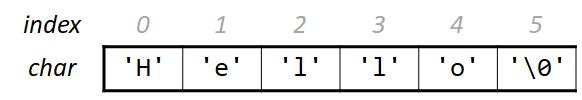
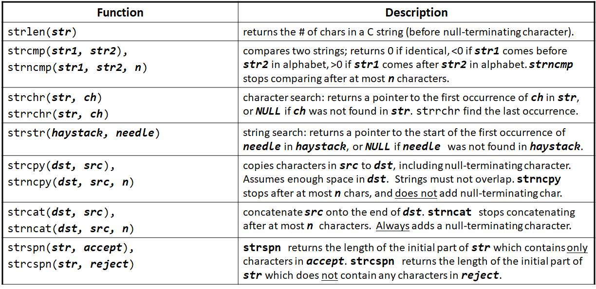
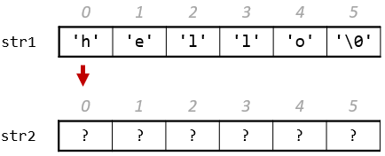
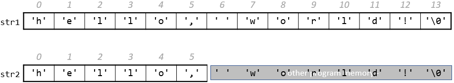
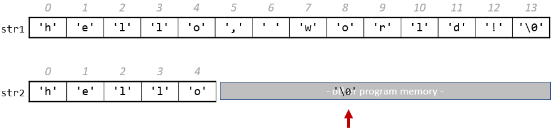
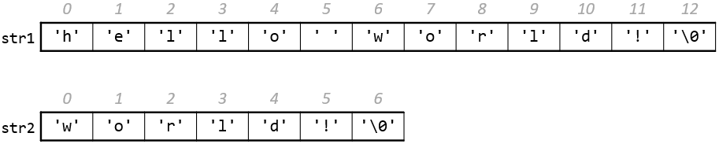
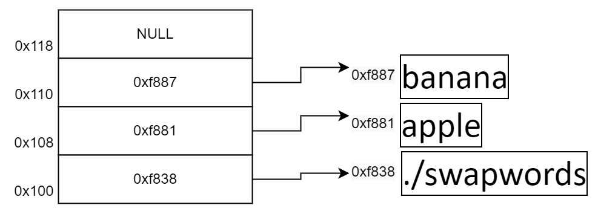
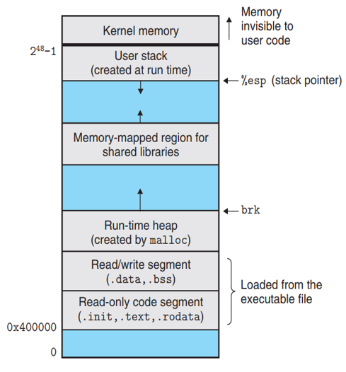

前言
计算机科学教学的前两年，重点是训练你的编程方法和抽象思维能力。在斯坦福大学成功的教学经验中，这两个任务分别由 CS106A 和 CS106B 两门课完成。在 StickMind 课程规划中，这两个任务由 CS101 课程完成，选用 C++ 编程语言。未来也可能会推出现代 C 语言版本的 CS101，敬请期待。
编程方法学的重点是将程序写对，能够利用逐步求精等基本策略，将稍大一些的程序进行分解。这类课程一般会设置一些小游戏或者文本处理，只要求程序能够正确运行即可。抽象思维的重点则是将程序写好，利用一些经典的数据结构和算法，你可以解决一些更为复杂的问题。这类课程不仅要求你把程序写对，更要求你能够高效地解决问题。
经过这些前置课程的训练，你基本能够掌握以下一些能力：
- 了解 Python/C++/Java 基本语法
- 会用递归思维解决问题
- 理解数据抽象并能够实现经典的抽象数据类型（链表、栈、堆、集合、映射）
- 理解并能够实现经典算法（搜索、排序、回溯、哈希）
作为一名程序员，你也应该具备良好的软件工程能力，能够编写组织良好、可读性强的代码。
本课程在计算机科学教学中充当了承上启下的作用。这类课程一般以“计算机组成原理”或“计算机系统基础”冠名。前者偏重硬件，会涉及到 CPU 的内部细节，甚至会要求你设计一个 CPU 模拟器；而后者则偏重软件，以软件开发者的视角抽象看待硬件，不会在硬件层面花费太多精力。本课程倾向于后者，继续提升你的编程技术，在广度和深度上拓展你的编程经验。
本课程将从 C 语言开始，逐步深入到底层汇编语言，一步步带你梳理计算机的运行机制。当完全理解计算机如何执行程序并操作数据时，你将会成为一名更高效的程序员，特别是在处理调试问题、性能优化、内存管理以及程序健壮性方面。只有理解程序是如何运行的，你才能更好地理解 Python/C++/Java 这些高级语言的底层执行逻辑，才能更快地学习其他编程语言进行开发。
本文档是《CS102：计算机组成与系统》课程伴侣，章节规划大致和课程计划同步。大部分内容取材自《深入理解计算机系统》和《C 程序设计语言》两本教材，如有雷同，纯属故意。技术类书籍在没有掌握的情况下阅读，往往效率低下。通过课程、讲义或手册的形式，将一些核心的概念打磨清楚后再去看书，不仅可以节省大量宝贵的时间，还能真正领会字里行间的深意。所以，本书也可以作为上述两本教材的上手指南。
目标
本课程的目标是让学生掌握
- 以复杂的内存和指针方式编写 C 程序
- 对地址空间以及 C 程序的编译/运行时行为，能够建立一个准确的模型
获得以下能力
- 把 C 语言转换到 x86-64 汇编语言
- 编写适配硬件算术局限性的程序
- 识别程序瓶颈并提高运行时性能
- 在 Linux 环境中开发程序
贯穿整个课程，最终会带你揭开计算机基础架构的奥秘。
Linux 介绍
本章通过一些基本概念介绍 Linux 的开发环境。首先，我们会讨论 Linux 基金会；然后，介绍一些流行的 Linux 发行版。最终目的是希望大家能够选择一款合适的发行版，作为日常开发的必备工具。
Linux 历史
Linux 是一种开源计算机操作系统，最初是在基于英特尔 x86 的个人计算机上开发的。随后，它被移植到了一系列其他硬件平台上，从小型嵌入式设备到世界上最大的超级计算机。
1991 年，Linus Torvalds 还是芬兰赫尔辛基的一名学生。当时他开始了一个项目：编写自己的操作系统内核。他还收集并开发了以内核为中心的整个操作系统所需的其他基本组件。没过多久，该项目就被命名为 Linux 内核，并最终发展成为对当今世界产生巨大影响的项目。
1992 年，Linux 通过 GNU（自由软件基金会 FSF 的一个项目，推广免费软件）使用 GPL 许可，这使它能够建立一个全球开发者社区。通过将内核与 GNU 项目中的其他系统组件相结合，许多其他开发人员创建了名为 Linux 分发版的完整系统，该系统首次出现在 90 年代中期。
90 年代中期创建的 Linux 发行版完全免费，为计算提供了基础，并成为开源软件运动的推动力。1998 年，IBM 和 Oracle 等大公司宣布支持 Linux 平台，并开始了一系列重大的开发工作。
Linux 基金会
Linux 基金会（LF）是一个非营利性技术联盟，负责托管和促进开源软件项目的协作开发。除了提供一个可以保护和加速 Linux 内核开发的中立组织之外，LF 还致力于围绕开源项目构建一个可持续的生态系统，以加速技术开发和商业应用。
Linux 基金会项目对世界基础设施至关重要，包括 Linux、Kubernetes、Node.js、ONAP、PyTorch、RISC-V、SPDX、OpenChain 等。Linux 基金会专注于利用最佳实践，满足贡献者、用户和解决方案提供商的需求，为开放协作创建可持续的模型。
三大主流 Linux 发行版家族
最具代表性的几个发行版家族有：
- Red Hat 系统家族（包含 CentOS 和 Fedora）
- SUSE 系统家族（包含 openSUSE）
- Debian 系统家族（包含 Ubuntu 和 Linux Mint）

参见：The LWN.net Linux Distribution List
Linux 基金会发布的软件都会保持发行版兼容性，这意味着这些软件几乎可以在所有的现代发行版中无差别运行。不同发行版之间可能仅仅是包管理器、软件版本、文件位置之间有些许差异。掌握任何一个发行版的使用后，都可以很快地迁移到另一个。
Red Hat 系统家族
Red Hat Enterprise Linux（RHEL）家族包括 Fedora，Rocky Linux 和 Oracle Linux 在内的系列产品。
Fedora 与 RHEL 有着密切的关系，并且包含的软件比 Red Hat 的企业版多得多。其中一个原因是，一个多元化的社区参与了 Fedora 的构建，其中许多贡献者并不为 Red Hat 工作。此外，它还被用作未来 RHEL 版本的测试平台。
由于 CentOS 8 在 2021 年之后不再更新，Rocky Linux 挑起了大梁，目的是提供一个由社区驱动的企业版 RHEL。
关于 Red Hat 家族的一些信息：
- Fedora 是 RHEL 的上游测试平台
- Rocky Linux 是 RHEL 的克隆
- 支持多个硬件平台
- 使用基于 RPM 的 dnf 包管理器来安装、更新和删除系统中的包
- RHEL 在企业中有着广泛的使用。
SUSE 系统家族
SUSE Linux Enterprise Server (SLES)/openSUSE 的关系和 RHTL/Fedora 很相似。
关于 SUSE 家族的一些信息：
- SLES 是 openSUSE 的上游
- 使用基于 RPM 的 zypper 包管理器来安装、更新和删除包
- 包括用于系统管理目的的 YaST 应用程序。
- SLES 广泛应用于零售业等其他行业
Debian 系统家族
Debian 发行版是 Ubuntu 和 Linux Mint 等其他几个发行版的上游，通常用于服务器和台式计算机。Debian 是一个纯粹的开源社区项目（不属于任何公司），并且非常注重稳定性。
Debian 为所有 Linux 发行版的用户提供了迄今为止最大、最完整的软件仓库。Ubuntu 旨在提供长期稳定性和易用性之间的良好折衷。由于 Ubuntu 的大部分软件包都来自 Debian 的稳定分支，继承了 Debian 的超大软件仓库。本课程将基于 Ubuntu 22.04 LTS 发行版进行学习。
关于 Debian 家族的一些信息：
- Debian 家族是 Ubuntu 的上游，Ubuntu 是 Linux Mint 和其他版本的上游
- 使用基于 DPKG 的 APT 包管理器来安装、更新和删除包
- Ubuntu 已被广泛用于云部署
- 虽然 Ubuntu 是在 Debian 之上构建的，并且是基于 GNOME 的，但它在视觉上与标准 Debian 以及其他发行版上的界面不同
Windows 模拟 Linux 环境
本节目标
由于大部分同学使用 Windows 系统，在 Windows 平台体验 Linux 开发工具也是可以的。完成本节内容的学习，你应该能够尝试解决以下问题：
- 什么是 MSYS2？如何安装 MSYS2？
- 如何使用
pacman包管理工具更新、安装、删除软件包？ - 如何修改 MSYS2 国内源？
- 如何使用 MSYS2 编译/运行 C 程序？
安装 MSYS2 开发工具
MSYS2 提供了一个易于使用的类 Linux 环境来构建、安装和运行本机 Windows 软件。配合 VS Code 等开发工具，可以搭建一个较为轻量的开发环境。对于一些 POSIX 依赖不太严格的测试，比起使用 Linux 虚拟机更为直接、方便。
安装过程，有以下几点需要注意：
- 国内用户建议断网安装，避免中途出现更新密钥卡死的问题
- 安装完后，国内用户建议修改国内软件源，提高下载速度
- 后续软件体积较大，建议安装在非 C 盘根目录
- 建议使用 MSYS2 UCRT 子系统，和课程保持一致
- 优先安装
mingw-w64-ucrt-x86_64-前缀的软件包
常用命令总结如下，方便后续使用查询，参考连接：Package Management
-
更新 MSYS2 组件，修改源后建议更新两次
pacman -Suy -
安装
openssh可用于后续连接远程服务器pacman -S openssh -
安装
gcc、gdb、pkg-config等常用开发工具pacman -S mingw-w64-ucrt-x86_64-toolchain -
安装
make，cmake，ninja等构建工具pacman -S make mingw-w64-ucrt-x86_64-cmake mingw-w64-ucrt-x86_64-ninja
编译运行 C 程序
在 MSYS2 当前目录创建一个 hello.c 文件，输入以下代码：
#include <stdio.h>
int main(void) {
printf("Hello World.\n");
return 0;
}
使用以下命令编译你的第一个 C 程序：
gcc hello.c -o hello
运行该程序，需要以 ./ 开头执行以下命令：
./hello
前缀 ./ 表示在当前目录下寻找 hello 程序。
Ubuntu 虚拟机安装及配置
本节目标
本节带大家使用 VirtualBox 安装一个 Ubuntu 22.04 LTS 桌面系统，并尝试使用 OpenSSH 模拟远程登陆。完成本节内容的学习，你应该能够尝试解决以下问题：
- 如何通过 VirtualBox 安装 Ubuntu 虚拟机？
- 如何使用
apt包管理器安装、更新、删除软件包？ - 如何修改 Ubuntu 软件源提高下载速度？
- 如何使用 MSYS2 的
ssh工具访问 Ubuntu 虚拟机？
安装 Ubuntu 虚拟机
VirtualBox 是 Oracle 提供的一款流行的虚拟化软件，可用于 Linux、mac 和 Windows 系统。由于 Linux 系统相对灵活，软件包依赖维护较差，在不熟悉的情况下，很容易造成系统破坏，无法开机等问题。所以，初学阶段没必要在物理机上安装真实的 Linux 系统，就目前的学习而言，虚拟机提供的功能完全够用。一旦虚拟机出现问题，可以直接删除，重新安装。
提前下载 VirtualBox 和 Ubuntu 22.04 LTS 镜像：
详细的安装过程，请跟随课堂视频一步步完成安装。
安装开发工具
apt 命令是一个功能强大的命令行工具，它与 Ubuntu 的高级打包工具（APT）配合使用。 apt 中包含的命令提供了安装新软件包、升级现有软件包、更新软件包列表索引、甚至升级整个 Ubuntu 系统的方法。
尝试安装以下软件：
-
build-essential包含了常用的gcc开发工具sudo apt install build-essential -
安装
gdb、valgrind调试器和内存检测工具sudo apt install gdb valgrind -
安装
git，cmake等常用工具sudo apt install git cmake ninja-build
参考文献：
安装 SSH 工具
OpenSSH 是一个功能强大的工具集，用于远程控制联网计算机以及在联网计算机之间传输数据。OpenSSH 客户端和服务器应用程序的安装非常简单。
使用以下命令在 Ubuntu 系统上安装 OpenSSH 客户端应用程序：
sudo apt install openssh-client
使用以下命令在 Ubuntu 系统上安装 OpenSSH 服务器应用程序：
sudo apt install openssh-server
默认情况下，OpenSSH 服务将会自动启动，也可以使用下述命令手动开启服务：
sudo systemctl start sshd.service
参考文献：
模拟远程登陆
这里需要先配置端口转发，详细的配置过程，请跟随课堂视频一步步完成。

完成端口转发配置后，我们可以使用终端模拟远程登陆：
$ ssh cs@localhost -p 2222
The authenticity of host '[localhost]:2222 ([127.0.0.1]:2222)' can't be established.
ED25519 key fingerprint is SHA256:gfHLfANKNM4cCAoDEZ/CiZ97ql3lfUA2CVM28H6JssM.
This key is not known by any other names.
Are you sure you want to continue connecting (yes/no/[fingerprint])? yes
Warning: Permanently added '[localhost]:2222' (ED25519) to the list of known hosts.
cs@localhost's password:
Welcome to Ubuntu 22.04.3 LTS (GNU/Linux 6.2.0-26-generic x86_64)
* Documentation: https://help.ubuntu.com
* Management: https://landscape.canonical.com
* Support: https://ubuntu.com/advantage
Last login: Tue Aug 15 13:56:00 2023 from 10.0.2.2
VS Code 官方远程插件工作流
前往官网下载安装 VS Code，在插件市场搜索并安装 Remote - SSH 插件。

插件安装完成后，在工具栏选择 Remote Explorer 模块，点击 SSH 后面的 + 号。在弹出的输入窗口中，输入 SSH 登陆地址。
ssh cs@localhost -p 2222
随后会提示选择配置文件保存位置，此处直接“回车”选择默认位置即可。

此时点击 Remote 右侧的刷新按钮，就可以看到服务器 IP。连接该服务器，只需要点击 IP 右侧的箭头，随后输入你的账户密码就可以登录。登录成功后，可以在 VS Code 右下角看到连接状态。

服务器连接成功后，通过 VS Code 菜单栏 File 可以选择 “Open File/Open Folder” 编辑你的文件或项目。
Linux 命令行
Linux 发行版通常提供多种不同的图形桌面环境，极大地方便了不同用户的使用习惯，但是 Linux 系统真正强大的却是命令行。本课程建议大家选择一款流行的桌面环境，将更多的精力放在命令行的学习上，而不是放在五花八门的桌面环境定制上。
从今天开始，通过命令行工具和你的 Linux 系统进行交互，并一直走下去。真正的 Linux 系统管理员也是花费了大量的时间在命令行的工具上，通过文本界面自动化一些任务，解决一些问题。有句话是这么说的，“图形用户界面让简单的事情变得更简单，而命令行界面让困难的任务变得可能”。Linux 系统严重依赖大量的命令行工具，这些工具有以下一些优点：
- 没有 GUI 开销，对硬件要求更友好
- 几乎所有的任务都能够通过命令行完成
- 可以为一些常见的任务定制命令脚本自动完成
- 可以在任何地方通过网络连接远程 Linux 服务器
- 图形界面在不同的发行版中会有差异，但命令行的使用却是通用的
使用文本终端
终端模拟器程序在桌面窗口中模拟独立终端，本质上就像你在没有运行图形界面的纯文本终端上登录机器一样。大多数终端模拟器程序支持打开多个终端会话。Ubuntu 默认使用 gnome-terminal 终端应用程序。

sudo
sudo 为用户提供管理（admin）权限，允许用户使用 root 用户的安全权限来运行程序。全新安装的 Ubuntu 系统默认 root 密码是随机的，每次开机都会有一个新的密码。
如果想把该密码固定，可以打开终端，输入以下命令。重复输入两次密码进行设置（输入过程中，字符不会显示）。
sudo passwd
此时我们可以通过以下命令切换到 root 用户。注意，在 root 用户下所有操作都是允许的，切记不要误改文件，否则无法恢复。
su root
cs@stickmind:~$ su root
Password:
root@stickmind:/home/cs#
基本命令
本节讨论如何通过命令行完成一些基本操作。
登陆/退出系统
回顾虚拟机的使用教程，通过命令行，可以使用以下命令登陆系统。SSH 通过服务器地址 172.0.0.1 和端口 2222 访问系统中的 cs 账户：
ssh cs@172.0.0.1 -p 2222
退出系统可以使用：
exit
重启/关机
使用 shutdown 命令可以关闭 Linux 系统。以下命令表示立刻关闭计算机（不加参数 now，则系统将会在 1 分钟后关机）：
sudo shutdown now
重启计算机可以使用 reboot 命令。以下命令表示立刻重启计算机：
sudo reboot
reboot 命令等价于 sudo shutdown -r now。其中，参数 now 可以替换成具体时间，比如 sudo shutdown -r +30 表示 30 分钟后重启。
访问路径
登陆系统后，默认的位置是个人账户目录，也可以通过系统变量 $HOME 查看：
echo $HOME
在 Linux 系统中，该路径也可以使用 ~ 表示，例如 ~/Desktop 表示 /home/cs/Desktop。
| 命令 | 用途 |
|---|---|
pwd | 显示当前路径 |
cd ~ 或 cd | 切换到个人账户目录 |
cd .. | 切换到上级目录 (..) |
cd - | 切换到前一步目录 - (减号) |
定位程序位置
当我们执行命令时，系统会根据配置好的路径依次在目录中寻找该命令；如果找不到，则会提示 “not found”。可以通过系统变量 PATH 查看修改查找的路径和顺序。
echo $PATH
根据输出可以看出，路径之间用冒号分隔，查询顺序从左到右依次进行。
$ echo $PATH
/usr/local/sbin:/usr/local/bin:/usr/sbin:/usr/bin:/sbin:/bin:/usr/games:/usr/local/games:/snap/bin
在执行 hello 程序时，如果不添加 ./ 前缀，则系统会提示找不到 hello 命令，其原因就是 PATH 并不包含当前目录。如果我们将 hello 程序放到 ~/.local/bin 目录下，则可以通过以下命令，将该路径添加到 PATH 变量中。
export PATH=$HOME/.local/bin:$PATH
使用 which 命令可以定位程序的位置，该命令会在系统路径中查找程序的位置并输出，例如
$ which make
/usr/bin/make
如果不局限系统路径，可以使用 whereis 命令扩大搜索范围。
$ whereis diff
diff: /usr/bin/diff /usr/share/man/man1/diff.1.gz
绝对路径 vs 相对路径
在 Linux 中定义路径的两种方式：
-
绝对路径
绝对路径以根路径
/开头，依次跟随目录树分支，定位到需要的位置，例如，/usr/bin。 -
相对路径
相对路径以当前路径开头，
.表示当前目录，..表示上一级目录，~表示个人账户目录。
在个人账户目录中，执行以下命令都会切换到 /usr/bin 目录，
$ pwd
/home/cs
$ cd /usr/bin
$ pwd
/home/cs
$ cd ../../usr/bin
查看文件系统
使用第三方工具 tree 可以很方便地浏览文件系统内容，通过以下命令进行安装：
sudo apt install tree
直接使用 tree 命令会递归列出当前路径下所有文件树，通过 -L 指定层级可以指定显示的文件深度：
$ tree -L 1
.
├── Desktop
├── Documents
├── Downloads
├── Music
├── Pictures
├── Public
├── snap
├── Templates
└── Videos
其他一些常用命令也可以实现类似目的：
| 命令 | 用途 |
|---|---|
ls | 列出当前目录内容 |
ls –a | 列出当前目录内容，包含 . 开头的隐藏文件 |
ls -l | 以列表形式列出当前目录内容 |
练习
- 使用
whereis命令定位gcc程序的位置 - 显示当前路径
- 切换到
/usr/bin目录 - 切换到个人账户目录
- 切换到上一级目录
- 使用
-参数切换到前一步目录 - 显示当前路径
文件操作
Linux 提供了许多命令用于查看文件的内容、创建新文件或空文件、更改文件的时间戳以及移动、删除和重命名文件或目录。这些命令可以用于管理数据和文件，并确保在正确的位置提供正确的数据。在本节中，我们将学习如何管理文件。
查看文件
| 命令 | 用途 |
|---|---|
cat | 用于查看不太长的文件，不提供页面操作 |
tac | 逆序打印文件内容 |
less | 用于查看较大的文件，提供页面操作，操作逻辑类似 vi 编辑器 |
tail | 默认打印文件后 10 行内容，通过参数 -n 15 或 -15 可以改变显示的行数 |
head | 和 tail 命令相反，默认打印文件前 10 行内容 |
补充：vi 编辑器使用 j 向下滚动，k 向上滚动，使用 / 向后查找，使用 ? 向前查找。
文件的创建
touch 命令常用于更新文件的状态，默认修改文件时间戳为当前时间。不过，我们也可以使用该命令创建一个空白文件：
touch myfile
更多功能可以查询帮助，比如使用 -t 可以设定具体的时间戳。以下命令将文件时间设置为 8 月 12 日 14 点整：
touch -t 08121400 myfile

文件移动、重命名等
mv 命令可以实现两个功能：
- 重命名文件或文件夹
- 移动文件到另一个目录
如果不确定删除哪些文件，可以是用 -i 交互操作。
| 命令 | 用途 |
|---|---|
mv | 重命名文件 |
rm | 删除文件 |
rm –f | 强制删除文件 |
rm –i | 交互删除文件 |
文件夹创建和删除
mkdir 命令用于创建目录文件夹，例如，在当前目录创建文件夹可以使用
mkdir myfolder
在指定目录创建文件夹可以使用
mkdir ~/Desktop/myfolder
删除文件夹可以使用 rmdir 命令，默认只能删除空文件夹。使用命令 rm -rf 可以快速简单地递归删除整个文件夹。
| 命令 | 用途 |
|---|---|
mv | 重命名文件夹 |
rmdir | 删除空白文件夹 |
rm -rf | 强制删除文件夹 |
修改命令行提示符
命令行工具通过变量 PS1 存储命令行的文本字符串，一般 Linux 发行版会默认设置一个值，例如：
cs@stickmind:~$
通过修改该变量，可以定制显示的内容：
PS1="cs102@virtualbox: "
命令提示符将修改为：
cs102@virtualbox:
注意，在终端直接赋值变量名，仅在当前激活的终端有效。重新打开终端，变量内容仍然是默认值。如果我们想永久修改该变量，可以尝试在 .bashrc 中进行设置。
练习
- 使用
touch创建两个文件file1和file2 - 使用
ls -l检查文件状态 - 将
file1重命名为new_file1 - 将
file2移动到上级目录 - 删除
file2和new_file1 - 创建文件夹
dir1 - 删除
dir1
文件搜索
熟练使用查找命令可以节省很多时间并提高工作效率，涉及搜索的主要工具是 find 等实用程序。
标准文件流
在执行命令时，默认情况下有三个标准文件流始终打开以供使用：标准输入 stdin、标准输出 stdout 和标准错误 stderr。
| 名称 | 符号名 | 值 | 示例 |
|---|---|---|---|
| 标准输入 | stdin | 0 | 键盘 |
| 标准输出 | stdout | 1 | 终端 |
| 标准错误 | stderr | 2 | 日志 |
stdin 通常是键盘，stdout 和 stderr 通常打印在终端上。利用重定向，也可以将某个文件作为输入 stdin，并将输出 stdout 定向到另一个文件，stderr 通常定向到错误日志文件。
在 Linux 中，所有打开的文件都由所谓的文件描述符（file descriptor）在内部表示的并从零开始，stdin 是 0，stdout 是 1，stderr 是 2。如果还打开了其他文件，则文件描述符继续从 3 开始，并依次增加。
重定向
通过 Shell，我们可以重定向三个标准文件流，这样我们就可以从一个文件或另一个命令中获得输入，而不是从键盘获得输入。我们可以将输出和错误写入文件，或者用于为后续命令提供输入。
例如，可以使用 > 符号将 hello 输出定向到某个文件：
./hello > anyfile
使用 < 符号将某个文件作为输入：
cat < hello.c
输入输出还可以组合使用：
./add < infile > outfile
对于 stderr 需要明确指定文件描述符的值：
./add 2> errfile
如果打算将 stderr 输出到 stdout，则可以使用：
./add > outfile 2>&1
管道
UNIX/Linux 的理念是设计许多简单而简短的程序或命令，协同工作来解决复杂的任务，而不是设计一个复杂的程序，通过不同的选项和模式来完成。为了实现这一点，UNIX/Linux 大量使用管道来实现这一目的，通过管道可以将一个命令或程序的输出作为另一个命令或程序的输入。
可以通过管道符号 | 来实现管道操作：
$ cmd1 | cmd2 | cmd3
以上命令非常有效，因为 cmd2 和 cmd3 不必等待先前的管道命令完成，就可以开始处理其输入流中的数据；特别是在多核心系统上，可用的计算能力得到了更好的利用。
另一点是，管道之间的输入输出无需存储到硬盘上，硬盘的读写同样效率低下。
文本搜索
使用 grep 命令可以打印与模式匹配的行，常用于查找字符串。例如，在文件 hello.c 中查找 main 函数，可以使用如下的命令：
grep main hello.c
利用管道，也可以在标准输出中查找字符串，例如：
cat hello.c | grep main
文件查找
find 是 Linux 系统管理员日常生活中非常有用且经常使用的实用程序。它可以从任意特定目录（或目录集）向下递归文件系统，并定位符合指定条件的文件，默认路径名始终为当前工作目录。
例如，管理员有时会花几周的时间扫描的一个潜在的核心文件，以便将其删除。有时候也用于清理临时目录 /tmp 或缓存目录 /var/cache/ 中的非必要文件。许多发行版也内置一些脚本程序，定期清理这些目录。

不指定参数的情况下，find 会递归列出当前目录下所有的文件。常用的选项有：
-
-name列出包含某个字符串的文件find /usr -name gcc -
-iname列出不包含某个字符串的文件find /usr -iname gcc -
-type限定文件的类型，例如d表示目录，l表示符号链接，f表示普通文件find /usr -type d -name gccfind /usr -type f -name gcc
find 的另一个用途是能够在符合搜索条件的文件上运行命令，需要使用选型 -exec。例如，查找并删除 .swp 后缀的文件：
find -name "*.swp" -exec rm {} ';'
其中 {} 充当占位符，用于替换搜索到的文件名。需要注意的是，命令必须以 ';' 或 \; 结尾。
练习
以 / 开头，搜索包含 init.d 的文件。
从 C++ 到 C
本节我们会使用 C 语言复习 CS101 中的一些概念，并改写一些 C++ 程序，逐步上手 C 语言的开发。
相信大家还记得 CS101 库中的两个重要的接口工具 strlib.h 和 filelib.h。这些抽象接口极大地方便了我们编写字符串处理和文件 I/O 相关的程序。所以在本课程的教学方式上，我们依然遵循抽象思维的观念，避免较早地涉及底层的细节。在入门示例中，重点抽象了以下两个类型 string 和 stream，以便在不涉及指针的情况下，就能完成字符串和文件的处理工作。
希望通过这样的方式，方便大家对比学习，能够将现有的知识迁移到新的语境中。
/*
* Type: string
* ------------
* The type string is identical to the type char *, which is
* traditionally used in C programs. The main point of defining a
* new type is to improve program readability. At the abstraction
* levels at which the type string is used, it is usually not
* important to take the string apart into its component characters.
* Declaring it as a string emphasizes this atomicity.
*/
typedef char* string;
/*
* Type: stream
* ------------
* Like string, the stream type is used to provide additional
* readability and is defined to be equivalent to FILE *
* (which is particularly confusing because it violates
* standard case conventions).
*/
typedef FILE* stream;
为了照顾部分编程基础较为薄弱的同学，本次课程也会引入 CMake 并介绍一种较为方便的 VS Code 开发工作流，方便大家课后自行练习、巩固。
练习
下载群文件中的 230918-cslib/cslib.zip 文件，尝试使用 CMake 工具，将 .h 和 .c 组成的文件集合打包成静态库。
simpio.h
该接口导出几个函数来简化输入数据的读取。
接口
| 函数 | 功能 |
|---|---|
GetInteger() | 从标准输入读取一行文本并将其作为 int 整数返回 |
GetLong() | 从标准输入读取一行文本并将其作为 long 整数返回 |
GetReal() | 从标准输入读取一行文本并将其作为 double 浮点数返回 |
GetLine() | 从标准输入读取一行文本并将其作为字符串返回 |
ReadLine(infile) | 从输入文件中读取一行文本并将该行作为字符串返回 |
接口详情
/*
* Function: GetInteger
* Usage: i = GetInteger();
* ------------------------
* GetInteger reads a line of text from standard input and scans
* it as an integer. The integer value is returned. If an
* integer cannot be scanned or if more characters follow the
* number, the user is given a chance to retry.
*/
int GetInteger(void);
/*
* Function: GetLong
* Usage: l = GetLong();
* ---------------------
* GetLong reads a line of text from standard input and scans
* it as a long integer. The value is returned as a long.
* If an integer cannot be scanned or if more characters follow
* the number, the user is given a chance to retry.
*/
long GetLong(void);
/*
* Function: GetReal
* Usage: x = GetReal();
* ---------------------
* GetReal reads a line of text from standard input and scans
* it as a double. If the number cannot be scanned or if extra
* characters follow after the number ends, the user is given
* a chance to reenter the value.
*/
double GetReal(void);
/*
* Function: GetLine
* Usage: s = GetLine();
* ---------------------
* GetLine reads a line of text from standard input and returns
* the line as a string. The newline character that terminates
* the input is not stored as part of the string.
*/
string GetLine(void);
/*
* Function: ReadLine
* Usage: s = ReadLine(infile);
* ----------------------------
* ReadLine reads a line of text from the input file and
* returns the line as a string. The newline character
* that terminates the input is not stored as part of the
* string. The ReadLine function returns NULL if infile
* is at the end-of-file position.
*/
string ReadLine(stream infile);
strlib.h
该接口定义了动态分配字符串的通用库。传统 C 字符串与使用此接口定义的字符串之间的主要区别是：
strlib.h接口负责内存分配，确保有足够的空间来保存每个字符串操作的结果。strlib.h接口的客户端应将所有字符串视为不可变，并避免写入字符数组。
字符串抽象数据类型
字符串在 C 中就是一个字符序列（数组）。如果想要完整地掌握 C 字符串，我们需要从多个层面、不同角度来仔细研究。涉及到的知识点，保守估计也要四五节课的时间来讨论。
以抽象数据类型来看待字符串，可以将其当作一个逻辑单元来处理，无需过早地关注数据表示的内部细节。这也是我们一直推崇的抽象思维方法，即关注抽象层的行为，在学会如何有效使用之前，不必沉溺于细节问题。
以抽象观点处理字符串，我们可以利用 strlib.h 迁移很多 CS101 中的字符串处理案例。遗憾的是，C 标准库并没有提供现成的容器，在涉及中间数据存储时，暂时不太方便处理。后续学习完数组后，我们可以使用动态数组来实现这一目的。随着课程的深入，最终我们应该有能力实现一个泛型的 C 版本的容器，例如 vector、stack 等。
关于字符串的分层抽象如下所示：
| 分层抽象 |
|---|
strlib.h 接口 |
string.h 接口 |
| 语言级操作 |
| 机器级操作 |
其中，string.h 是 C 标准接口，后续课程会重点介绍。这也是你必须掌握的接口，但是用好该接口需要掌握很多底层的细节。常规的字符串处理，并不需要关注太多底层的细节，所以这里引入了 string 类型，并在标准库基础上封装了更好用的 strlib.h 接口，使得字符串操作相对容易些。
strlib.h 接口
提起抽象类型，我们就要确定可以在该类型上实施的操作，这些被称为基本操作。
一些常见的操作比如：
- 如何定义一个字符串变量/常量？
- 如何从用户那里读入一个字符串？
- 如何在屏幕上输出一个字符串？
除此之外，我们还需要：
- 如何确定一个字符串的长度？
- 如何比较两个字符串？是否相等？是否靠前？
- 如何选择字符串中某个位置的字符？
- 如何连接两个字符串？
- 如何将单个字符转换为字符串？
- 如何对字符串进行切分？
- 如何判断一个字符串是否包含另一个字符串？
以上所有的操作，在 C++ 中都可以方便地通过类和成员方法来定义。虽然 C 没有 C++ 对象和方法的概念，但是我们可以使用自由函数来替代。
| 函数 | 功能 |
|---|---|
ConcatString(s1, s2) | 通过将两个字符串首尾相连进行连接 |
IthChar(s, i) | 返回字符串 s 中位置 i 的字符 |
SubString(s, p1, p2) | 返回 s 索引区间为 [p1, p2] 的子字符串 |
CharToString(ch) | 接受单个字符并返回由该字符组成的单字符字符串 |
StringLength(s) | 返回字符串 s 的长度 |
CopyString(s) | 将字符串 s 复制到动态内存中并返回新字符串 |
StringEqual(s1, s2) | 如果字符串 s1 和 s2 相等，则返回 true |
StringCompare(s1, s2) | 如果字符串 s1 按字典顺序位于 s2 之前，则返回 -1；如果相等，则返回 0；如果 s1 位于 s2 之后，则返回 +1 |
FindChar(ch, text, start) | 从位置 start 开始，在字符串 text 中搜索的字符 ch，并返回该字符出现的第一个索引；如果未找到匹配项，则返回 -1 |
FindString(str, text, start) | 从位置 start 开始，在字符串 text 中搜索字符串 str，并返回该字符串出现的第一个索引；如果未找到匹配项，则返回 -1 |
ConvertToLowerCase(s) | 返回一个新字符串，其中所有字母字符都转换为小写 |
ConvertToUpperCase(s) | 返回一个新字符串，其中所有字母字符都转换为大写 |
IntegerToString(n) | 将整数转换为相应的数字字符串 |
StringToInteger(s) | 将数字字符串转换为整数 |
RealToString(d) | 将浮点数转换为相应的数字字符串 |
StringToReal(s) | 将数字字符串转换为浮点数 |
Pig Latin
本节通过一个简化的 C 程序复习模块化开发和逐步求精的过程。模块化开发就是把一个程序分成多个模块的技术，回忆下 CS101 作业 1 中 soundex 的处理过程，模块通过一系列函数实现功能拆分。
通过该案例，我们也可以了解从 C++ 转到 C 的一些变化，例如，如何维护状态信息？如何保持状态的私有性？
任务说明
Pig Latin 按照如下规则转换每个英文单词，从而创造一门新的语言：
- 如果单词以辅音开头，则将第一个元音字母前的所有辅音字符串移到末尾，并加上
ay - 如果单词以元音开头，则加上
way
例如，单词 scram 符合第一条规则，所以将 scr 移动到尾部并加上 ay，结果就是 amscray。单词 apple 符合第二条规则，所以直接加上 way，结果就是 appleway。
任务 1：实现交互程序
程序执行时会提示用户输入一段文字，然后输出如下结果：
Enter a line: this is pig latin.
isthay isway igpay atinlay.
我们采用自顶向下实现，可以不用一开始就决定如何将程序分割成多个模块。在实现交互程序时，可以先假设有一个接口，能够将一行字符串转换成 Pig Latin：
/*
* Function: TranslateLine
* Usage: TranslateLine(line);
* ---------------------------
* This function takes a line of text and translates
* the words in the line to Pig Latin, displaying the
* translation as it goes.
*/
void TranslateLine(string line);
以抽象思维开发程序，我们已经能够实现程序的交互部分了。
💡Hint
int main(int argc, string args[]) {
printf("Enter a line: ");
string line = GetLine();
TranslateLine(line);
}
任务 2：实现 TranslateLine
实现 TranslateLine 将转变抽象层级，此时我们作为开发者将提供上述接口。在这个层级上，问题依然复杂，需要进一步将问题拆解。
TranslateLine 需要做的工作大致可以分为 3 步：
- 如何将一个字符串拆分成独立的单词
- 按规则将每个单词转换成 Pig Latin
- 显示转换后的单词，并以换行符结尾
💡Hint
如果以容器的思想，如何拆分上述步骤？
C 虽然没有提供直接使用的容器，但使用动态数组，我们也能够完成同样的任务。这里为了简便起见，我们不需要存储每个单词，一旦翻译完成就立刻显示结果，并处理下一个单词。
回顾 CS101 中作业 2 的 search 程序，对单词的处理一般是通过 token 来完成的。比如，这样的输入行：
this is pig latin.
可以看作是以下 8 个 token 组成：

可以看出，除了单词，token 还包括一些标点组成的字符，在处理 token 时需要进行判断。这里我们假设有一个谓词函数接口 IsLegalWord 可以直接使用。
同样为了简便起见，我们提供了一份 C 版本的 tokenscanner 接口库。
| 函数 | 功能 |
|---|---|
InitScanner(line) | 初始化扫描器，以便从开头读取每个 token |
GetNextToken() | 返回下一个 token |
AtEndOfLine() | 如果扫描器到达末尾，返回 true |
常用的编程习语可以参考如下的循环结构。其中，InitScanner 初始化后，GetNextToken 将能够获取第一个记号。如果还没有 AtEndOfLine，扫描器将会继续获取下一个记号。
InitScanner(line);
while (!AtEndOfLine()) {
token = GetNextToken();
... 处理 token 记号 ...
}
在 tokenscanner 的帮助下，我们进一步拆分了 TranslateLine 处理逻辑，将翻译的工作交给 TranslateWord 处理。
💡Hint
void TranslateLine(string line) {
InitScanner(line);
while (!AtEndOfLine()) {
string token = GetNextToken();
if (IsLegalWord(token))
token = TranslateWord(token);
printf("%s", token);
}
printf("\n");
}
任务 3：实现 IsLegalWord 和 TranslateWord
完成 TranslateLine 的拆解后，我们的工作只剩下 token 处理的几个函数。
IsLegalWord 相对比较容易，我们只需要借助 ctype.h 接口提供的 isalpha 函数就能够判断 token 是否为有效单词。
💡Hint
bool IsLegalWord(string token) {
for (int i = 0; i < StringLength(token); i++) {
if (!isalpha(IthChar(token, i)))
return (false);
}
return (true);
}
TranslateWord 稍微复杂一些，根据规则你需要判断第一个元音字母的位置：如果位置为 0，则按照规则 1 处理；如果不为 0，则按照规则 2 处理。
那么如何判断元音字母呢？检查 strlib.h 接口，我们并没有发现现成的函数可以使用。此时，扩充该接口就很有必要了，因为判断元音的操作相当常见。
剩下的实现相对比较容易，合理使用 strlib.h 接口，我们可以完成这个任务。
💡Hint
string TranslateWord(string word) {
int vp = FindFirstVowel(word);
if (vp == -1) {
return (word);
} else if (vp == 0) {
return (ConcatString(word, "way"));
} else {
string head = SubString(word, 0, vp - 1);
string tail = SubString(word, vp, StringLength(word) - 1);
return (ConcatString(tail, ConcatString(head, "ay")));
}
}
int FindFirstVowel(string word) {
for (int i = 0; i < StringLength(word); i++) {
if (IsVowel(IthChar(word, i)))
return (i);
}
return (-1);
}
思考
- 为什么
GetNextToken不需要提供line参数？ - 循环结构中，
GetNextToken每次调用，都会从line的不同位置开始，这是如何做到的？ - 如何避免外部程序调用我们拆分的这些辅助函数？
推荐阅读
更多 C 和 C++ 的不同之处，可以参考 http://www.cs.ecu.edu/karl/4627/spr18/C.html
实验 0：上手 Linux 开发环境
本课程开发环境选用远程 Linux 云端服务器和命令行工具，搭配本地终端和 VS Code 即可完成所有练习。
本次实验将带大家练习远程开发的流程，实验结束后，你应该能够连接上课程的远程服务器，并能够使用终端命令，搭配 VS Code 进行代码编辑。
❓FAQ 为什么使用远程服务器进行开发？
如果回到上个世纪 80 年代，即使电脑就在你的面前，你也必须使用终端才能对计算机进行操作。现如今，随着个人计算机的发展，虽然图形界面早已成熟，但在真实的开发场景中，使用终端开发仍然占据主导地位。大量的前后端框架、开源项目、开发工具，也严重依赖终端操作。
本课程尽量还原类似的真实开发场景。当你以后有机会去软件公司实习时，你会发现，在这里掌握的技能，将会给你带来极大的回报。
登录课程云服务器
服务器 IP 地址为 106.14.165.94，在任何支持 ssh 命令的计算机终端1上输入如下命令。
- Window 11 已搭载 Windows Terminal
- Linux/macOS 内置 Terminal
ssh YourName@106.14.165.94
第一次使用会弹出确认信息，输入 yes 后紧接着输入服务器用户密码（输入过程中，密码不会显示），成功后的输出信息如下。
The authenticity of host '106.14.165.94 (106.14.165.94)' can't be established.
ED25519 key fingerprint is SHA256:LHvn4qDvTdM1+GcJtG2f+uywxDA2JSys.
This key is not known by any other names
Are you sure you want to continue connecting (yes/no/[fingerprint])? yes
Warning: Permanently added '106.14.165.94' (ED25519) to the list of known hosts.
YourName@106.14.165.94's password:
Welcome to Ubuntu 22.04.1 LTS (GNU/Linux 5.15.0-52-generic x86_64)
查看服务器信息常用命令
- 查看主机名：
hostname - 查看用户名：
whoami - 查看硬盘空间：
df -h（仅root权限） - 查看内存状态：
free -h - 查看当前文件夹空间：
du --max-depth=1 -h - 修改登录密码：
passwd
基于 SFTP 远程开发工作流
使用命令行成功登录服务器后，说明你的计算机已经包含了 SSH 等工具。为了便于开发，可以使用流行的 VS Code 文本编辑器辅助编辑、同步项目代码。
❓FAQ 为什么本课程不推荐使用 VS Code 官方 Remote 插件？
如果使用官方 Remote 插件，一旦连接服务器，VS Code 会在
home目录不断生成.vscode-server垃圾文件，严重的时候甚至达到几个 GB 的空间。除此之外，官方 Remote 插件内存占用也比较高，每个用户都会消耗几百 MB 的内存资源。
如此高的资源消耗，即便国内外各大高校自建的校内服务器，也无法承受。
参考：Copies of vscode-server installed on school servers take up excessive storage and RAM
安装 SFTP 插件
在 VS Code 插件市场搜索 SFTP，选择安装 Natizyskunk 开发的 SFTP 插件，如图所示。

配置
安装完插件之后，可以使用本课程提供的初始项目 starter-proj.zip，该项目已设置好 VS Code 和 SFTP 配置框架。解压后使用 VS Code 打开 starter-proj 文件夹。在 .vscode 文件夹下，编辑 sftp.json 文件修改以下几个信息：
username：服务器用户名password：服务器密码remotePath：服务器上需要编辑的项目路径，例如/home/xuehao/cs102/lab0/

使用
⚠️注意
参照上一步配置的
remotePath，必须先在服务器上提前创建好这些目录，才能进行接下来的操作。
配置好后，点击 VS Code 菜单栏 Help 选择 Show All Commands，或直接按 F1 快捷键，在弹出的命令列表中搜索 SFTP。选择 "SFTP: Download Project"，随后选择默认保存位置，远程服务器中的项目将会自动下载到本地的初始项目文件夹中。

在本地编辑完文件并保存后，SFTP 插件会自动将更新后的文件同步到远程服务器。编译、测试、调试等任务，可以通过终端 Terminal 在远程服务器上进行。
⚠️注意
添加文件：如果之前没有创建任何项目文件，那么当你在本地或服务器中创建文件时，并不会自动同步。此时可以使用 "SFTP: Sync Remote -> Local" 或 "SFTP: Sync Local -> Remote" 手动同步。
删除文件：删除文件比较特殊，以上三条命令，对删除文件不起作用。如果有文件需要删除，必须在本地和服务器中分别手动删除。
⚠️注意
如果不小心使用 VS Code 官方远程插件，可以使用
ls -a命令查看你的服务器目录，此时你会发现一个.vscode-server文件夹。可以使用使用
rm -r .vscode-server命令删除该目录。
⚠️注意
严禁使用 Jetbrains Clion/Fleet 连接服务器！一旦连接，此类开发工具会在服务器上下载超过 2 GB 的 Java 依赖。
终端是一台电子计算机或者计算机系统，用来让用户输入数据，及显示其计算结果的机器。
作业 0：使用 Linux 和 C
Linux 的使用和命令行操作需要不断地练习。熟练使用这些工具，才能更好地完成作业练习。但要注意的是，这些内容不需要刻意去记忆，经过一段时间的重复使用，自然可以掌握。
在开始作业之前，确保你已经能够：
- 登陆课程服务器
- 管理文件，浏览服务器文件系统
- 能够找到实验、作业的初始项目
- 能够合理地管理课程代码，避免杂乱无章
- 通过 VS Code 等编辑器修改服务器上的文件
- 逐步适应 Shell 和命令行的工作流
- 遇到不熟悉的命令，知道去哪里学习
- 会用
tab、上下键等快捷操作避免输入太多命令
本次作业目的是检验大家是否熟练使用 Linux 开发环境，能够适应编辑、构建、运行、测试 C 程序的工作流。
初始项目
建议在个人目录创建一个 cs102 的文件夹，用于管理课程所有的代码。然后可以使用下面的命令，将作业的初始文件复制到该目录。
cp -r /home/cs102-shared/assignments/assign0 ~/cs102
别忘了通过 VS Code 将文件同步到本地查看、编辑。
入侵者检测
在该任务中，你将调查一起模拟的入侵攻击并回答
readme.txt中的几个小问题。每个问题只需要简短的几句话即可，描述你用了什么样的 Linux 命令解决的。
入侵者访问了我们的服务器，并删除了很多文件。幸运的是，这些文件在服务器上都有备份，但在恢复文件之前，你要调查一下入侵者的身份并看看他们做了哪些破坏性操作。
在 assign0/samples/server_files 中包含了一些核心的文件，使用文件操作命令查看有哪些内容。
你需要先调查攻击者的身份。服务器可以供多个用户使用，每个用户的名字都在上述路径的 home 子目录中。例如，用户 bob 的路径是 /home/bob。文件 users.list 包含了认证用户的列表，home 子目录中的用户目录应该和该文件中的用户名一一对应。入侵者是未认证用户，所以他的名字不会出现在users.list 列表中。
你的任务就是找出这个入侵用户名！由于用户列表很多，通过手工比对不太现实，合适的命令行工具可以更快地完成这个任务。Q1：入侵者的名字是什么呢？你是用什么命令发现的？
提示
- 可以考虑创建一个临时文件用于存储中间数据，但更推荐使用管道来优化操作。
- 自学
diff命令的用法，看有没有什么启发。
如果你已经知道入侵者的名字，那么检查一下他的用户目录，看看有什么新的发现。虽然入侵者删除了目录下的文件，但似乎这个目录依然占用了一部分空间。想一想这是为什么？用命令行工具验证一下。
对了，以 . 开头的文件在 Linux 系统中属于隐藏文件，显示这些文件需要一些特殊的参数。Q2：在这些隐藏的文件中，有一个文件记录了入侵者所有的活动记录，这个文件是什么呢？它包含了什么内容？
如果想对系统实施破坏行为，必须使用 sudo 权限执行某些命令。在上述文件中，你会发现整个活动记录非常长，很难发现哪些命令用到了特权权限。Q3：用什么命令可以方便地提取出这些信息？入侵者使用 sudo 执行了哪些命令？
谢尔宾斯基分形
通过该任务，我们可以练习远程开发工作流：编辑、构建、运行、测试。
在 assign0 文件夹中，输入 make 将构建名为 triangle 的程序。运行该程序看看它做了什么：
./triangle
此时应该会输出谢尔宾斯基三角形的 ASCII 表示形式——太酷了！尝试再次运行 make：
$ make
make: Nothing to be done for `all'.
该输出并不是错误提示，只是意味着程序的源代码没有任何变化，因此不需要重新编译任何内容。
在 VS Code 中打开 triangle.c，将 main 中变量 nlevels 的值从 3 更改为 5。保存文件后，修改会自动同步到服务器。源码修改后，必须使用 make 重新构建程序，然后才能运行新构建的程序来显示更大的三角形。如果忘记重新运行 make，将运行修改前的程序！
起始代码使用固定常量来表示要打印的层数。你的任务是扩展程序，提供可选的命令行参数，允许用户指定层数。如果没有参数，./triangle 应默认为 3 层。如果提供参数，例如 ./triangle 4 或 ./triangle 2，则层数由参数指定。
如果给定的层数不合法（大于 8 或负数），程序应该拒绝绘制图形，并打印一条有用的解释性消息，通知用户如何纠正错误，然后以状态 1 提前终止程序（这表明程序执行出现问题）。实现该任务的最佳函数是 error 函数；查看手册（man error），获取有关此函数的更多信息。需要注意的是，你应该指定 errnum 为 0，因为我们不需要打印出与特定错误代码相对应的错误消息。其余参数的值可以通过文档尝试确定。
你的实现必须和 samples 中的示例程序完全匹配。
注意：可以假设用户只输入整数值，不必担心处理非整数的参数。如果用户指定多个命令行参数，则应仅使用第一个参数。
你应该在程序中定义常量，而不是使用“魔法数字”——硬编码到程序中的数字。
为了完成该任务，程序需要将用户的参数（以字符串形式提供）转换为整数。 C 标准库函数 atoi 可以用于执行此操作。查看手册 (man atoi) 或在线文档自行学习该函数。
man 在线手册操作说明
在命令行输入
man error后，终端会进入error函数的在线手册文档。手册会列出函数名称、引入的头文件、函数原型、以及一些说明描述。常用快捷键如下：
j- 向下移动一行k- 向上移动一行ctrl + f- 向下翻一页ctrl + b- 向上翻一页q- 退出参考阅读：
- https://www.howtoforge.com/linux-man-command/
- http://cn.linux.vbird.org/linux_basic/0160startlinux_3.php
测试
课程服务器上提供了一个方便的测试工具 sanitycheck，并提供了一些默认的测试案例供你测试作业代码。该工具会比较你的结果和 samples 中示例程序的结果。你也可以在 custom_tests 文件中添加自己的测试案例。
切换到作业文件夹目录中，执行 sanitycheck 并且不带任何参数，此操作将会执行默认的测试案例：
$ sanitycheck
Will run default sanity check for assign0 in current directory ~/cs102/assign0.
+++ Test A-Make on ~/cs102/assign0
Descr: verify project builds cleanly
Command: make clean && make triangle
OK: Clean build
+++ Test B-Triangle on ~/cs102/assign0
Descr: print a triangle, no command-line argument should default to 3 levels
Command: ./triangle
OK: Submission output matches sample
Matched output:
*
* *
* *
* * * *
* *
...
LOVE IT! This project passes all of the default sanity check cases.
参考 custom_tests 默认的测试格式，添加自己的测试案例，并通过如下命令执行自定义测试：
$ sanitycheck custom_tests
Will run custom sanity check for assign0 in current directory ~/cs102/assign0.
Reading custom test cases from file 'custom_tests'... found 1 test cases.
+++ Test BuildClean on ~/cs102/assign0
Descr: verify project builds cleanly
Command: make
OK: Clean build
Now running custom test cases against your program
+++ Test Custom-1 on ~/cs102/assign0
Command: ./triangle -1
MISMATCH: Submission output does not match sample
Sample output: ./triangle: the number of levels must be between 0 and 8.
Your output:
*
* *
* *
* * * *
* *
* * * *
* * * *
* * * * * * * *
This project passes 0 of the 1 custom test cases read from file 'custom_tests'.
在输出结果中，如果出现 MISMATCH，表明你的程序执行完成，但结果和示例不匹配。如果出现 NOT OK，表明你的程序没有成功地执行，或发生了致命错误，输出结果当然也和示例不匹配。
作业提交
回答 readme.txt 中的问题，正确修改 triangle.c 和 custom_tests 后，可以提交作业。
课程服务器同样提供了 submit 工具，切换到作业文件夹目录，执行如下命令：
$ submit
This tool submits the assignment in the current directory for grading.
Current directory is ~/cs102/assign0
OK to submit project assign0 (y or n)? y
make clean
rm -f triangle *.o
COMPLETED: xuehao submitted assign0 Thu Jan 12 12:07 pm.
需要注意的是，每份作业最多可以提交 5 次。提交之前，记得仔细检查，完善测试案例，避免遗漏。
位和字节
计算机使用位（bit）来表示二值信号，单个位通常不是非常有用。
把多个位组合在一起，对位模式赋予不同的含义，我们就能够表示任何有限集合的元素。例如，计算机使用 8 个位组成的字节（byte）作为最小可寻址的内存单位，而不是单个位。
通过组合位，我们可以表示更多的数值。虽然计算机本质上依然在处理位，但是我们可以创造性地抽象出多种不同的数据表示：
- 文本
- 图片
- 音频
- 视频
- ……
我们需要一些方法来表示基本数据类型，本章将优先介绍计算机的数学进制。
二进制 Binary
日常生活中，我们使用十进制数字系统，可能的原因是我们有十个手指，但是十进制与其他数字系统相比并没有什么不同。
计算机由于硬件的特性，经过历史的选择，最终保留了二进制数字系统。二进制数字系统是我们能够得到的最简单的数字系统——只有两个数字 0 和 1。
位（bit）是由英文 “binary digit” 简写而来，用于表示一个二进制数字位。这是组成信息块的最基本单位。位的概念可以理解为 1 或 0、开或关、是或否、真或假的值。
下图分别展示了十进制和二进制数字系统的计算原理。

$$5028 = 5 * 10^3 + 0 * 10^2 + 2 * 10^1 + 8 * 10^0$$

$$5028 = 1 * 2^{12} + 1 * 2^9 + 1 * 2^8 + 1 * 2^7 + 1 * 2^5 + 1 * 2^2$$
字节（byte）是由 8 个位组成。由于计算机内存是一个由地址编号的大号字节数组，通过地址可以访问每一个字节，所以在计算机编程中，我们无法直接访问某个位。字节是我们能够处理的最小单位。
根据上述计算原理，我们可以得出一个字节可以表示的数字范围是 \([0, 255]\)。
🔔 小技巧 基于基数（Base）的乘法和除法
- 乘法需要向右移动 1 位并补零：1450 * 10 = 14500 对比 1100 * 2 = 11000
- 除法只需要向左移动 1 位：1450 / 10 = 145 对比 1100 / 2 = 110
开心一刻
基于多项式展开原理设计的小游戏：Guess Number
{kind=link}
十六进制 Hexadecimal
十六进制（hexadecimal）是使用 16 个不同的符号表示的数字系统，“0”-“9”表示值 0 到 9，“A”-“F”（或小写）表示 10 到 15 之间的值。
由于二进制数字阅读比较困难，在软件开发中，我们一般使用十六进制数字系统，因为它们提供了更人性化的表示。每个十六进制数字代表四个位，也称为半字节（nibble）。例如，一个字节的值范围从 00000000 到 11111111 的二进制形式，可以方便地表示为十六进制的 00 到 FF。
为了便于区分，在 C 语言中二进制使用 0b 前缀，十六进制使用 0x 前缀。例如，0xf5 可以表示为 0b11110101。
由于十六进制和二进制的对应关系，两者之间很容易进行转换，本课程要求大家能够通过记忆一些规律进行快速转换。

一张表比较下三种进制之间的优劣：
| 进制 | 表示形式 | 优点 | 缺点 |
|---|---|---|---|
| 十进制 | 165 | 可读性强 | 不好对应到比特位 |
| 二进制 | 0b10100101 | 清晰地表示计算机位模式 | 可读性差 |
| 十六进制 | 0xa5 | 既便于转换到二进制位模式，又便于书写和阅读 |
整数的表示
在计算机中，数字的表示可以大致分为三类，分别是：
- 无符号整型（unsigned integer）：表示正数和 0，例如 \(0\)，\(1\)，\(2\)，……，\(255\)
- 有符号整型（signed integer）：表示正数、负数和 0，例如 \(-128\)，\(-127\)，……，\(0\)，\(1\)，\(2\)
- 浮点数（floating point number）：表示实数，例如 \(3.14\)，\(1.5*10^{12}\)
在 C 语言中分别有对应的基本数据类型用于表示这些数字：
| Types | Bytes（32 Bit） | Bytes（64 Bit） |
|---|---|---|
char | 1 | 1 |
short | 2 | 2 |
int | 4 | 4 |
long | 4 | 8 |
float | 4 | 4 |
double | 8 | 8 |
char* | 4 | 8 |
32 位和 64 位代表计算机的字长（word size），表示指针的大小。虚拟地址是以字来编码的，所以字长决定了计算机虚拟地址空间的大小。对于 32 位系统来说，能够支持的最大虚拟地址空间为 4 GB。
目前，大部分计算设备都已经从 32 位迁移到 64 位，但在嵌入式领域这些转变才刚刚开始。以树莓派为首的嵌入式平台，已经开启了 64 位转移之路，推荐阅读：
无符号整型
无符号整型只能表示 0 和正数，不可以表示负数。
无符号整型的二进制表示可以直接隐射到十进制数，例如：
$$0b0001 = 0 * 2^3 + 0 * 2^2 + 0 * 2^1 + 1 * 2^0 = 0 + 0 + 0 + 1 = 1 $$ $$0b0101 = 0 * 2^3 + 1 * 2^2 + 0 * 2^1 + 1 * 2^0 = 0 + 4 + 0 + 1 = 5 $$ $$0b1011 = 1 * 2^3 + 0 * 2^2 + 1 * 2^1 + 1 * 2^0 = 8 + 0 + 2 + 1 = 11$$ $$0b1111 = 1 * 2^3 + 1 * 2^2 + 1 * 2^1 + 1 * 2^0 = 8 + 4 + 2 + 1 = 15$$
如果用 \(w\) 表示位的个数，那么无符号整型能够表示的范围是 \(0\) 到 \(2^{w}-1\)，所以 C 语言中 int 能够表示的数字范围是 \(0\) 到 \(4,294,967,295\)。
下图通过数字轮盘形象地表示了无符号整型的二进制表示和十进制数字之间的关系，以及无符号整型能够表示的数字范围：

有符号整型
有符号整型可以表示 0，正数和负数。
既然要表示负数，那么首先需要解决的问题是：如何通过二进制位表示正或负？
目前的解决方案是通过保留一个符号位（最高位）来区分正和负，这个位称为最高有效位 MSB（most significant bit）。
1s 的补码（ones' complement ）
通过将正数的所有二进制位进行反转来表示对应的负数，我们可以得到 1s 的补码表示。
这个命名的由来是基于这样的一个事实，对应的正负数相加可以得到全为 1 的二进制位。例如 -1 和 1 相加的二进制位是 1111。
1s 的补码的缺点是有两个用于表示 0 的不同位模式，造成了不必要的浪费。另外，在进行加法操作时，如果进位超过了总体位数，则需要进行循环进位（end-around carry）。例如，

目前，1s 的补码表示在数字信号处理领域依然有大量的应用。
2s 的补码（two's complement ）
如果我们想避免循环进位，可以对反转后的位额外进行一次加 1 操作，那么我们就得到了 2s 的补码表示。
例如，+1 二进制表示为 0001，反转后的结果是 1110，然后再进行加 1 操作得到 1111 用于表示 -1；同样，+2 二进制表示为 0010，反转后的结果是 1101，然后再进行加 1 操作得到 1110 用于表示 -2。
下图通过数字轮盘形象地表示了 2s 的补码表示的有符号整型的二进制表示和十进制数字之间的关系，以及有符号整型能够表示的数字范围：

2s 的补码表示是基数补码（Radix Complement）的一个应用。2s 的补码定义可以表述为一个 N 位表示的值的补码，是该值相对于 \(2^N\) 的补码。
名称中的 2 可以理解为 \(2^N\)，例如 4 个位表示的数字系统，\(2^N = 16 = 10000\)，那么 +5 的补码就是 -5 ，因为 0101(+5) + 1011(-5) = 10000；这样的结果对于其他互补的值同样成立。
2s 的补码表示除了看起复杂，但却有很多优点。
-
对应的正负数相加的结果依然是 0。
0101 (+5) 1111 (-1) + 1011 (-5) + 0001 (+1) ====== ====== 0000 (0) 0000 (0) -
只有一个位模式用于表示 0，避免了浪费。
-
最高有效位 MSB 依然可以用于表示正负号。
-
加法操作逻辑更简单，可以用于任意的正负数组合，不需要循环进位。
0010 (+2) 0100 (+4) 0100 (+4) + 1011 (-5) - 0101 (+5) -->> + 1011 (-5) ====== ====== ====== 1101 (-3) ???? (??) 1111 (-1)
🔔 小技巧 对于二进制表示的数字，如何快速找到其对应的正/负值？
从右向左，找到第一个 1，将左侧剩下的位全部反转即可。 例如，+2 的位模式为 0010，那么将第一个 1 左侧所有位反转可以得到 1110，即为 -2。
整型溢出
溢出意味着不连续。

所谓“整型溢出”，就是这样一种现象，即
- 最大的位模式表示
0b1111加一个较小的数值时，比如0b1或0b10，每个位都需要作进位操作。对于有限的位，这将造成最后的一次进位丢失，无法表示出来，最终变为较小的位模式。 - 最小的位模式表示
0b0000减一个较小的数值时，比如0b1或0b10，每个位都需要作借位操作。同样对于有限的位，最后一次借位不会表示出来，最终结果会变为较大的位模式。
根据之前介绍的数字轮盘，我们可以知道，
- 对于有符号整型，溢出发生在轮盘的下方
- 对于无符号整型，溢出发生在轮盘的上方

C/C++ 常见的数据类型可以表示的数值范围，可以通过导入头文件 #include <limits.h> 来查看，参考 Numeric limits。
INT_MININT_MAXUINT_MAXLONG_MINLONG_MAX- ……
对于这些类型的使用，要特别注意溢出的问题。
整型转换
补充
printf输出有符号/无符号整型不同形式查询
man 3 printf可以了解一些其他的输出占位符，针对整型输出形式有如下一些补充。
%d- 有符号整型按十进制形式输出%u- 无符号整型按十进制形式输出%x- 无符号整型按十六进制形式输出
转换 Casting
当发生类型转换的时候，字节层面的位模式会发生什么呢？答案是位模式并不会作任何变化。这也就意味着根据类型的不同，同样的位模式将被解释为不同的数值。
对于下述代码，当我们执行后输出结果是：v = -12345, uv = 4294954951
int value = -12345;
unsigned uvalue = value;
printf("v = %d, uv = %u\n", value, uvalue);
有符号整型 -12345 的位模式表示是 0b11111111111111111100111111000111，当以无符号整型解释时，这将是一个很大的正数。
再次回顾上节课介绍的数字轮盘，同样的位模式在不同的数据类型下表达的数值是不同的。
上述代码从有符号整型转向无符号整型，可以在赋值过程中自动完成，我们称之为隐式类型转换。在 C 语言中，我们还可以使用 (typename)value 的语法，强制进行类型转换。
unsigned uvalue2 = 4294954951U;
int value2 = uvalue2;
printf("value2 = %d, uvalue2 = %u\n", value2, uvalue2);
也可以在整型字面量后面加 U 后缀，表明该字面量为无符号整型。
-12345U
当对有符号整型和无符号整型进行比较时，C 语言会将有符号整型升级（promote）为无符号整型，然后再执行比较操作。
相同字长的有符号和无符号数之间的转换规则：数值可能会变，但是位模式保持不变。
扩展 Expanding
另一种常见运算是在不同字长的整数之间进行转换，比如从 short 转为 int，或从 int 转为 long。

一个常见的运算是在不同字长的整数之间转换，又要保持数值不变。一般来说，从较大的数据类型转向较小的数据类型不太可能；反之，从较小的数据类型转向较大的数据类型比较容易做到。
-
零扩展（Zero Extension）：将一个无符号整型提升到较大字长的无符号整型时，只需要简单地在开头补充 0，这种运算被称为零扩展。
unsigned short us = 4; // 0000 0000 0000 0100 unsigned int ui = us; // 0000 0000 0000 0000 0000 0000 0000 0100 -
符号扩展（Sign Extension）：将一个有符号整型提升到较大字长的有符号整型时，则需要在开头补充最高有效位的值（0 或 1），这种运算被称为符号扩展。
short s = 4; // 0000 0000 0000 0100 int i = s; // 0000 0000 0000 0000 0000 0000 0000 0100 short s = -4; // 1111 1111 1111 1100 int i = s; // 1111 1111 1111 1111 1111 1111 1111 1100
对不同字长大小的数据类型作比较操作（
<、>、<=、>=），会将较小字长的数据升级（promote）到较大字长，然后再进行比较。升级规则根据不同数据类型，有零扩展和符号扩展两种。
截断 Truncating
上节提到从较大的数据类型转向较小的数据类型不太可能保持数值不变。那么，有的时候我们确实需要作这样的转换，那么会发生什么情况呢？
在 C 语言中，这样的转换非常简单粗暴，当从较长字长的数据类型转向较小字长时，多余的字节将会直接忽略。这样的运算过程我们称之为截断（Truncating）。
-
无符号整型
unsigned int uv = 128000; unsigned short us = uv; unsigned int uv2 = us; // uv = 128000 | 00 f4 01 00 // us = 62464 | 00 f4 // uv2 = 62464 | 00 f4 00 00 -
有符号整型
int x = 53191; short sx = x; int y = sx; // x = 53191 | c7 cf 00 00 // sx = -12345 | c7 cf // y = -12345 | c7 cf ff ff int x = -54321; short sx = x; int y = sx; // x = -54321 | cf 2b ff ff // sx = 11215 | cf 2b // y = 11215 | cf 2b 00 00
扩展数据类型不会造成数值变化，截断一般会改变原来的数值（仅较小的数可以保持数值不变）。
补充
sizeof计算类型的字节数
sizeof可以将数据类型或表达式作为参数，并返回该类型或表达式类型的字节数。语法：
sizeof( type )或sizeof expression
位运算
到目前为止，我们已经知道数据在计算机内部是以二进制形式存储的。那么，我们如何操作二进制形式的数据呢？
布尔位运算
在 C 语言中，一个很有用的特性是可以按位进行布尔运算，对应的操作符是：|（OR），&（AND），~（NOT），^（XOR）。
-
OR 的任意一个操作数为真（1），结果就为真（1）；AND 的任意一个操作数为假（0），结果就为假（0）；XOR 的两个操作数不同时，结果为真（1）
output = a | b; output = a & b; output = a ^ b; -
NOT 的操作数为真（1）时，结果就为假（0）；反之，操作数为假（0）时，结果就为真（1）
output = ~a;
辨析 逻辑运算
在 C 语言中，逻辑运算（
||，&&，!）很容易和位运算混淆。逻辑运算认为非 0为true，0为false。逻辑运算是按整体数值来计算结果的，并不是在位级别上进行操作；这是区别于位运算最大的地方。
移位运算
移位运算也可以称为一种位运算，因为该操作符将值当作一系列的位来对待，而不是一个整体数值。但由于寄存器的位数固定，所以在移位过程中，总会有一些位被移出（shifted out）寄存器，也会有一些位被移进（shifted in）寄存器。
x << k; // 该表达式等于将 x 向左移动 k 个位后的值（x 不变）
x >>= k; // 将 x 向右移动 k 个位（x 改变）
补充
k的范围如果 x 是一个 int 整型，则 x 将由 32 个位组成。如果执行下面的操作：
x << 32;x >> 36;x << 40;参考书介绍说，这样的情况会先计算
k和位数的模，再按模量来移动，上述语句最终移动的位数将变为 0、4 和 8 位。在 C 语言中，
k为负值或大于等于数据类型宽度是未定义行为（Undefined Behavior），上述语句并不会真正工作。
左移操作：将二进制位模式向左移动指定数量的位置。移动之后，低位（lower order）增加的部分用 0 补充，高位多余的部分将会丢失。
00110111 << 2 // 11011100
01100011 << 4 // 00110000
10010101 << 4 // 01010000
右移操作：将二进制位模式向右移动指定数量的位置。移动之后，低位多余的部分将会丢失，但是高位（higher order）并不会默认补充 0。
-
对于无符号整型，高位补充 0，这种右移操作称为逻辑右移（Logical Right Shift）
unsigned short ux = 16; unsigned short uy = x >> 4; // 0000 0000 0001 0000 -> 0000 0000 0000 0001
-
对于有符号整型，高位补充符号位，这种右移操作称为算术右移（Arithmetic Right Shift）。
虽然 C 标准并没有规定有符号整型必须采用算术右移，但是大部分编译器都默认这个行为，所以我们可以把这个行为当作事实来对待。
short x = 16; short y = x >> 4; // 0000 0000 0001 0000 -> 0000 0000 0000 0001 x = -16; y = x >> 4; // 1111 1111 1111 0000 -> 1111 1111 1111 1111
陷阱 注意操作符的优先级
由于加法操作符优先级比移位运算符高，所以表达式
1<<2 + 3<<4在 C 语言中的解释是1 << (2+3) << 4。为了避免不必要的麻烦，尽量多加一些括号，比如这样
(1<<2) + (3<<4)。
位掩码
位操作在嵌入式等涉及到硬件操作的领域应用较为广泛，其中一个应用场景是对一组位模式进行选择性操作，即屏蔽掉部分位，只对感兴趣的部分进行修改，这种操作称为位掩码（Bitmask）。
位运算在底层库、嵌入式、网络、图形学领域有大量应用，即使不深入底层，掌握这些常见操作也是非常有必要的。
将指定的位设置为 1
置 1 操作，即打开某些位，可以使用按位或运算 | 。
Y | 1 = 1：按位或运算|搭配 1 可以将位设置为 1Y | 0 = Y：按位或运算|搭配 0 可以保持位状态不变
示例：在较高的半字节（位 4、5、6、7）上置 1，同时保持较低的半字节（位 0、1、2、3）不变。
10010101 10100101
| 11110000 00010000
-------- --------
11110101 10110101
以上示例也可以理解为，求两组位模式的并集。
将指定的位设置为 0
在实践中，更常见的是置 0 操作，可以使用按位与运算 &。
Y & 1 = Y：按位与运算&搭配 0 可以将位设置为 0Y & 0 = 0：按位与运算&搭配 1 可以保持位状态不变
示例：在较高的半字节（位 4、5、6、7）上置 0，同时保持较低的半字节（位 0、1、2、3）不变。
10010101 10100101
& 00001111 11001111
-------- --------
00000101 10000101
以上示例也可以理解为，求两组位模式的交集。
查询某个位的状态
按位与运算 & 稍作变化就可以进行查询操作。结果为 true，则查询的位是 1；结果为 false，则查询的位为 0。
示例：查询第 4 个位的状态
10011101 10010101
& 00001000 00001000
-------- --------
00001000 00000000
切换位的状态
上述应用，要么同时打开某些位，要么同时关闭某些位，但有些情况下，我们需要关闭一部分位的同时打开另一部分。
按位异或位操作 ^ 可以实现精准的控制。当且仅当 1 的数量为单数时，异或的结果为 1，所以对于 Y XOR 1
- 当
Y = 1时，1 的数量不为单数，1 XOR 1结果为 0 - 当
Y = 0时，1 的数量为单数，0 XOR 1结果为 1
示例：将第一组较低的半字节（位 0、1、2、3）切换状态，较高的半字节（位 4、5、6、7）保持不变；将第二组所有位切换状态
10011101 10010101
^ 00001111 11111111
-------- --------
10010010 01101010
对于第二组，如果目的是切换所有位模式，也可以使用按位取反位操作 ~。
~ 10010101
--------
01101010
实验 1. 数据的表示
本次实验精选了一些有趣的代码，巩固此阶段学习的位运算（bitwise）和整数的表示（integer representation）。另外，实验也会补充一些开发工具的使用和调试练习，目的是为了便于大家更好地完成作业。
本阶段的话题是熟练掌握位运算、位掩码、以及涉及到的调试命令，并能够将无符号整数表示为二进制多项式，将有符号整数表示为二进制补码。以下一些问题，旨在验证你的理解并让你进一步思考这些概念：
- 考虑将整数的大小四舍五入到 2 的幂（例如，3 舍入到 4、4 到 4、5 到 8，对于负数：-3 舍入到 -4、-4 到 -4，依此类推）。正数的位模式与舍入后的值的位模式有何不同？负整数的情况呢？
- 假设一个位运算表达式，可以将
unsigned int值的高 N 位清零。请问这个表达式如何用算术方法来计算？ - 在
gdb下运行的程序时，什么时候向程序提供命令行参数：启动gdb时，还是从gdb内部运行程序时？ - CSAPP 第 2 章提供了许多优秀的练习题和答案，可以进一步练习！
学习目标
- 复习位（bit）、位运算（bitwise）、位掩码（bitmask）等概念
- 阅读并分析涉及位和整型运算的代码
- 进一步练习在 Linux 远程开发环境下编辑、编译、测试、调试的工作流程
初始代码
你的个人用户目录下应该已经有 cs102 这个文件夹了，通过下面的命令拷贝初始代码到该目录中：
cp -r /home/cs102-shared/labs/lab1 ~/cs102
位运算
本节提供了一些练习，可以让你更加熟悉位运算、位掩码和移位操作。关于位运算的一些细枝末节的内容，这里再次强调一下：
-
位运算符和其他运算符的优先级可能很容易出错。在优先级不明确的地方建议始终使用括号，目的是为了确保运算符按期望的顺序执行。例如，由于优先级规则，
1<<2 + 3<<4意味着1 << (2+3) << 4，写成(1<<2) + (3<<4)可确保顺序正确。 -
在数字字面量后面加
U使其变为unsigned int。例如，1U表示无符号整数1。 -
在数字字面量后面加
L使其成为long。这可以解决一个很常见问题！例如，如果你想要将一个长整型的第 32 个位设置成 1，其他位保持 0，则以下命令不起作用：long num = 1 << 32;这是因为
1默认情况下是signed int，因为它只有 32 个位，你不能将其移位 32。正确的做法应该是这样的：long num = 1L << 32;
进制转换
以二进制形式表达任何大于 char 的类型都很麻烦，因此十六进制是一个重要的表示形式。 十六进制和二进制之间的映射非常简单，你应该不断练习，直到能够一眼看出两者之间的转换。
十进制和十六进制之间的转换不值得练习，在必须手动转换的情况下，这可能是一件苦差事。
练习：参考第一个示例，练习十六进制到二进制。这些值是 32 位无符号整数。
| 十六进制 | 二进制 |
|---|---|
0x1 | 00000000 00000000 00000000 00000001 |
0x1ff | |
0x800000 | |
0xa017 |
练习：练习二进制到十六进制。这些值是 32 位无符号整数。
| 二进制 | 十六进制 |
|---|---|
11111111 11111111 11111111 11111111 | 0xffffffff |
00000010 00000000 10000000 00000000 | |
00000000 00000000 00011111 11100000 | |
11111000 01111111 00000000 00000000 |
没有必要记住整个 ASCII 表，但了解几个关键字符的位置将会很有用。使用 man ascii 学习三个字符“0”，“A”，“a”的代码，并使用它们进行以下转换。
练习：练习 ASCII 到十六进制。这些值是字符类型。
| ASCII | 十六进制 |
|---|---|
'I' | 0x49 |
'5' | |
'd' |
你还应该了解各种独特的无符号和有符号值的位模式。
练习：每个常量的位模式是什么？
| 值 | 二进制 |
|---|---|
-1 | |
INT_MAX | |
INT_MIN | |
UINT_MAX |
转换工具
一旦熟悉了手动位计算，最好再学习下如何使用 Unix/Linux 工具来辅助进行这些计算。用于转换的最佳工具是调试器 gdb。即使没有要调试的程序，你也可以将它用作转换器。
练习：gdb 打印命令 print（缩写为 p）默认为十进制格式。使用 p/format 来选择其他格式，例如 x 代表十六进制、t 代表二进制、c 代表字符。更多信息另请参阅 GDB 手册。
$ gdb
(gdb) p 68
$1 = 68
(gdb) p/x 68
$2 = 44
(gdb) p/c 68
$3 = 'D'
(gdb) p/t 68
$4 = 1000100
(gdb) p 45 << 1 注意：不仅仅是常量，表达式也可以打印
$5 = 90
位运算
你应该了解 C 语言中所有六个位运算符的行为：& | ~ ^ << >>。
练习：通过评估以下表达式来测试你对位运算的理解。为了简便，这里仅使用 char 来演示，对于 int 等其他类型，位运算的逻辑是一致的。
| 表达式 | 值 |
|---|---|
unsigned char this, that, result; | |
this = 0xf0 | 11110000 |
that = 0x55 | |
result = this & that | |
result = this | that | |
result = this ^ that | |
result = ~this | |
result = this >> 2 | |
result = that << 1 |
位向量
位向量是一个独立的布尔值集合，用一个无符号值表示。一个特定位表示一个特定成员，如果该位在位向量中打开，则该位向量集合包含该成员。更改特定位的值可以在位向量集合中添加或删除某个成员。对位向量进行操作时，你可以综合应用位掩码和位运算来隔离某些指定的位。
位运算常用于测试、设置和清除指定的位，并执行一些简单的设置操作。这些经典的位运算惯用法值得我们了解并掌握！
练习：你知道如何操作位向量吗？用下面的练习测试一下。假设 mine 和 yours 都是无符号整数。术语“低”和“高”，“最右”和“最左”，是指“较低有效位”和“较高有效位”。
| 任务 | C 表达式 |
|---|---|
测试 mine 最低位是否打开（1 表示开，0 表示关） | (mine & 1) != 0 |
将 yours 最低位打开或置 1 | |
将 yours 最低位关闭或置 0 | |
切换 yours 最低位 | |
将 mine 和 yours 作并集 | |
将 mine 和 yours 作交集 | |
将 mine 和 yours 作差集 |
位掩码
当访问单个位时，使用掩码来隔离指定的位，例如，mine & 1 中的掩码 1 用于测试最低有效位。更改掩码可以更改操作的位，例如，mine & 2 中的掩码 2 用于测试第二个最低有效位。将其他位包含到掩码中可以影响整个位组，例如，mine ^= 0x7 可以切换三个最低位。
练习：假设 mine 是一个无符号整数，用作位向量。对于以下任务，写出 C 语言的表达式。
| 任务 | C 表达式 |
|---|---|
测试 mine 最低 2 个位是否有打开的位 | (mine & 0x3) != 0 |
测试 mine 最低 2 个位是否全部打开 | |
将 mine 最低 8 个位打开 | |
将 mine 的所有位关闭 |
常量掩码应始终以十六进制表示，小十进制整数常量（0，1，...）除外，这是为了增加代码的可读性。对于复杂的掩码，则建议通过构造来表达，而不是硬编码一个魔法数字。你应该练习如何构造复杂的掩码，并在合适的位置使用常量定义（#define <CONSTANT> <VALUE>）。
练习：给出一个 C 表达式来构造以下每个掩码（32 位无符号整数）。位置值从最低有效位（位置 0）开始计数。
| 任务 | C 表达式 |
|---|---|
| 所有位打开 | ~0 or -1 |
位置 n 打开，其他位关闭 | |
最低 n 个位打开，其他位关闭 | |
| 最高位打开，其他位关闭 | |
最高 n 个位打开，其他位关闭 |
其他
最后介绍一些稍微花哨的位运算。这些表达式可能很难推理，但通过这些练习可以更好地让你理解位运算以及补码等概念。
| 表达式 | 结果 |
|---|---|
1 << x | \(2^x\) |
~x + 1 | |
x >> 31 | |
x &= (x - 1) | |
(x ^ y) < 0 |
圆整
打开 round.c 文件，查看函数 is_power_of_2 和 round_up 的代码。
-
is_power_of_2利用了 2 的幂的位模式的独特属性。还记得该属性是什么吗？该值与其前一个值（num - 1）之间的关系（就两个值共有的位而言）是什么？代码如何利用这两个属性来确定给定值是否为 2 的幂？ -
round_up返回第一个参数圆整后的值，圆整算法是向上舍入到第二个参数最近的倍数。首先考虑一般情况，当倍数不是 2 的幂时，如何使用算术运算向上舍入到下一个倍数？现在考虑倍数为 2 的幂的特殊情况，如何利用位运算取代低效的乘法/除法？函数
round_up的计算过程类似于 Excel 中的CEILING函数，参考：Round a number up to nearest multiple - exceljet.net。
这些函数表明，数字的表示只是一种位模式，了解不同表示形式的优势，可以更方便地选择算术运算或位运算，以提高计算效率。
中点计算
对于本练习，首先阅读 Google 研究员 Joshua Bloch 的有关整数溢出常见错误的博客。仅仅计算中点这么简单的任务也可能隐藏危险！
我们需要一个能够安全、正确地计算两个整数中点的函数。如果中点不是精确的整数值，不必在意结果如何舍入，只要返回相邻的数就好。
文件 mid.c 包含四种不同的计算公式，用于测试简单程序中计算中点的任务。
函数 midpoint_original 大部分情况下都能工作，但出现了 Bloch 文章中指出的错误。如果 x + y 之和溢出，则结果错误。例如，调用 midpoint_original(INT_MAX-2, INT_MAX) 应返回 INT_MAX-1，但实际上返回 -2。在最初的程序中，该函数是用于计算两个数组索引的中点，这也就解释了为什么这个错误能够潜伏这么长时间而没有被发现（一般的数组很少有这么大的维度）。
Bloch 的文章提出了一些计算中点的修复方案。首先，他提供了 midpoint_A，然后提供了 midpoint_B 作为更快的替代方案。思考下 midpoint_A 和 midpoint_B 是如何修复上述问题的。midpoint_A 做了什么来避免溢出？midpoint_B 又做了什么？
只要两个输入均为非负，midpoint_A 和 midpoint_B 都可以正常工作。这个约束实际上从未被声明过，它只是隐含在原代码的上下文中，即输入是数组索引。如果输入有一个或两个为负值，那将发生什么问题呢？我们来调查一下！
-
在输入为负数时，
midpoint_A容易受到与原始值不同的溢出影响，本例是在减法过程中发生的。产生溢出时，相减的两个操作数必须满足什么条件？减法运算溢出的结果是什么？找出一个你认为可能导致midpoint_A失败的输入，然后通过编辑mid.c程序测试你的输入。 -
在输入为负数时，
midpoint_B不太容易发生错误。为了暴露midpoint_B中的问题，我们可以尝试逆向思考。思考一下，可以发现midpoint_B中的表达式永远不会得出负数——为什么呢？根据这一发现，任何中点为负的输入都会在midpoint_B上失败。找出一个此类输入并判断将返回什么值？编辑mid.c程序测试你的输入。如果在右移之前将总和转换回带符号的值，则可以解决这个问题，但代价是其他情况又可能失败。编辑代码验证下这个解决思路。似乎我们没法做到两全！
计算中点的最终版本是 midpoint_C，这段钻石般的代码来自非凡的 Don Knuth，并真正地解决了所有溢出问题！该函数的工作原理乍一看并不明显，但通过仔细研究，你可以了解它们是如何组合在一起的。
- 首先考虑数字的按位表示以及对应于数字的二进制多项式。例如，
0000...01011（即十进制数字 11）可以写为 \(1 * 2^0 + 1 * 2^1 + 0 * 2^2 + 1 * 2^3 = 11\)。 - 现在比较
x和y中不同幂次的项。按位&找出两个输入相同幂的项，按位^找出不同幂的项。 - 如何将上述两个结果结合起来，以便找出中点二进制多项式的项？
- 代码中使用
+连接，为什么必须使用+？尝试替换为|，测试运行并思考这两个运算符的区别。
工作流练习
现在轮到你自己编写一些位运算代码并练习使用 Unix/Linux 开发工具了！
程序 parity 输出其命令行参数的奇偶校验。如果值的位模式中存在奇数个 1，则该值为奇校验；否则，为偶校验。通过运行 samples/parity_soln 程序测试不同的参数，来确认你对奇偶校验的理解。
假设 parity.c 中的代码是你的同事编写的，他声称它是“完整的”，但在出门的路上，他们发现了一些未修复的错误。你的任务是使用 sanitycheck 和 gdb 调试器测试并调试该程序，使其真正的完整。
关于 GDB，CS107 GDB and Debugging 是一个很好的参考。
- 使用
make构建程序并尝试使用不同的值运行./parity几次。呃哦！似乎它认为每个值都是奇校验！有没有测试出哪些值具有偶校验？ - 在调试器下运行
gdb parity。可以使用list命令打印出 GDB 正在检查的部分代码。使用list compute_parity打印compute_parity函数并记下更新循环内结果的行号。 - 接下来，在该行上设置一个断点，以便在 GDB 中运行程序时，可以在执行该行之前暂停并等待进一步的指令。可以通过键入
break XXX来添加断点，其中XXX是函数名称或行号。 - 在
gdb下运行程序，输入run，然后输入命令行参数（用于检查的数字）。 GDB 将运行程序并在断点处暂停。请注意，断点所在的行并没有执行。当停在断点处时，打印result的值，可以使用p result（命令print的缩写）进行打印。咦？result似乎包含了一个垃圾值。它竟然从未初始化过！这合法吗？在 Java 等具有安全意识的语言中，编译器可能会防止这种情况发生。 - 执行
make clean并make检查下有没有构建警告，此处你应该看不到gcc的任何提醒。在运行时，该变量将使用其内存中剩余的任何垃圾值。这给了我们一个经验教训——在自由放任的 C 语言世界中，你需要提高自己的警惕性。 - 修复该程序、构建并重新运行。参考作业 0 中
sanitycheck的使用，确保你的代码可以通过所有的默认测试。
既然更正后的程序通过了 sanitycheck 检查，那么就可以结束了，对吧？没那么简单~请记住，sanitycheck 检查的是否彻底取决于其测试用例。默认的测试用例仅仅是一个开始；你可以使用 custom_tests 添加自己的测试，以便更全面地验证该程序。
- 仔细阅读
sanitycheck默认的检查结果。它包括多少个不同的测试用例？这些测试用例是什么？ - 使用
custom_tests中的附加测试进一步检查该程序。可以发现其中一项测试由于超时而失败，但这并不是说该程序效率较低，而是发生了无限循环（死循环）。 - 调试无限循环的最佳方法是在 GDB 下运行程序，一旦停止，使用
Control-C停止程序。 GDB 将显示程序停止时正在执行的位置，可以方便地查看具体发生了什么。 - 一起试一试：在 GDB 中以负参数运行
parity程序并让它停止响应。输入Control-C中断程序，并使用backtrace命令查看程序正在执行的位置——此时将显示当前的调用栈，可以查看当前正在执行函数。 - 在循环中步进执行
step并收集信息，以便诊断循环未正确退出的原因。 - 一旦你查出问题的原因，就可以编辑代码来修复它。重新构建并测试，直到所有的错误都被消除为止。
作业 1. 有趣的位
本次作业要求你完成三个程序，每个程序探索位运算或数字操作的某个特定方面。需要你编写的代码很短，但这些代码片段却非常强大！
这次作业用于测试你对第一个话题的理解。通过以下几个方面的训练，培养你的技能：
- 利用远程 Linux 开发环境，编辑、编译、测试并调试 C 程序
- 使用 C 位运算符和算术运算符编写操作位和整数的代码
- 在整数表示的限制下编写代码
为了帮助你评估学习进度，对于每个作业/实验，我们罗列了一些要点，并提供了一些思考问题。在完成作业后，可以使用这些问题进行自我检查。如果你不能很好地回答这些问题，那么还需要进一步努力。
- 绝对值是 2 的幂的所有负整数（-8、-32 等）的位模式有什么共同点？
- 如何确定整数位模式是否具有一对连续的“on”位？（使用循环将很简单，但也有一个巧妙的单一表达式……）
- 斯坦福大学计算机科学博士 Sean Anderson 有一个位魔法宝库 Bit Twiddling Hacks，推荐收藏。
初始项目
你的个人用户目录下应该已经有 cs102 这个文件夹了，通过下面的命令拷贝初始代码到该目录中：
cp -r /home/cs102-shared/assignments/assign1 ~/cs102
阅读并注释
作业初始代码作为一个起点，你的首要任务应该是仔细阅读它。你要先弄清楚代码是如何运行的，以及它已经处理了哪些任务。基于这些代码框架，你可以规划如何开发自己的程序。每个程序大约有 25 行，需要你添加的代码可能只有十几行，因此需要你阅读的初始代码比你添加的新代码要多得多。
为了帮助你更好地上手作业任务开发，我们为每个程序提供了一些现成的代码，有些用于处理命令行参数，有些用于处理程序调用时的用户错误，还有一些比较重要的细节，特别是将字符串参数转换为数字。
作业 0 中的 triangle 程序使用了 atoi 函数，该函数使用起来相对简单一些，但却无法检测格式错误的输入。对于本次作业的这些程序，我们使用更强大但却更复杂的 strtol 函数。阅读 man strtol 中的函数文档并查看该函数在 convert_arg 中的使用方式。
下面一些问题可以用于自测：
- 在缺少参数的情况下调用
samples中的示例程序，程序将如何响应？如果参数过多又将如何？ - 如何使用
error函数？ - 将用户的字符串参数转换为数字时，传递给
strtol的基数是什么？这允许用户指定哪些基数的参数？另外，如何根据用户参数确定基数？ - 如果
strtol在要转换的字符串中遇到无效字符，它会做什么？ strtol的第二个参数如何用于错误检测？为什么end变量不用初始化也可以使用呢？如果不希望进行错误检测，你会传递什么作为第二个参数？- 如果要求转换的值太大而无法用
long表示，strtol会做什么？
阅读完代码后，尝试进行一些实验！构建并运行程序，使用不同的参数调用它们，看看每个程序是如何处理的。也可以在调试器下运行程序，逐步执行每行代码，并随时打印中间值。通过观察代码的运行情况，可以更好地理解代码。如果你能很好地回答上述自测问题，那么对初始代码的理解就够了，开始接下来的任务吧。
其他建议
为了帮助你完成这次作业，我们整理了一些技巧，可以帮助你解决很多问题以及一些常见的位运算。
拥抱十六进制。十六进制可以非常方便地与二进制进行转换。每个字节都用两个十六进制数字表示，一个表示 4 个高位，另一个表示 4 个低位。十六进制掩码或通过其构造的掩码，可以更好地映射到二进制表示形式，并减少编码错误。例如，从 32 位值中提取符号位的掩码可以清晰地表示为 1 << 31 或 0x80000000，并且两者的可读性都非常好。该掩码也恰好是十进制的 2147483648U，但谁能一眼看出来呢？如果不小心输错了，比如 2147486348U，你能注意到吗？所以，不要使用十进制，优选十六进制！
学习位运算。调用 pow 函数来计算 2 的整数幂是一种浪费。使用 1 << 10 可以完美地计算 pow(2, 10)，并且需要更少的计算周期。位运算也是重排/隔离/更改位的正确工具，而不是间接地使用包含 2 的幂的整数乘法/除法/取模。
力求直接明了。可能有更直接的方法来编写某些位运算。以下是一些示例：
不要左移右移。在下面的代码中，第一个版本先右移然后立即左移，这个操作似乎只是将位模式循环回到原来的位置，但实际上右移将丢弃 lsb，然后左移将填零。这是擦除 lsb 的迂回方法，而更好的方法是直接将其屏蔽，如第二个版本所示：
result = (val >> 1) << 1; // original version
// Better version:
result = val & ~1; // better: directly turn off lsb
不要有多余/不必要的操作。想象一下，你的目标是提取一个字节的 4 个高位，并将它们下移到低半字节。你可以通过两个步骤（掩码和移位）来完成此操作，但实际上，移位已经丢弃低位了，因此无需掩码操作！
result = (val & 0xf0) >> 4; // mask off lower 4, then shift down
result = val >> 4; // better: directly shift,
// low-order bits gone!
不要掉进复杂的陷阱。当构造组合的位运算时，先考虑是否有更直接的方法来完成同样的事情，例如：
b = a | 0 // this is no op!
b = a ^ -1 // more clearly written as b = ~a
b = ~a + 1 // more clearly written as b = -a
b = (1U << 31) - 1 // INT_MAX from <limits.h>
b = INT_MIN >> 31 // This is -1!
起初，你可能会发现需要使用更长的表达式，但是仔细思考，你会发现还有更简洁的写法。最终的目标是避免将问题复杂化。
饱和计算
程序 sat 执行合成的饱和加法运算，饱和加法将结果限制在可表示的范围内。与补码加法“超范围即溢出”的行为不同，饱和加法在出现正溢出时返回该类型的最大值，在出现负溢出时返回最小值。饱和计算函数在图形学和数字信号处理应用中非常常见。
以下是 sat 程序的两个示例。第一个示例打印出 8 位有符号整数的取值范围是 \([-128, 127]\)。第二个示例尝试将 126 加到 5，结果会溢出并保持在最大值 127。
$ ./sat 8
8-bit signed integer range
min: -128 0xffffffffffffff80
max: 127 0x000000000000007f
$ ./sat 8 126 5
126 + 5 = 127
你的任务是编写以下函数，来实现 sat 程序的饱和加法。
long signed_min(int bitwidth);
long signed_max(int bitwidth);
long sat_add(long operand1, long operand2, int bitwidth);
参数 bitwidth 是 4 到 64 之间的数字。以位宽 bitwidth 表示的二进制补码有符号整数将被限制在固定范围内。函数 signed_min 和 signed_max 返回该范围的最小值和最大值。函数 sat_add 实现饱和加法运算，如果结果在范围内，则返回其操作数的总和；如果结果溢出，则根据情况返回最小/最大值。虽然此处两个操作数的类型为 long，但你可以假设操作数的值始终位于位宽 bitwidth 表示的有符号整数的范围内。话虽如此，但这么处理也意味着以位宽 bitwidth 表示的值的位数，实际上可能多于所需的位数。所以，这些额外的位需要进行合适的处理，以确保该值在 long 范围内能够进行正确的计算。
在编写 sat.c 的代码时，有三个重要的限制需要注意：
- 不可以使用关系运算符或
math.h中的函数。禁止使用关系运算符意味着，你的代码不可以出现< > <= >=这些比较操作，但你可以使用!= ==进行相等性检查。你也不应该调用math.h库中的任何函数，例如pow、exp2等。这些限制旨在引导你使用纯粹的位运算来实现代码。对于其他运算符，例如算术运算符、逻辑运算符、按位运算符……这里不作限制。 - 参数
bitwidth没有特殊情况。无论位宽bitwidth的值是 4、64 还是介于两者之间的任何值，你的函数都必须使用一个统一的代码来处理。不可以对某些位宽的值进行特殊处理，比如使用if switch ?:根据位宽的值将代码分为不同的情况。但是，这并不意味着不能使用条件逻辑，例如单独处理溢出或非溢出的情况。 - 不要使用循环或递归。此程序根本不需要循环或递归。
违反以上任何一个限制的代码都是不合格的，因此，请仔细检查你的实现是否合规！
细胞自动机
细胞自动机用于模拟细胞群落的生命周期，你可以将其视为一维细胞阵列，每个细胞可以是活的（live）也可以是死的（empty）。从初始模式开始，自动机使用一组简单的规则模拟后代细胞的出生和死亡。在这部分作业中，你将使用位和位运算实现细胞自动机，以便尽可能有效地利用内存。
这里将细胞群表示为一个 64 位无符号长整型数，每个位用于表示一维世界中的一个细胞。 1 表示单元格处于 live 状态，0 表示单元格处于 empty 状态。一个位的邻居是其紧邻的左右两侧单元格。规则集（ruleset）根据当前细胞及其邻居的状态，计算出该细胞在下一代中是活的还是死的。基于这种位向量的表示，读取和更新单个位可以使用位运算来完成。
Daniel Shiffman 的精美著作《代码的本质》对模拟的工作原理进行了精彩的解释。感兴趣可以阅读 Chapter 7. Cellular Automata 以获取更多背景信息。请注意，这里将使用比这些例子更复杂的细胞群落，但想法是一样的。阅读这些背景信息后，请继续阅读以下文字，以确认你对模拟过程的理解。（注意，上述链接的第 7.3 节也实现了一个自动机程序，但它采用了更重量级的数组/OO 设计。这里采用更简化的位运算来实现。）
如何从当前一代生成下一代？正如上述章节中提到的，一个单元格及其两个邻居形成了一个“邻域”。一个邻域实际上是 3 个位组成的数字，值的范围从 0 到 7。考虑一个活的单元，其左邻居是活的而右邻居是死的，二进制邻域表示为 110，即 3 个位表示的数字 6。那么该单元的下一代是活的还是死的，由规则集位置 6 的配置决定。规则集是一个 8 位的数字，每个位表示一个邻域的配置。假设规则集是 77，用二进制表示为 01001101。以最低有效位表示位置 0，则位置 6 的配置是 1，也就是说，这个单元的下一代是活的。
程序 automata 演示了一个基本的细胞自动机，根据指定的规则集，从初始状态开始进行多次迭代。如果下一代的状态不再改变，迭代就会提前终止。在下述输出中，每行代表一代，从顶部的第一代到底部的最后一代。下面显示了规则集 77 的程序运行示例：
$ ./automata 77
+
++++++++++++++++++++++++++++++ + +++++++++++++++++++++++++++++++
+ + + + +
+ ++++++++++++++++++++++++++ + + + +++++++++++++++++++++++++++ +
+ + + + + + + + +
+ + ++++++++++++++++++++++ + + + + + +++++++++++++++++++++++ + +
+ + + + + + + + + + + + +
+ + + ++++++++++++++++++ + + + + + + + +++++++++++++++++++ + + +
+ + + + + + + + + + + + + + + + +
+ + + + ++++++++++++++ + + + + + + + + + +++++++++++++++ + + + +
+ + + + + + + + + + + + + + + + + + + + +
+ + + + + ++++++++++ + + + + + + + + + + + +++++++++++ + + + + +
+ + + + + + + + + + + + + + + + + + + + + + + + +
+ + + + + + ++++++ + + + + + + + + + + + + + +++++++ + + + + + +
+ + + + + + + + + + + + + + + + + + + + + + + + + + + + +
+ + + + + + + ++ + + + + + + + + + + + + + + + +++ + + + + + + +
+ + + + + + + ++ + + + + + + + + + + + + + + + + + + + + + + + +
很酷吧？由于规则集是一个 8 位数字，这意味着细胞的演化将有 256 个不同的可能。可以尝试探索一些不同的值，看看有哪些非常酷的输出结果！
你的任务是为程序 automata 实现这些函数：
void draw_generation(unsigned long gen);
unsigned long advance(unsigned long gen, unsigned char ruleset);
函数 draw_generation 输出一个 64 字符组成的行，一个字符表示一个单元格。活细胞显示为 +（或者改为预定义的常量，参见作业代码），死细胞显示为空白。每一代的状态都是排好序的，与最高有效位（MSB）对应的单元位于最左列，而最低有效位（LSB）位于最右列中。建议优先实现这个函数。完成后，如果你运行该程序，它应该为第一代打印出一行，为下一代打印一个空行（这是由下面的 advance 函数初始代码返回的内容），接着它将停止迭代，因为后续状态没有改变。
函数 advance 会执行一次迭代，从当前一代生成下一代。对于每个细胞，该函数检查其邻域并根据规则集来确定下一代细胞的状态。外侧边缘的两个单元，由于只有一个邻居，需要特殊处理；不存在的邻居应该被视为死亡状态。
建议使用 sanitycheck 比较你的输出与示例程序的输出，而不是手动检查。为了便于识别，sanitycheck 会将活细胞显示为 *，将空细胞显示为 .。测试程序时，尝试使用不同的规则集。
你能找到产生谢尔宾斯基三角形的规则集吗？倒置的谢尔宾斯基三角形的规则集是什么？你最喜欢哪个规则集产生的输出？将这些规则集补充到 custom_tests，完善测试用例。
UTF-8
C 中的 char 是一种单字节数据类型，能够存储 \(2^8\) 种不同的位模式。 ASCII 编码标准 (man ascii) 为这些模式建立了到各种字母、数字和标点符号的映射，但仅限于 256 个选项，因此仅包含一个子集。 Unicode 是类似 ASCII 的更国际化的编码标准，它定义了一个通用字符集，支持现代和古代多种世界语言的字形（中文，埃及象形文字，原始表情符号等）。然而，如此大量的字符需要一个与单个字符不同的编码系统。对于这部分作业，你将实现最流行的 Unicode 编码 UTF-8，根据最近的统计，超过 98% 的网站（具有已知的字符编码）都使用该编码！
Unicode 将每个字符映射到一个码点（code point），该码点是一个十六进制数字。Unicode 标准中有超过 100 万个不同的码点！字符的码点通常以 U+NNNN 格式编写，表示十六进制值 0xNNNN。
然而，Unicode 标准没有指定如何以二进制形式最高效地编码这些码点。如何实际存储给定的码点，有多种可能的 Unicode 编码方式。为什么要存在多种编码方式？可能是有不同的优先级，也可能为了与其他非 Unicode 编码兼容，还有其预期的语言环境，空间效率等。根据编码方式的不同，一些问题可能有不同的答案：较小的码点是否应该与较大的码点占用相同的空间量？如果不是，我们如何确定编码的长度？是否可以保持与其他编码（例如 ASCII）的兼容性？
最流行的 Unicode 编码之一是 UTF-8。 UTF-8 之所以流行，部分原因是它保留了与 ASCII 的向后兼容性——事实上，它的设计使 ASCII 成为了 UTF-8 的子集，这意味着 ASCII 编码中表示的字符在 ASCII 和 UTF-8 中具有相同的编码。
UTF-8 编码使用 1 到 4 个字节表示一个码点，具体取决于码点的大小。如果它处在 U+0000 到 U+007F 范围内，则其 UTF-8 编码长度为 1 个字节。如果它处在 U+0080 到 U+07FF 范围内，则其 UTF-8 编码长度为 2 个字节。如果它处在 U+0800 到 U+FFFF 范围内，则其 UTF-8 编码长度为 3 个字节。最后还有一个 4 字节范围，但在本次作业中我们将忽略它。
UTF-8 的工作方式是将码点的二进制表示形式拆分到用于编码的字节中。
-
从
U+0000到U+007F的码点最多使用 7 位（这些称为“有效位”），编码使用 1 个字节其最高有效位为 0，其余位作为 7 个码点有效位。
-
从
U+0080到U+07FF的码点最多有 11 个有效位，编码使用 2 个字节第一个字节前缀是
110，后面跟着 5 个最高码点有效位；第二个字节前缀是10，后面是其余 6 个码点有效位。 -
从
U+0800到U+FFFF的码点最多有 16 个有效位，编码使用 3 个字节第一个字节前缀是
1110，后面跟着 4 个最高码点有效位；第二个字节前缀是10，后面跟着 6 个最高码点有效位；第三个字节前缀是10，后面是最后 6 个码点有效位。
下面的表格总结了上面的设计规范。对于每个字节的布局，所有表示形式的 0 和 1 位都是固定的。xxx 位存储码点的二进制表示形式。
| Code Point Range | Significant Bits | UTF-8 Encoded Bytes (Binary) |
|---|---|---|
U+0000 to U+007F | 7 | 0xxxxxxx |
U+0080 to U+07FF | 11 | 110xxxxx 10xxxxxx |
U+0800 to U+FFFF | 16 | 1110xxxx 10xxxxxx 10xxxxxx |
如你所见，单字节序列存储码点的 7 位，双字节序列存储 11 位（第一个字节 5 位，另一个字节 6 位），三字节序列存储 16 位（分别存储 4 位、6 位和 6 位）。UTF-8 字节长度取决于存储码点的所有位需要多少字节（1 表示最多 7 个有效位，2 表示最多 11 个有效位，3 表示最多 16 个有效位）。
在单字节序列中，高位始终为 0，其他 7 位是码点本身的值。因此，前 128 个 Unicode 码点与 ASCII 字符使用相同的二进制表示！
对于多字节序列，第一个字节称为前导字节（leading byte），后续字节称为连续字节（continuation bytes）。前导字节的高位通过 1 的个数表示序列中的总字节数。例如，从 U+0080 到 U+07FF 的码点编码的前导字节以 110 开头，表示整个编码长度为 2 个字节，因为有两个 1。连续字节的高位始终为 10。然后将码点的二进制表示划分到前导字节和连续字节的低位。
以下编码过程摘自维基百科 UTF-8 英文页面：
- 考虑对欧元符号
€进行编码，其 Unicode 码点是U+20AC。 - 码点在
U+0800到U+FFFF范围内，所以需要三个字节来存储。0x20AC的二进制表示有 14 个有效位。 - 前导补充两个 0 后，
0x20AC的二进制形式是00100000 10101100。 - 我们来计算 UTF-8 编码的前导字节。高位是固定的
1110，表示三字节序列。低位存储码点的 4 个最高位。该字节最终形式为11100010。码点还有 12 位需要编码。 - 接下来，我们来计算第一个连续字节。高位固定为
10，低位存储码点的接下来的 6 位。该字节是10000010。码点还有 6 位需要编码。 - 最后，我们来计算最后一个连续字节。高位固定为
10，低位存储码点的最后 6 位。这个字节是10101100。 - 由此最终的三字节序列是
11100010 10000010 10101100，可以更简洁地写为十六进制，如e2 82 ac。
你的任务是编写 to_utf8 函数，该函数接收一个 Unicode 码点并构造出 UTF-8 编码的字节序列。
int to_utf8(unsigned short code_point, unsigned char utf8_bytes[])
函数 to_utf8 有两个参数；一个 unsigned short 类型的 code_point 和一个字节数组 utf8_bytes。该函数将构造给定码点的 UTF-8 表示形式，并将编码字节序列写入数组 utf8_bytes 中。第一个字节（例如前导字节）应位于数组的索引 0 处，其余字节（如果有的话，例如连续字节）应位于索引 1 处，依此类推。utf8_bytes 数组由客户端提供，要保证有足够的空间可以容纳完整的 3 个字节，尽管可能只需要 1 或 2 个字节。后续课程会更深入讨论 C 数组，如果你传递一个数组作为参数，修改该数组的元素将修改原始数组，类似 C++ 中的引用参数，因此上面的函数可以传回它创建的字节。该函数返回值是编码的字节数（1、2 或 3）。
你将在提供的 utf8 程序中实现这个函数，该程序采用一个或多个码点，并使用 to_utf8 函数显示每个码点的 UTF-8 十六进制编码和相应的字符字形。以下一个运行示例：
$ utf8 0x41 0xfc 0x3c0 0x4751
U+0041 UTF-8 Hex: 41 Character: A
U+00FC UTF-8 Hex: c3 bc Character: ü
U+03C0 UTF-8 Hex: cf 80 Character: π
U+4751 UTF-8 Hex: e4 9d 91 Character: 䝑
此任务通过提取/重排/打包位模式，是构造位掩码并应用位运算的一个极好实践。
测试与提交
你的程序是否正确，很大程度上依赖于你的测试用例是否完善。如果测试不到位，一些隐藏的漏洞将很难被发现。经过 CS101 的训练，对于 TDD 的测试用例编写，我们可以总结一些基本的规范：
- 黑盒测试：不需要了解程序的底层实现，以用户的视角来测试程序。一般要特别注意一些边界情况，比如作业 0 中的负值，比如一些参数类型不正确的情况。这些案例的编写需要你从客户视角，从多个角度思考真实场景下可能出现的问题。
- 白盒测试：需要你了解程序的底层实现。比如 CS101 中很多 ADT 都会包含一个
debug接口，直接测试数据结构的底层表示。 - 压力测试：开发时用于测试的数据集一般较小，真实场景中很可能发生用户输入较多，造成程序崩溃的情况。
在编写作业代码时，一个很好的测试策略是使用测试驱动开发，如下所示：
- 确定一个小的具体任务（要修复的错误、要添加的功能、所需的行为更改）
- 为所需结果构建测试用例，并验证当前代码是否可以通过这些测试
- 修改代码，直到通过所有测试为止
- 测试系统的其余部分，以验证是否无意中破坏其他内容
每次只需要更改少量代码，并通过精心构造的测试用例来验证结果。这样可以让你的开发过程稳步向前，同时确保你在每一步都有一个完整的功能实现。
作为作业的一部分，你应该尽可能完善 custom_tests 中的测试案例，至少添加 3 到 5 个。为了更好的可读性，也建议你为代码和测试用例编写注释或文档。这些注释将提醒你添加的每个测试的初衷，以及这些测试之间的相互关系。
例如，程序 sat 可以测试不同的位宽、极值、范围内的总和以及溢出的总和。对于 automata，请仔细查看在生成过程中，哪些地方有特殊情况，并编写明确的测试用例解决这些问题。虽然你可以向 utf8 提供大约 65,000 个可能的码点，但考虑到它们只有几个不同的情况，因此针对每个情况的典型测试用例将更有意义，特别是边界处的情况。
更多测试的建议，可以阅读 Software Testing Strategies
提交前的检查
作业提交方式参考作业 0，可以使用 submit 提交你的代码。为了追求完美，一些加分项值得你去注意：
- 编译是否干净，有无警告等编译错误？
- 默认测试是否全部通过？
- 自定义测试案例是否全面？
对于代码实现部分：
- 有没有其他地方，还可以使用位运算进行改写？
- 算法是否高效？还记得如何分析算法复杂度吗？
- 代码风格及可读性是否注意过？有没有进行函数拆分，提取出一些更通用的代码？
- 文档有没有尝试编写？一份好的代码就如同一篇优美的散文，不多一字，也不少一字。加油！
另外也鼓励你花点时间反思一下目前的状态，你已经掌握了哪些知识点和工具？还需要继续训练哪些新知识点和技能？完成这次作业后，你应该适应了 C 和命令行的使用，熟悉编写/编译/调试的过程。这是一个重要的里程碑！
作业 1 解读
在开始作业之前，一定要先阅读初始代码。可以在每个部分前面添加相应的注释，解释清楚该部分的功能即可。遇到理解不了的语法或函数，记得查阅第三方手册或群里求助。只有理解了程序的执行逻辑，我们才能更快更好地写出剩余的代码。
阅读代码同样也是学习的过程，学习别人是如何写的，借鉴到自己的代码中。取长补短，才能不断进步。
主函数对于命令参数个数的检查以及 error 函数的使用，前一份作业已经练习过。
作业首先引入一个新的接口函数 strtol 替代之前用过的 atoi。
使用上，strtol 更为复杂，需要提供三个参数，但好处是其功能更为健壮，能够提供一些格式上的检查。
#include <stdlib.h>
long strtol(const char *nptr, char **endptr, int base);
strtol 的 base 范围只能是 [2, 36] 和一个特殊值 0。
- 如果是
0的话，那么字符串必须符合相应进制的字面量格式（self-indicating）； - 如果是其他值，那么字符串必须满足该进制的格式要求（specified）。
函数调用结束后，endptr 会指向第一个非法字符处。
- 如果字符串首个字符就是非法的，那么
endptr指向nptr首地址 - 如果字符串整个都是合法的，那么
endptr指向终止字符，即endptr所指的字节内容是\0
如果输入数值超过 long 可以表示的范围，那么只返回 limits.h 限定的极值。
- 此时函数还会把
errno设置为ERANGE
注意
虽然文档说
endptr不为NULL时才会记录首个非法字符，但是实际情况，即使endptr初始化为NULL，函数依然会将endptr指向首个非法字符。在线手册比较陈旧，很多表述并没有清楚地解释当下 C 标准库的实现。结合相关问题，可以自行编写代码测试，看看哪些依然保留，哪些已经改变。
饱和计算
Milestone 1
通过观察示例程序的位模式，可以很容易想出 signed_max 和 signed_min 位模式的构造方式。通过合理的位运算，以及 max 和 min 之间的关系，这两个函数的实现应该不难。
$ samples/sat_soln 4
4-bit signed integer range
min: -8 0xfffffffffffffff8
max: 7 0x0000000000000007
$ samples/sat_soln 8
8-bit signed integer range
min: -128 0xffffffffffffff80
max: 127 0x000000000000007f
这里推荐先实现 signed_min 然后再实现 signed_max。
思考：
MIN等于MAX + 1嘛？
Milestone 2
第三个函数 sat_add 在作业说明中有个线索，可以单独处理溢出或非溢出的情况。
- 溢出时，两个操作数符号相同，而结果符号相反，需要单独处理返回值
- 无溢出时，永远不会出现上述情况，直接返回相加结果
根据以上规律合理使用位操作，只需要检测符号位的情况，就可以实现 sat_add 函数。
最后注意作业要求，禁止使用 < > 操作符。
细胞自动机
Milestone 1
仔细阅读推荐材料和作业说明，要先理解进化规则和进化过程，能够在草稿纸上手动画出某个简单的规则进化过程。
Milestone 2
函数 draw_generation 是整型位模式转换输出问题。我们可以依次查询每个位的状态，根据状态输出对应的字符串。
思考：如何构造合理又全面的测试案例？
Milestone 3
函数 advance 需要分别处理每个位（细胞）及其左右两个邻居，很明显我们需要一个循环操作。
-
每次循环需要依次向某个方向操作 3 个位
可以参考课上
colorwheel的思路，依次过滤出需要操作的部分。 -
然后根据 3 个位的值和规则，计算下一个状态。
-
最后根据状态，设置返回值变量相关的位。
对于测试部分，我们可以根据作业 0 中谢尔宾斯三角形的输出，反推出规则集。
UTF-8
Milestone 1
首先需要判断 code_point 的范围，以便确认所需字节数。 除了逻辑操作，我们也可以利用位操作来协助判断范围大小。
这里允许使用比较操作符！但是位操作能实现同样的效果嘛？
Milestone 2
确认了字节数，那么就可以根据位掩码合理筛选所需部分，依次存入相应的数组中。该部分整体比较繁琐，但熟练掌握 Bitmask 的几种操作，实现这个函数应该没有太大问题。
最后还是要强调测试一定要全面，特别是边界情况。
字符串
本课程第二个话题是讨论计算机如何表示更复杂的数据类型。理解这个问题可以帮助我们更好地理解以下几个问题：
- 理解编程语言（C/C++等）如何表示字符串
- 更好地理解较为普遍的缓冲区溢出问题
- 理解字符串和数组/指针的关系
字符串在 C 中较为特殊，既可以通过数组来处理，也可以通过指针来处理。只有明白数组和指针之间的联系，才能更好地处理字符串相关的程序开发。所以本话题，我们会通过大量的字符串练习，帮助大家深刻理解数组、指针以及字符串等概念。关于数组和指针的基础知识，可以先参考下一章节。
计算机早期大多用来处理数字这样的基本数据类型，而现代计算机更多用于处理文本类的数据。从第一个程序 Hello, World 开始，我们就已经和字符串打过交道。在本章中，你将学习如何使用字符串库，并编写出更有创造性和趣味性的程序。
由于字符串是由独立的字符组成，因此了解字符的表示和工作原理也非常重要。本章将重点研究字符和字符串两种类型，并深入了解其内部的细节和潜在的安全问题。
字符
在 C 语言中，类型 char 用于表示单个字符，但其本质依然是整型。
char letterA = 'A';
char plus = '+';
char zero = '0';
char space = ' ';
char newLine = '\n';
char tab = '\t';
char singleQuote = '\'';
char backSlash = '\\';
字符根据 ASCII 码表（man ascii），以整型存储到计算机中。ASCII 码表有以下几个特点
- 大写字母的整型值连续排列
- 小写字母的整型值连续排列
- 数字的整型值连续排列
- 大写字母位模式通过对第 6 个位取反得到小写字母位模式，所以小写字母的数值比大写字母的数值大 \(2^5\)
char uppercaseA = 'A'; // Actually 65 -> 1000001
char lowercaseA = 'a'; // Actually 97 -> 1100001
char zeroDigit = '0'; // Actually 48
利用字符类型的本质是整型的特点，我们可以将整型操作应用到字符类型，例如比较、计算等。
bool areEqual = 'A' == 'A'; // true
bool earlierLetter = 'f' < 'c'; // false
char uppercaseB = 'A' + 1; // 'B'
int diff = 'c' - 'a'; // 2
int numLettersInAlphabet = 'z' – 'a' + 1; // 26
int numLettersInAlphabet = 'Z' – 'A' + 1; // 26
// prints out every lowercase character
for (char ch = 'a'; ch <= 'z'; ch++) {
printf("%c", ch);
}
通过 #include <ctype.h> 标准库提供了一些常用的字符处理函数，可以通过 man 手册查询这些函数的使用说明，例如 man isalpha 或 man tolower 等。也可以参考在线文档。
bool isLetter = isalpha('A'); // true
bool capital = isupper('f'); // false
char uppercaseB = toupper('b'); // 'B'
bool isADigit = isdigit('4'); // true
字符串
在 C 语言中，没有专门的字符串数据类型。字符串通过字符数组间接表示。例如，字符串 "Hello" 使用字符数组表示如下：

特别的，字符串以特殊标记字符 '\0' 结尾，位模式是一个全零的字节。'\0' 称作 null-terminating 字符，也记作 NUL。注意区别空指针 NULL，这是两个不同的东西。
回想 Lab 1 挑战部分的全零字节检测，合法的字符串都会以一个全零字节结尾。
以数组的观点来看待字符串，我们可以参照数组，使用 char[] 来声明字符串。在分配字符串数组的时候，一定记得多分配一个字符空间用于存储终止字符。
char myString[6];
myString[0] = 'H';
myString[1] = 'e';
myString[2] = 'l';
// …
myString[5] = '\0'; // don't forget it!!!
// or
char myString[] = {
'H',
'e',
'l',
'l',
'o'
};
访问或者修改字符串中的某个字符，可以通过字符数组下标；通过数组名，也可以访问整个字符串，C 语言检测到终止字符会自动判断字符串结尾。
printf("%c\n", myString[2]); // 'l'
myString[1] = 'a';
printf("%s\n", myString); // "Hallo"
string.h
本小节将以数组的观点来看待字符串！
标准库 string.h 提供了大量的字符串操作函数，但是这些函数大多不会作条件检查，所以输入参数必须是合法的字符串，在必要时也可以加一些条件判断。更多信息可以参考在线文档。

长度 strlen
和 C++ 中 std::string 不同的是，C 语言的字符串不是对象，不包含字符串相关的信息（例如字符串的长度）。
如果想计算一个字符串的长度，我们可以使用 strlen 标准函数，结尾终止字符不会统计在内。对于 "Hello" 字符串，计算结果如下：
#include <string.h>
char myString[] = {'H', 'e', 'l', 'l', 'o'};
int length = strlen(myString); // 5
辨析 数组长度 vs 字符串长度
sizeof除了可以计算数据类型的长度，还可以用于计算数组的大小，语法类似于sizeof(arr)/sizeof(arr[0])。由于字符串会添加空白终止字符到末尾，所以不可以使用该语法替代
strlen。
注意 strlen 必须要遍历整个数组，所以其复杂度为 O(N)。
比较 strcmp
比较操作符，比如 ==，< 或 > 等，无法比较字符串。下面的写法，实际上是在比较字符串首字符的地址。
// e.g. str1 = 0x7f42, str2 = 0x654d
void doSomething(char str1[], char str2[]) {
if (str1 > str2) { // compares 0x7f42 > 0x654d!
// …
}
}
比较两个字符串可以使用 strcmp(str1, str2)，该函数会依次比较字符数组中的每个字符，并返回一个整型。
- 两个字符串相等时，返回 0
str1中的字符比str2中的字符靠前，返回负值str1中的字符比str2中的字符靠后，返回正值
#include <string.h>
int compResult = strcmp(str1, str2);
if (compResult == 0) {
// equal
} else if (compResult < 0) {
// str1 comes before str2
} else {
// str1 comes after str2
}
复制 strcpy
赋值操作 = 并不能将一个字符串复制给另一个字符串变量。下面的写法，实际上是复制的时字符串首字符的地址。
// e.g. param1 = 0x7f42, param2 = 0x654d
void doSomething(char param1[], char param2[]) {
param1 = param2; // copies 0x654d. Points to same string!
param2[0] = 'H'; // modifies the one original string!
}
复制整体字符串可以使用 strcpy(dst, src)。该函数会将 src 字符数组复制到 dst 字符数组中，包括 '\0' 终止字符。注意该函数是有返回值的，返回 dst 字符串。
char str1[6];
strcpy(str1, "hello");
char str2[6];
strcpy(str2, str1);
str2[0] = 'c';
printf("%s", str1); // hello
printf("%s", str2); // cello
使用 strcpy 要特别注意，dst 数组大小一定不能小于 src 数组。如上所述，可以使用 sizeof 进行条件检查。
以下代码是可以正常复制的，数组的大小恰好可以容下字符串 "hello" 和一个终止符。
char str1[6];
strcpy(str1, "hello");
char str2[6];
strcpy(str2, str1);

但是接下来的代码就会有问题，str2 无法容下 "hello, world!"，但是复制操作依然会进行，这样造成的后果是 str2 后面的字节将被覆盖。
char str1[14];
strcpy(str1, "hello, world!"); // correct
char str2[6];
strcpy(str2, str1); // not enough space - overwrites other memory!

如果 str2 后面的字节被系统中其他程序使用，那么覆盖写入将会造成严重的安全问题。我们将这种越界写入问题，称作缓冲区溢出（buffer overflow）。
复制 strncpy
复制部分字符串可以使用 strncpy(dst, src)，与 strcpy 不同的是 strncpy 并不保证 dst 字符串以 '\0' 结尾。
// copying "hello"
char str2[5];
strncpy(str2, "hello, world!", 5); // doesn't copy '\0'!
补充 没有
'\0'终止符的字符数组如果字符数组没有
'\0'终止符，那么系统就无法确定字符串的结尾。例如，使用strlen计算该字符数组的长度时，函数将一直读取该字符数组随后的字节，直到发现终止字符为止。
由于没有终止字符，在调用 strlen 时，会一直计算到随后的系统其他部分的 '\0' 处。
char str2[5];
strncpy(str2, "hello, world!", 5); // doesn't copy '\0'!
int length = strlen(str2);

同样，由于没有终止字符，printf 也会一直打印到有 '\0' 的地方，输出的结果可能就会包含乱码：hello⍰⍰J⍰⍰⍰。
拼接 strcat strncat
同样，拼接字符串也不能直接使用 + 操作符。下面的写法，实际上是相加两个字符串首字符的地址。
// e.g. param1 = 0x7f, param2 = 0x65
void doSomething(char param1[], char param2[]) {
printf("%s", param1 + param2); // adds 0x7f and 0x65!
// ...
}
拼接两个字符串可以使用 strcat(str1, str2)，拼接指定的几个字符可以使用 strncat(str1, str2)。这两个函数在拼接过程中，会去除原始字符串的终止字符，并能够保证返回的结果字符串以 '\0' 结尾。
以下示例创建了两个字符串，其中 str1 所在字符数组留有足够空间用于拼接字符串 str2。
char str1[13]; // enough space for strings + '\0'
strcpy(str1, "hello ");
char str2[7];
strcpy(str2, "world!");
strcat(str1, str2); // hello world!
函数 strcat 会去除 str1 中的终止字符，并紧随其后追加 str2 中的字符。

间距 strspn strcspn
strspn 计算字符串开头部分，只包含第二个参数中出现的字符的长度。
char bailey[11];
strcpy(bailey, "Bailey Dog");
int spanLength = strspn(bailey, "aBeoi");
printf("%d\n", spanLength); // 3
char bailey[11];
strcpy(bailey, "gailey Dog");
int spanLength = strspn(bailey, "aBeoi");
printf("%d\n", spanLength); // 0
strcspn 是 strspn 的互补函数，计算字符串开头部分，不包含第二个参数中出现的字符的长度。
char bailey[11];
strcpy(bailey, "Bailey Dog");
int spanLength = strcspn(bailey, "aBeoi");
printf("%d\n", spanLength); // 0
char bailey[11];
strcpy(bailey, "gailey Dog");
int spanLength = strcspn(bailey, "aBeoi");
printf("%d\n", spanLength); // 1
搜索 strchr strrchr strstr
strchr 搜索字符串中的字符，返回一个指向该字符的指针。
- 如果字符串中有多个相同的字符，则返回首个字符的指针；
- 如果字符串中没有该字符，则返回
NULL。
strrchr 区别于 strchr，如果字符串中有多个相同的字符，则返回最后一个字符的指针。
char myString[6];
strcpy(myString, "Hello");
char* charL = strchr(myString, 'l');
char* charL2 = strrchr(myString, 'l');
printf("%c\n", myString); // 'H'
printf("%c\n", charL); // 'l'
printf("%c\n", charL2); // 'l'
strstr 搜索字符串中的子字符串，并返回一个指向该字符串的指针。
- 如果字符串中有多个相同的子字符串，则返回首个子字符串的指针；
- 如果字符串中没有该子字符串，则返回
NULL。
char bailey[11];
strcpy(bailey, "Bailey Dog");
char* substr = strstr(bailey, "Dog");
printf("%s\n", bailey); // Bailey Dog
printf("%s\n", substr); // Dog
思考 此指针非彼指针
strchr/strrchr和strstr都返回了一个char*，但前者表示字符指针，后者却表示子字符串。系统是如何区分的？
字符串作为指针
本小节将以指针的观点来看待字符串！
上一小节，我们以字符数组的形式学习了 string.h 的常用接口，以数组来看待字符串符合其内存的表示形式。那为什么 strchr/strrchr 和 strstr 都返回 char*，前者表示字符指针，而后者却表示子字符串呢？系统内部是如何处理的？
以数组观点看待字符串，很可能写出如下代码：
size_t mystrlen(char str[]) {
size_t count = 0;
for (size_t i = 0; str[i] != '\0'; i++) {
count++;
}
return count;
}
但是，从 musl libc 的源码来看，其实现却是以指针的形式表示的。
// from musl libc
size_t strlen(const char* s) {
const char* a = s;
for (; *s; s++);
return s-a;
}
传统的做法鼓励 C 程序员使用指针编写大部分字符串处理函数。所以，如果想用好标准字符串接口，我们需要熟悉以指针的观点来看待字符串。
数组和指针
深入理解系统的工作原理，我们需要从内存角度重新理解数组和指针的行为。通过 CS101 的训练，我们对数组和指针的一些现有知识进行一些总结。
数组
计算机除了可以表示基本的数值型数据，还可以根据基本的数据创建出更复杂的数据类型。和其他编程语言一样，C 也提供了一些定义新数据类型的方法，本章我们先来研究数组相关的技术。
数组是一系列元素的集合，按顺序存储并且元素类型必须相同。
- 数组是有序的
- 数组是同质的
声明一个数组时，系统会在内存上分配一个连续的空间用于存储数组的内容。数组可以通过指定数组的名字和对应元素的下标来指定某个特定元素，其表达式形如：array-name[index]。
int arr[6];
arr[0] = 1;
arr[1] = 2;
// ...
arr[5] = 6;
int arr[] = {1, 2, 3, 4, 5, 6};
数组变量包含三个重要信息：
- 数据宽度：
char表明每个元素占用 1 个字节；int表明每个元素占用 4 个字节。sizeof(arr[0]) // 4 - 首元素地址：数组变量名记录了数组首元素的地址。通过赋值给指针，我们可以将数组首元素地址保存到指针中。
int* ptr = arr; // e.g. 0x7ffeb4864620 - 数组长度：数组还包含的元素个数，可以通过
sizeof计算。sizeof(arr) / sizeof(arr[0]) // 6

辨析
sizeof不是函数C 提供了一个编译时（compile-time）一元运算符
sizeof，可以用于计算任何对象的大小。表达式为：
sizeof object或sizeof(object)该表达式（不是函数调用）生成一个整型值，用于指示某个指定对象或类型的字节数。严格来说，该整型值是一个类型为
size_t的无符号整型，定义在<stddef.h>头文件中。这里的对象可以是变量名、数组名或结构体名；类型可以是基本类型（
int、double），也可以是复合类型（结构体、指针）。数组的大小就是单个元素的大小乘以数组的个数，所以数组的个数可以使用
sizeof(arr) / sizeof(arr[0])来计算。参见《K&R C 6.3 Arrays of Structures》
指针
内存可以看作是一个“大号数组”，以字节为单位，每一个字节都有一个独特的地址编号，常用十六进制表示。
在 C 语言中，使用指针特殊数据类型来抽象内存的地址。通过指针，我们才可以进行内存相关的操作。
指针变量用于存储内存的地址，指针本身占用一个字（word）的内存空间。对于任意大小的数据，都可以使用指针表示其内存地址。
-
声明一个指针可以使用
type* varName语法声明指针意味着该指针变量中可以存放某个类型的内存地址。
-
获取变量的地址可以使用取址
&操作符例如，
&x可以读作获取变量x的地址。 -
获取指针指向的地址内的数据可以使用间接引用
*操作符例如，
*p可以读作获取指针p指向的内存0x100中的数据。int x = 2; int* p = &x; printf("%d\n", *p); // 打印 2 (x 内存中的值) printf("%p\n", p); // 打印 0x100 (x 内存地址)
空指针 NULL
初始化一个指针，如果暂时不指向任何数据，可以使用特殊常量 NULL。该常量可以赋值给任何类型的指针，在系统内部表示地址值 0。
需要注意的是，一旦指针的值为 NULL，那么就不要使用 * 操作符来间接引用该指针。
int* ptr = NULL;
int i = *ptr; // ERROR
指针新解：理解 *p 的特殊性
指针是用于存储变量内存地址的数据类型。除了基本类型外，指针还可以存储复合数据类型变量的地址，例如数组、结构体等。
每个基本类型都对应一个指针类型，例如 char 对应 char*，int 对应 int* 等。所有指针类型占用的内存大小都是一个字（word），在 64 位系统下就是 8 个字节。从内存分配的行为上，指针类型和基本类型没有区别。
基本类型
当声明一个变量 int x = 101; 时，系统会在内存上分配 4 个字节的空间。
下图假设内存位置为 0xe364，则该地址连续 4 个字节的位模式解释为整型 101。
x
┌─────┬─────┬─────┬─────┬─────┬─────┬─────┐
│ │ │ 101 │ │ │ │ │
└─────┴─────┴─────┴─────┴─────┴─────┴─────┘
low 0xe364 high
通过变量名 x，我们可以任意操作 0xe364 内存区域：
- 读取内存中的值，例如
int y = x;会将101拷贝到y的内存中 - 修改内存中的值，例如
x = 102;会将内存中的信息改成102 - 读取内存的地址，例如表达式
&x的值就是地址值0xe364 - 计算内存的字节数，例如
sizeof(x)的值就是4，表示 4 个字节
基本类型的指针类型
当把基本类型变量的地址存入某个指针类型变量中，例如
int* p = &x;
那么类似基本类型，系统会给指针类型变量 p 分配 8 个字节的空间，并存入变量 x 的地址：
x p y
┌─────┬─────┬─────┬───────────┬─────┬─────┐
│ │ │ 101 │ 0xe364 │ │ │
└─────┴─────┴─────┴───────────┴─────┴─────┘
low 0xe364 0xe368 0xe370 high
类似上述针对变量 x 的操作，通过变量 p 也能操作 0xe368 内存区域：
- 读取内存中的值，例如
int* q = p;会将0xe364拷贝到q的内存中 - 修改内存中的值，例如
p = &y;会将内存中的信息改成0xe370 - 读取内存的地址，例如表达式
&p的值就是地址值0xe368 - 计算内存的字节数，例如
sizeof(p)的值就是8，表示 8 个字节
问题在于：完成了上述变量初始化后，对于 0xe364 的内存区域，除了变量 x 可以操纵外，还有一个特殊的存在 *p。我们可以将其当作普通变量名对待，例如上述 x 相关的操作，使用特殊名称 *p 也可以直接完成：
- 读取内存中的值，例如
int y = *p;会将101拷贝到y的内存中 - 修改内存中的值，例如
*p = 102;会将内存中的信息改成102 - 读取内存的地址，例如表达式
&*p的值就是地址值0xe364 - 计算内存的字节数，例如
sizeof(*p)的值就是4，表示 4 个字节
思考 为什么说 C/C++ 是天生不安全的编程语言？
同一个字节块，除了
x可以操作，*p也可以操作。极大的灵活性（优点），也造成了内存安全问题（缺点）。
补充 关键字
const关键字
const可以限定指针指向的内存区域，防止修改内存中的内容。例如，加上
const后表示p指向的是一块只读内存，通过*p无法修改x中的内容；形成对比的是，x是变量标识符，表示可修改的内存区域，所以可以通过标识符x修改内存中的内容。利用这个特性，可以在函数中限定指针参数。这样既避免了数据的拷贝，提升效率，又可以防止被调函数意外修改主调函数中的内容。
数组类型
当声明一个数组 int arr[] = {101, 102, 103}; 时，系统会在内存上依次分配 3 个整型。
下图假设内存位置为 0xe364，则从该地址连续分配 3 个整型，即 12 个字节空间。
arr 0 1 2
┌─────┬─────┬─────┬─────┬─────┬─────┬─────┐
│ │ │ 101 │ 102 │ 103 │ │ │
└─────┴─────┴─────┴─────┴─────┴─────┴─────┘
low 0xe364 0xe368 0xe36c high
通过数组名 arr，我们可以任意操作该内存区域：
- 通过索引读取每个整型值，例如
int y = arr[0];会将101拷贝到y的内存中 - 修改内存中的值，例如
arr[0] = 100;会将第一个元素改成100 - 读取内存地址，例如
arr即表示首元素的地址值0xe364 - 计算内存字节数，例如
sizeof(arr)计算整个数组占用的字节，sizeof(arr[0])计算一个元素占用的字节
注意
数组类型是一个复合数据类型。不同于基本类型，没必要使用
&arr来获取数组地址。对于arr和&arr的异同可以表述为：两者都表示数组首个元素的地址，但是编译器将
arr的类型当作首元素的指针int*对待，而将&arr的类型当作特殊的int(*)[]对待。简言之，在实践中，没必要使用
&arr获取数组的地址。
数组类型的指针类型
数组类型变量的地址，也可以使用指针类型存储。如前所述，数组变量不需要通过 & 运算符获取数组地址：
int* p = arr;
该声明初始化后，系统会分配 8 个字节空间给 p 并存放数组 arr 首个元素的地址。
arr 0 1 2 p
┌─────┬─────┬─────┬─────┬─────┬───────────┐
│ │ │ 101 │ 102 │ 103 │ 0xe364 │
└─────┴─────┴─────┴─────┴─────┴───────────┘
low 0xe364 0xe368 0xe36c 0xe370 high
此时变量 p 依然可以任意操作 0xe370 处的内存。也同样存在一个特殊的 *p 可以任意操作数组首个元素的内存，即 0xe364 开始的 4 个字节。
利用数组索引 arr[N]，我们可以操作任意元素位置的内存。这里需要特别注意的是，C/C++ 没有范围检查，N 可以超出范围 [0, 2]，例如 -1，10 等。
利用指针运算，也可以将 *p 演变为 *(p+N)，例如，对于 0xe368 处的内存，除了可以用 arr[1] 进行操作，还可以使用特殊的名称 *(p+1) 进行同样的操作。
数组索引和指针运算
数组索引和指针运算都会根据元素的类型宽度进行调整。数组索引语法在 C 编译器内部也会自动转换成指针运算。
数组索引
数组索引会根据数据大小自动调整位置，地址值实际增加 index * sizeof(<typename>)。
int arr[] = {101, 102, 103};
printf("\d", arr[1]); // 102
printf("\d", arr[2]); // 103
arr[0] arr[1] arr[2]
┌─────┬─────┬─────┬─────┬─────┬─────┬─────┐
│ │ │ 101 │ 102 │ 103 │ │ │
└─────┴─────┴─────┴─────┴─────┴─────┴─────┘
low 0xe364 0xe368 0xe36c high
指针运算
指针的加减运算并不是以字节为单位，而是以数据类型的宽度，地址值实际增加 n * sizeof(<typename>)。
int arr[] = {101, 102, 103};
int* p = arr;
int* p1 = p + 1;
int* p2 = p + 2;
int offset = p2 - p; // 2
*p *p1 *p2 p p1 p2
┌─────┬─────┬─────┬─────┬─────────┬──────────┬──────────┐
│ │ 101 │ 102 │ 103 │ 0xe364 │ 0xe368 │ 0xe36c │
└─────┴─────┴─────┴─────┴─────────┴──────────┴──────────┘
low 0xe364 0xe368 0xe36c high
FAQ 为什么指针能够判断数据类型宽度？
虽然在语法上，我们没有明确指定指针加减的类型宽度，但是这一切都是由 C 编译器内部确定的。
在编译时，C 会先计算不同数据类型的宽度，然后再对指针进行合适的偏移操作，例如：
arr + i * sizeof(long)
编译器行为
数组索引语法在 C 编译器内部会自动转换成指针运算：
char* str = "apple";
char thirdLetter = str[2];
// the same
char thirdLetter = *(str + 2);
多维数组和二级指针
数组的元素类型可以是任意的，特别的是，数组的元素也可以是数组。这种数组的数组称为多维数组。
声明并初始化多维数组可以这么写：
char stringArr[3][4] = {"cat", "dog", "rat"};
int matric[3][3] = {
{1, 2, 3},
{4, 5, 6},
{7, 8, 9}
};
printf("%s\n", stringArr[0]); // "cat"
printf("%d\n", matric[0][1]); // 2
注意，数组 stringArr 的第二维大小为 4，足够存放字符串的结尾字符。
思考：如果将 4 改成 3 会发生什么情况呢？
指针数组/二级指针
由于字符串大小比较灵活，上述声明方式不便于组织不同大小的字符串。为了解决这个问题，我们可以声明一个指针数组，即数组的元素类型为指针，再通过指针指向字符串的位置。
char* stringArray[5]; // 存储 5 个 char* 指针
回顾 main 函数参数 char* argv[]，当执行 ./swapwords apple banana 时，argv 内存布局类似下图所示：

由于数组参数会退化为指针，所以 char* argv[] 在函数内会变为 char** argv。
函数参数 Function Parameters
在 C 语言中，如果将一个值作参数传递，那么 C 会传递该值的一个拷贝。不管是普通数据类型还是指针类型，都是将其值拷贝到函数调用栈中。
void myFunction(int x) {
// …
}
int main(int argc, char* argv[]) {
int num = 4;
// passes copy of 4
myFunction(num);
}
void myFunction(int* x) {
// …
}
int main(int argc, char* argv[]) {
int num = 4;
// passes copy of e.g. 0xffed63
myFunction(&num);
}
指针——实现引用传参
在 C++ 中，对于容器等较大的抽象数据类型，我们可以使用引用参数传递给函数。
但是在 C 中，函数参数是以传值的方式传递给被调函数（Callee）的，这将造成被调函数不能直接修改主调函数（Caller）中的值。
例如，以下错误的交换两个变量的函数，直接调用 swap(a, b) 并不能交换 a、b 两个变量的值。
如果想修改主函数中的值，我们可以使用指针作为函数参数，从而实现引用传递参数的效果。
/* WRONG */
void swap(int x, int y) {
int temp;
temp = x;
x = y;
y = temp;
}
/* RIGHT */
void swap(int* px, int* py) {
int temp;
temp = *px;
*px = *py;
*py = temp;
}
数组——退化为指针
和字符串一样，数组作为参数时，编译器会将其退化为指针来处理。我们可以认为这是编译器设计者为了避免数据拷贝，利用指针对数组结构进行的一种优化操作。
但这也意味着，数组大小的信息将会丢失。在函数内部，我们无法再使用 sizeof 获取数组的长度。所以，一个好的接口设计应该如下述示例所示：
// n 用于确定输出的元素个数
void print_arr(int arr[], int n);
void print_arr(int* arr, int n); // the same
// max 定义最大元素数，sentinel 定义结束标记
void init_arr(int arr[], int max, int sentinel);
void init_arr(int* arr, int max, int sentinel); // the same
总结
- 对某个数据实体（参数）进行一些操作（函数调用）时，
- 如果不需要改变其内容，那么传递该数据的值 data；
- 如果需要改变其内容，那么传递该数据的地址 address。
- 如果函数接收的参数是一个地址（指针），那么在函数调用栈内，可以通过该地址间接访问栈外的内存块，进行读写操作。例如，
*p = new_data。 - 如果将数组（指针）传递给函数，那么在函数内的修改将会影响外部数组本身。例如，
arr[0] = new_data;。
实验 2. 数组和指针
话题 2 开始接触标准库——封装好的标准函数集合。Guide to C stdlib functions 针对 C 标准库中可用的函数提供了一份很好的概述。
许多程序员只是将标准库看作一个“黑匣子”——按文档说明使用函数，但对底层的实现并不清楚。鉴于本课程的目标是让大家真正了解系统的内部运作方式，所以我们将进行更深入的研究。
为此，我们提供了一些练习，深入研究标准库的代码。通过研究工业级代码，并反思其在设计、可读性和效率之间的权衡，我们可以学到很多东西。深入了解这些函数的底层实现，我们还可以更好地使用这些函数，并避免一些陷阱和误用。
这些知识也可能会激发你写出自己的 isdigit 或 strncpy 函数，并集成到你的程序中，但最佳实践是尽可能选择标准库函数。这些函数已经编写完成，并且经过了充分的调试和验证——有什么理由不去使用它们呢？我们从代码中学习这些函数的实现，对一些不好的设计提出自己的见解和批评，但在以后使用它们时，也应该心存感激。
本次实验进一步练习使用 gdb 和 Valgrind、学习 string.h 接口以及将 C 字符串作为原始数组/指针进行操作。以下一些问题用于检测你的理解，并让你进一步思考这些概念：
- 对
strncpy的调用，在什么情况下会以空字符NUL（\0）作为目标字符串的结尾，在什么情况下不会？使用未以NUL字符结尾的字符串会产生哪些后果？ - 一个程序直接运行时看起来没什么问题，但是在
Valgrind下运行时，它会报告错误。你的伙伴认为Valgrind的报告大错特错，而且非常偏执地认为程序运行正常就说明没有问题。向他们解释为什么访问不属于你的内存时会造成问题，并进一步描述即便发生了错误，为什么内存错误可以无症状地潜伏在程序中。 - 编写一个 C 表达式判断给定的
char*是否包含N个字符长的前缀/后缀。请务必利用string.h库函数。如果使用比字符串长度更长的N值来计算表达式，会发生什么情况？ - 函数
atoi/strtol将数字字符串转换为十进制数字，但没有标准函数可以反向转换。描述一种可用于将数字转换为等效字符串的技术。
学习目标
- 研究数组和指针在 C 中如何工作
- 阅读并分析操作 C 字符和字符串的代码
- 使用
gdb和Valgrind检测和调试内存错误
初始代码
你的个人用户目录下应该已经有 cs102 这个文件夹了，通过下面的命令拷贝初始代码到该目录中：
cp -r /home/cs102-shared/labs/lab2 ~/cs102
GDB 探究指针和数组
首先，我们将研究指针和数组语法以及两者之间的异同。为此，我们将使用 code.c 程序，这个示例程序展示了数组和指针的各种行为。
构建程序，在 gdb 下启动它，并在 main 处设置断点。当程序在断点处停止时，使用 info locals 查看未初始化的栈变量状态。该命令列出当前函数中所有局部变量的值。单步执行初始化语句并再次使用 info locals。注意，当 gdb 报告执行在第 N 行时，第 N 行尚未执行。
下面表达式都引用了局部变量 arr。对于每个表达式，先尝试弄清楚该表达式的结果是什么，然后在 gdb 中验证你的理解是否正确。
(gdb) p *arr
(gdb) p arr[1]
(gdb) p &arr[1]
(gdb) p *(arr + 2)
(gdb) p &arr[3] - &arr[1]
(gdb) p sizeof(arr)
(gdb) p arr = arr + 1
函数 main 将 ptr 初始化为 arr。栈上的数组名和指向该数组的指针几乎可以互换，但又不完全可以互换。尝试用 ptr 替换 arr 重新计算上述表达式。前五个表达式的计算结果相同，但后两个表达式的结果却不同。数组大小是多少？指针的大小又是多少？最后一个表达式是最难理解的。为什么可以给 ptr 赋值，但不能给 arr 赋值？
执行 p ptr = ptr - 1 将 ptr 重置为其原始值。使用 step 命令进入 binky(arr, ptr) 调用栈。 step 与 next 类似，但它不是执行整行并移至下一行，而是进入当前执行的行。进入 binky 后，使用 info args 查看两个参数的值。利用变量 a 和 b，打印你能想到的任何表达式，它们将得出相同的结果。对于上面最后两个表达式：sizeof 报告 a 和 b 的大小相同，并且两者都允许赋值。参数传递过程中发生了什么情况才能实现这一点？尝试画出内存示意图来阐明这个问题。
在 change_char 上设置断点并使用命令 continue 继续执行。当 gdb 在断点处停止时，使用 info args 可以查看当前函数栈 change_char 的参数。
使用 backtrace 可以查看当前位置的函数调用栈帧列表。使用 frame 命令可以选择不同的栈帧。在 backtrace 命令的输出中，函数栈帧由内到外从 0 开始编号。尝试使用命令 frame 1 来选择 change_char 的上一层栈帧，然后使用 info locals 来查看 winky 的状态。也可以使用简写命令，up 可以进入上一层栈帧，down 可以进入下一层栈帧。最后，执行 frame 0 返回到调试器停止的位置。
单步执行 change_char 并检查每行之前和之后的状态。使用 info args 查看当前栈帧的参数，然后使用 up 和 info locals 查看上一层栈帧中变量发生的变化。仔细观察每条赋值语句的效果。
单步执行 change_ptr 并进行相同的观察。哪些赋值语句对 winky 具有持久效果，哪些没有？你能解释为什么吗？
探究 atoi
在作业 0 中，我们使用 atoi 函数将字符串参数转换为整数，该函数名来自 ascii to integer 的首字母。正如你在作业 0 中了解到的那样，atoi 使用起来非常方便，但却容易出错。在实际项目中，基本都被 strtol 函数取代了。本次作业就会迁移到这个新函数。函数 strtol 提供了更多的功能，但使用起来也更复杂。
在 atoi.c 程序中包含了一份 atoi 的实现，该实现改编自 musl 库。你可以先编译并运行它。请注意，该程序的代码风格并不全都值得你效仿——我们的目的仅仅是通过此份代码理解该函数底层的实现逻辑。
以下列出的一些问题，用于引导你阅读 musl_atoi 的代码：
- 第 13 行：表达式
*s计算后的值是什么？该表达式的另一种替代写法是什么？（或许替代的写法可读性更好……） - 第 14 行：表达式
s++对s做了什么？ - 第 17~23 行：如果字符串以减号
-字符开头，那么哪行代码会让s跳过该字符？这很微妙！（switch语句的fallthrough行为可能会令人非常惊讶，并且通常是由异常触发的，所以对于故意不写break语句的地方，最好能写清楚注释，但是……） - 该代码有两处针对字符串的循环遍历，但却都没有使用
NUL终止字符进行显式测试。为什么这样的测试是没必要的？ - 如何将单个数字字符转换为对应的数值？该值又如何与目前为止所构建的值进行结合？
- 第 28 行：关于
s++的一个奇怪现象是，该表达式不仅修改s，还会计算出s的原始值。关于该行为，推荐阅读 Stack Overflow 上的问题。换句话说，s++会将s进行自增操作，但表达式的值不是自增后的值，而是原来的值。代码是如何利用该特性让字符串处理更简洁的？ - 第 25~31 行：该循环先将
number建立为负值，然后再将其取负。注释表明这个决定可以避免在INT_MIN处发生溢出。为什么有必要将INT_MIN作为特殊情况？为什么程序将number构造为负数而不是正数？ - 当输入字符串包含非数字字符时会发生什么？如果该非数字字符是第一个字符又将如何？
- 第 31 行：三元表达式使用“
CONDITION ? IF_TRUE : IF_FALSE”的形式进行计算。尝试解释return语句。
接下来编译 atoi 程序并做一些测试。选择一些感兴趣的输入，首先手动跟踪函数将如何处理，然后在 gdb 中逐步执行程序来验证你的理解是否正确。尝试一些可以成功转换的输入，例如 ./atoi 107 0 -12，然后再尝试一些有问题或格式错误的输入，例如 ./atoi 3.14 binky @55 --8。如果输入超出整数可以表示的范围，结果将会如何？溢出？饱和？返回 0？引发错误？还是完全执行其他操作？
使用 Valgrind
每个实验室都会花一些时间来练习工具的使用。上周，是 sanitycheck 和 gdb。本周，我们介绍 Valgrind。
从现在开始，我们将大量使用指针，我们的程序出现内存错误的风险也将变得更大。这些错误很难追踪，此时学习 Valgrind 工具将很有必要。 Valgrind 是一个帮助检测内存错误的工具。Valgrind Memcheck 是关于 Valgrind 的一份很好的指南。
下面让我们尝试使用 Valgrind 来修复程序。
- 阅读
buggy.c中的代码，查看两个植入的内存错误。我们从错误 1 开始。 - 运行
./buggy 1，你应该可以看到 Segmentation fault (core dumped)。段错误是由于尝试读/写无法访问/无效的地址而导致的。好了，现在你知道程序中有个内存错误。 - 在
gdb下再次运行该程序，你应该观察到相同的段错误。此时，尝试使用backtrace命令来定位程序崩溃时执行的位置。这个信息非常有用，但我们还需要更多！ - 退出
gdb并在 Valgrind 下运行程序：valgrind ./buggy 1. Valgrind 的报告提供了更多详细的信息，包括内存错误的类型、执行的调用栈以及无效地址的值。此外，Valgrind 还检测到了段错误之前的一个问题——Use of uninitialised value of size 8 发生在 Invalid read of size 1 之前，前者是指针的大小，后者是char类型的大小。这个重要的信息可以引导你找到错误的根源！ - 重复上述过程，尝试解决错误 2 中的错误。错误 1 中的问题可能比较明显，但错误 2 中的问题仅凭肉眼很难发现——Valgrind 将非常有用！
针对程序中的错误，Valgrind 使用的术语和报告可能很难理解。这需要一些练习来熟悉，你练习的目标应该是将 Valgrind 报告的错误与代码中的位置和根源联系起来。
我们选择这些特殊案例来进一步证明内存错误的棘手性。这两个错误都来自某种形式的内存错误，但观察到的后果却不同。 错误 1 每次都会因段错误而崩溃，而错误 2 的输出有时正确有时不正确，但它不会崩溃。
内存错误可能不会造成明显的损害，但这并不意味着程序是正确的，它只是这次“幸运”而已。使用 Valgrind 可以检测到这些潜在的错误，避免后续产生不可挽回的损失。
检查完这些错误后，请回答以下问题：处理字符串时，什么错误可能是 Valgrind 报告的“Conditional jump or move depends on uninitialised value(s)”的根本原因？这是你在作业 2 中可能会犯的错误，因此现在了解其原因很有必要！
启示 进行 Valgrind 例行检查
鉴于此，我们建议你在编写作业代码时，应该尽早并经常运行 Valgrind。每当 Valgrind 报告任何内存错误时，你就应该停下来并尝试解决它，然后再继续完成作业。让 Valgrind 的例行检查成为你的工作流的一部分，尤其是遇到错误时！
探究 strtok
一种常见的字符串处理模式是将字符串拆分为“词元”或“token”。这些词元是由一个或多个分隔字符分隔出来的，例如将句子按空格拆分为单词或将文件路径按斜杠拆分为独立的组件。
C 标准库提供了一个 strtok 函数，但其笨拙的设计使得该函数的使用变得较为混乱且容易出错。我们将研究这个函数及其存在的问题，以此作为一个警示。在作业 2 中，你将编写一个改进的 tokenize 函数，在编写过程中要注意避免此类错误！
我们首先以用户身份来使用 strtok 函数。可以通过 man strtok 熟悉其操作，注意 BUGS 部分中对该函数设计的批评。
与 C++ 等其他语言中类似的函数不同，只调用一次 strtok 并不会返回一个格式化好的类似 vector 一样的词元容器。相反，你必须重复调用 strtok，每次只能返回一个词元。直到 strtok 返回 NULL 时，才表示没有多余的词元。以下是一个常见的编程习语：
char* token = strtok(input, delims);
while (token != NULL) {
printf("%s\n", token);
token = strtok(NULL, delims);
}
关于 strtok 的诟病主要体现在两个方面，其一是它破坏性地修改了输入，其二是它一次只能处理一个词元。下面我们分别探讨下这些问题：
设计问题 1：strtok 修改了传入的参数。 strtok 没有为每个词元创建一个新的子字符串，而是使用空字符 NUL 覆盖原字符串中的分割符，并返回指向首个词元的指针。该函数有效地将输入字符串分割成一系列词元，某种程度上，它重新利用了现有字符串，避免将字符复制到其他位置。例如字符串 red-green-blue\0，重复调用 strtok 以 - 进行分割后，该字符串将变为 red\0green\0blue\0。
设计问题 2：strtok 不允许常量输入。该函数不仅破坏了输入参数，而且这种设计还无法处理字符串常量（只读）。程序 token.c 有一个示例，它将字符串常量作为输入传递给 strtok。取消该部分的代码注释，尝试编译并运行程序，看看 strtok 在处理字符串常量时的报错信息。
设计问题 3：strtok 一次只能处理一个词元。在第一次调用 strtok 时，第一个参数是待处理的字符串。但在后续调用中，第一个参数将变为 NULL，这是告诉 strtok 要从上一次调用的中断处，继续处理同一个字符串。在内部实现中，strtok 使用了一个全局变量来保存第一次调用时的原始输入字符串，并在后续调用中更新该变量。天哪！此行为与典型的函数调用形成了鲜明对比，典型的函数调用应该完全独立，不应该与任何先前或将来的调用相关联。这不仅让调试变得更困难，而且一次最多只能处理一个词元。该函数有一个状态变量，可以供所有调用共享。每次调用，函数都会将状态保存至该变量，再次调用函数时，会用新的值覆盖该变量。
在 token.c 中包含了一份 strtok 的实现，该实现改编自 musl 库。有很多谜题需要我们逐一揭开！绘制内存图并跟踪 s 和 p 在调用期间的变化，或者在 gdb 下运行该程序可能会有所帮助。
- 第 12 行：关于静态变量的维基百科页面提供了一些背景信息和静态局部变量的示例。
static有什么作用？为什么要在这里使用它？ 请注意，静态变量的初始化方式与非静态局部变量不同。尽管该函数看起来每次调用时都会声明一个新变量p并初始化，但静态变量只能被声明和初始化一次。在多次调用之间，p的值将会保留，不会收回。 - 第 14~19 行：当
NULL作为第一个参数传递时，s如何获取值？ - 第 21 和 27 行：函数
strspn和strcspn有何作用？ - 第 21 行：在这一行的执行过程中
s是如何更新的？ - 第 22 行：表达式
*s的计算结果是什么？这个表达式的另一种替代写法是什么？ （为了可读性，这种替代写法或许更好，但是唉……） - 第 24 行：什么情况下函数会通过第 24 行退出？
- 第 27 行：执行完这一行后，
p指向哪里？ - 第 29 行：搞清楚这行代码的赋值操作，看它是如何改变输入参数的。该行执行结束后，
p指向哪里？ - 第 29 和 32 行：这两行似乎有些相似，都将
0赋值给p，但它们的目的却存在着重大差异。p = NULL，*p = '\0'与p = ""这些表达式有什么区别？
作业 2. C 字符串
本次作业不仅可以为你解开作业 0 中的疑问，而且还是学习 C 和 Linux 的一个特别合理的方式——编写 Unix/Linux 系统并为其开发命令行工具是创建 C 语言的首要动机！实现这些程序是 C 的一种非常自然的应用场景，你将能够体会到 C 是多么适合这个角色。
这次作业用于测试你对第二个话题的理解。通过以下几个方面的训练，培养你的技能：
- C 字符串的处理（直接处理或者使用字符串库函数处理）
- 从内部实现的角度看待 Unix/Linux 命令行程序，而不仅仅是用户
- 用编程的方式与文件系统和 Shell 环境变量进行交互
完成本次作业，你将实现一个自己的标准 Unix/Linux 命令行程序 printenv 和 which，以及标准库函数的改进版本。这是一个令人非常印象深刻的项目，特别是对于只学习了两周的 Unix/Linux 和 C 的同学——这感觉简直太棒了！
对于本次作业，禁止使用 getenv 和 strtok/strsep，你应该尝试编写自己的函数。对于其他需求，我们反而更推荐使用标准库函数，因为标准库已经编写完成，并且经过了严格的测试、调试以及高度的优化。使用标准库的一个首要的考虑因素是如何选择合适的库函数。例如，关于字符串的比较/搜索有几种不同的函数变体（strstr、strchr、strncmp、strspn 等），我们要根据作业要求，选择一个能够直接完成任务的函数，而不是随机选择。
为了帮助你评估学习进度，对于每个作业/实验，我们罗列了一些要点，并提供了一些思考问题。在完成作业后，可以使用这些问题进行自我检查。如果你不能很好地回答这些问题，那么还需要进一步努力。
- 标准库包含了多个函数来执行某种形式的字符串比较，例如
strncmp、strstr、strchr、strspn……解释这些函数之间的差异并确定每个函数适用的场景。 - 编写一个 C 表达式，将十六进制数字
char转换为对应的数值，即'1'转换为1、'f'转换为15。请务必考虑可以帮助完成这项工作的string.h函数。 - 函数
scan_token的第一个参数是const char **类型。解释该参数使用二级指针的目的。 - 是否添加当前目录
.到PATH是有争议的（参见第 2.13 节）。这会能带来哪些便利？又会造成哪些问题？
初始项目
你的个人用户目录下应该已经有 cs102 这个文件夹了，通过下面的命令拷贝初始代码到该目录中：
cp -r /home/cs102-shared/assignments/assign2 ~/cs102
背景：文件系统和 Shell
在本次作业中，你将编写与 Unix/Linux 文件系统和 Shell 环境变量交互的代码。在 Linux 入门课程中已经对文件系统做过简短的介绍，对于树状的目录结构、绝对和相对路径等概念，以及使用命令操作文件和目录应该不再陌生。
POSIX 标准规定了一组用于与操作系统交互的 C 函数。C 标准库仅提供简单的文件读/写函数，而 POSIX 添加了功能更全面的函数/工具集，包括访问文件系统元数据（例如修改时间戳、文件访问权限）、访问目录内容以及实现像 ls 和 mkdir 这样的命令用于操作 Unix/Linux 的文件系统。
本次作业，你将使用一个 POSIX 函数 access 检查用户对文件的操作权限。当用 C 语言以编程方式与文件系统交互时，你将使用 C 字符串来表示路径，并且可以通过字符串操作和 string.h 库函数来构造/解析路径。因此，处理文件路径就是练习使用 C 处理字符串！
在 Unix/Linux 系统上，程序在用户的“环境（environment）”上下文中运行。环境是一个键值对列表，提供有关终端会话（terminal session）的信息并用于配置进程的行为方式。当你登陆作业服务器时，系统将为你的账户配置一个 USER 环境变量，值就是你的用户名，其他变量还有 PATH（用于系统查找程序的位置）、HOME（用户主目录的路径）和 SHELL（命令行解释器）等。
作为作业的一部分，你将实现自己版本的 printenv 程序，printenv 用于显示你的环境变量。尝试以下一些命令：
- 运行不带参数的
printenv查看整个环境变量列表。 - 尝试
printenv USER SHELL HOME打印多个变量。 - 像
printenv BOGUS这样的错误请求，输出是什么？
使用命令 env 还允许你临时更改环境变量的值。执行 env BINKY=1 OTHERARG=2 ./myprogram 时，程序 myprogram 将在一个临时环境中执行，该环境包含所有原始的环境变量以及 BINKY 和 OTHERARG 两个补充变量。
- 运行
env BINKY=1 WINKY=2 printenv可以查看上述临时环境的变量列表。
实现 get_env_value
你的第一个任务是实现一个可以单独编写和测试的函数 get_env_value，并将在稍后的作业中使用它。这个函数应该在 util.c 中实现，并在 myprintenv.c 程序中使用。
函数 get_env_value 将环境变量数组和环境变量名作为参数，并返回环境变量数组中找到的变量名的值；如果在数组中找不到，则返回 NULL。
const char* get_env_value(const char* envp[], const char* varname);
数组 envp 中的每个条目都是 VARNAME=VALUE 形式的字符串，你可以假设 VARNAME 和 VALUE 都不包含 =。注意，最后一个条目后面是 NULL 指针，用于标记该数组的结尾。你的函数应该迭代环境变量数组中的每个条目并查找匹配的项。
例如，如果 envp 包含条目 USER=stickmind，则变量 USER 的关联值为 stickmind。你的函数不需要复制字符串，它只是返回一个指向 = 字符后面的指针，从而得到原字符串的一个部分。
使用作业提供的 myprintenv.c 程序来测试该函数。如果执行 ./myprintenv，它应该像 printenv 一样打印出所有的环境变量；此命令不依赖你的 get_env_value 函数。如果指定一个或多个命令行参数，它将打印出环境中每个参数的值；此命令将依赖你的 get_env_value 函数。
你不需要修改 myprintenv.c，该程序只用于测试你的函数。为了确保实现的正确性，务必在 custom_tests 中添加完善的测试用例。
特别说明：_ 是一个特殊的环境变量，无需担心 myprintenv 的输出不一致。也就是说，如果将 _ 传递给 get_env_value，函数应该能够正确返回一个值，但 ./myprintenv _ 的输出可能与示例程序的结果不一样。
限制：get_env_value 不应调用 getenv/secure_getenv 函数。为了实现目的，该函数必须遍历通过参数传递的环境变量数组 envp 。
测试：尝试使用 env 临时更改环境变量并确保能够正确打印。例如，如果执行：
env USER=otheruser ./myprintenv USER
那么对于本次执行的 myprintenv，该命令会将 USER 环境变量更改为 otheruser，而不是你的用户名。请确保 myprintenv 打印出正确的值 otheruser。
另外，自定义测试 custom_tests 无法将 env 作为测试命令的一部分——自定义测试必须以 myprintenv 开头。如果你想使用 env 进行测试，必须手动进行。
如果想让 env 与 gdb 一起使用，请以 env 为前缀启动 gdb，然后正常运行。例如：
env USER=otheruser gdb myprintenv
实现 scan_token
你的第二个任务是实现一个可以单独编写和测试的函数 scan_token，并将在稍后的作业中使用它。这个函数应该在 util.c 中实现，并在 tokenize.c 程序中使用。本次作业涉及到二级指针的使用，请确保理解这些概念。
在实验 2 中，我们研究了 strtok 的实现。这种通过分隔符将字符串拆分为词元的函数有很多应用场景，但标准的 strtok 存在设计上的缺陷，并且很难使用。函数 scan_token 和 strtok 的使用方式很像，但在设计上更为简洁。其原型是：
bool scan_token(const char** p_input, const char* delimiters,
char buf[], size_t buflen);
该函数根据分隔符扫描输入字符串来确定下一个词元，然后将词元写入 buf，并保证词元以空字符 \0 结尾。如果词元成功写入 buf，则函数返回 true，否则返回 false。以下是该函数操作的具体细节：
scan_token的实现应该采用和strtok类似的方法，这意味着你应该使用通用的string.h函数，例如strspn和strcspn，但要避免strtok中的不良设计。具体来说，它不应该使用静态变量、修改输入字符串、在调用之间存在状态转移（即每次调用都应该独立运行）。scan_token采用和strtok相同的方式将输入字符串分隔为词元：该函数通过扫描输入字符串，先找到不在delimiters中的第一个字符，即词元的首字符。从该位置继续扫描，找到包含在delimiters中的第一个字符，即词元的结尾。如果找不到任何包含在delimiters中的字符，则输入字符串的结尾就是词元的结尾。buf是一个固定长度的数组，用于存储词元，buflen是数组的长度。scan_token写入的字符不应该超过buf的末尾。如果buf无法容纳整个词元，则该函数应该只将buflen - 1个字符写入buf，并在buf的最后写入空字符表示结尾。此外，p_input持有的指针应该更新为指向词元buflen - 1个字符之后的下一个字符。换句话说，下一个扫描的词元将从溢出buf的第一个字符处开始。- 注意，参数
p_input的类型是char**，这是一个指向字符串的指针，充当了引用参数的作用。因为scan_token扫描输入字符串时需要更新该参数，以指向下一个字符，所以这是必须的。如果没有剩余字符可供扫描，则*p_input应指向输入字符串的结尾，即指向空字符\0。
以下是一个循环扫描词元的示例：
const char* input = "super-duper-awesome-magnificent";
char buf[10];
const char* remaining = input;
while (scan_token(&remaining, "-", buf, sizeof(buf))) {
printf("Next token: %s\n", buf);
}
其输出结果应该如下：
Next token: super
Next token: duper
Next token: awesome
Next token: magnifice
Next token: nt
可以使用作业提供的 tokenize.c 程序测试该函数。如果执行 ./tokenize，程序将使用你的 scan_token 函数统计几个单词的音节数。按以下格式执行该程序，你还可以指定测试的文本和分隔符等信息：
./tokenize <DELIMITERS> <TEXT> <BUFSIZE (OPTIONAL)>
例如，如果你想使用分隔符“-”和“ ”来分割文本“hello I am a C-string”，可以运行：
./tokenize " -" "hello I am a C-string"
第一个字符串包含用作分隔符的字符，第二个字符串是待处理的文本。该命令应该输出类似以下的内容：
./tokenize " -" "hello I am a C-string"
Tokenized: { "hello" "I" "am" "a" "C" "string" }
你还可以提供第三个参数，用于定义缓冲区的大小。如果不提供该参数，则缓冲区将默认有足够的空间来存储整个词元。
你不需要修改 tokenize.c，该程序只用于测试你的函数。为了确保实现的正确性，务必在 custom_tests 中添加完善的测试用例。
可以作如下假设：我们只会测试包含有效参数的函数。更具体地说，这意味着：
buf是可容纳buflen个字符的有效内存地址buflen > 1p_input是一个有效的指针*p_input是一个格式化良好的 C 字符串（可能是空字符串）delimiters是一个格式化良好的 C 字符串，包含一个或多个分隔符（不可以是空字符串）
你可能想为你的函数做好防御性检查，例如，拒绝处理 p_input 为 NULL 的值，或者当客户端传递不匹配 buflen 的 buf 时输出错误警告。虽然你的初衷是好的，但要想实现百分之百的防御是不可能的。例如，判断一个指针是否有效，通常是无解的。p_input == NULL 只会准确捕获这一种情况，但对于其他非法地址，该测试却无法捕获。作为实现者，你别无选择，只能假设客户端提供有效的地址，并编写相应的代码。
实现 mywhich
前两个任务通过测试和调试，完善了你的工具函数。现在可以利用它们，构建一个更大的程序：实现一个你自己的 which 命令，该命令用于定位和识别要运行的可执行程序。
文件 mywhich.c 提供了一个不完整的主函数，该函数实现了一个不带参数调用 mywhich 时的行为。你应该首先阅读并理解这部分代码，弄清楚如何更改或扩展它，以满足你自己的需求，最后为你的实现策略添加适当的注释。我们也鼓励你对现有的代码进行修改、分解，以便实现尽可能干净且设计良好的代码。
阅读代码时可以考虑以下一些关键点：
PATH_MAX是什么？它有什么作用？- 当应用在数组上时，运算符
sizeof可以方便地返回数组的实际大小。然而，一旦作为参数传递，该数组将退化为指向第一个元素的指针，sizeof将返回 8 个字节而不是数组实际大小，因为指针总是 8 个字节。另外注意，如果是字符串，则数组大小不一定与字符串长度相同。 - 如果用户的环境不包含
MYPATH值，那么mywhich将使用什么值来代替？ - 参阅
tokenize.c和mywhich.c中的示例，客户端如何正确使用scan_token？
作业代码已经删除了注释，你的工作就是完善缺失的文档。对于 tokenize.c 或 myprintenv.c 程序，根据个人精力，不强求注释。
你要编写的 mywhich 程序在行为上和标准 which 命令类似，但有以下一些差异：
-
mywhich使用环境变量MYPATH作为搜索路径。如果不存在这样的环境变量，则会回退到PATH。（标准which始终使用PATH作为搜索路径） -
mywhich不支持任何命令行参数。（标准which -a可以打印所有匹配项） -
不带参数调用
mywhich会打印搜索路径中的目录，一行一个目录。这样的设计目的是提供一个测试工具，用于验证你的工具函数是否正常工作。（标准which没有参数时什么也不做）$ ./mywhich Directories in search path: /usr/local/sbin /usr/local/bin /usr/sbin /usr/bin /sbin /bin /usr/games /usr/local/games /snap/bin /usr/local/ssl/bin -
使用一个或多个参数调用
mywhich会分别为每个参数执行搜索任务。下面的示例演示调用mywhich来查找三个可执行程序。对于每个可执行程序，它会打印首个匹配到的完整路径，如果找不到路径，则不打印任何内容。每个程序的路径会按照命令行提供的顺序进行打印。在这个示例中，找到了其中的两个，但在用户MYPATH的所有目录中均未找到名为xemacs的可执行程序，因此未打印任何内容。$ ./mywhich xemacs submit cp /usr/local/bin/submit /usr/bin/cp
命令将仅包含非特殊字符，即没有 ^ # * / $ % 字符，这些在 Unix/Linux 中具有特殊含义。
你应该使用不同的搜索路径配置进行测试。我们建议你只更改 MYPATH，而不是永久更改你的实际 PATH，这可能会影响系统正常工作。修改后 MYPATH 只会影响 mywhich 的行为，对系统其它组件不会产生任何影响。使用之前提到的 env 命令在运行 mywhich 时设置 MYPATH 的值，如下所示：
$ env MYPATH=/tmp:samples ./mywhich mywhich_soln
samples/mywhich_soln
此外也建议使用 sanitycheck 和示例程序进行测试。例如，对于 ./mywhich 的任何命令参数，请尝试使用 samples/mywhich_soln 进行相同的调用，以验证你的程序和示例具有相同的行为。
可以作如下假设：假设用户能够正确使用 mywhich，并且用户的 MYPATH 和 PATH 变量正确设置，即由冒号分隔的格式化路径序列。不需要测试 -a 等命令参数，并且程序名没有特殊字符。
补充：用户的 MYPATH 定义搜索路径，如果用户环境中没有 MYPATH 变量，则为 PATH。命令 mywhich 按照路径中列出的目录顺序进行搜索。如果目录包含一个可读的可执行程序文件，其名称与命令完全匹配，则搜索将停止并打印该程序文件的完整路径。
那么如何测试一个文件是否是可执行文件呢？你必须使用库函数 access() (man access)。给定完整路径和“模式”，该函数会判断是否可以按指定模式访问该路径。模式可以是 R_OK 和 X_OK 的组合。这将验证你是否有权读取该文件，并判断该文件是否可执行。请务必仔细阅读标准库手册，了解如何正确使用该函数。
“模式”作为位掩码提供。例如，如果你想要 R_OK 和 X_OK 两个模式，则必须提供一个同时打开这两个位的掩码。
另一个小细节是，目录的权限是可读的，也是可执行的，因此对于 mywhich 来说，目录似乎也可能是可执行文件。可以使用 man stat 进一步了解文件系统来区分目录和文件，但作业不需要编写代码进行这样的检测。mywhich 应该只通过 access 过滤结果，找出可读/可执行的匹配条目即可，不需要关心这些结果是文件还是目录。这也是示例程序表现出的行为。
测试与提交
作为作业的一部分，你应该尽可能完善 custom_tests 中的测试案例，至少添加 3 到 5 个。为了更好的可读性，也建议你为代码和测试用例编写注释或文档。这些注释将提醒你添加的每个测试的初衷，以及这些测试之间的相互关系。
作业提交方式参考作业 0，可以使用 submit 提交你的代码。为了追求完美，一些加分项值得你去注意：
- 编译是否干净，有无警告等编译错误？
- 默认测试是否全部通过？
- 自定义测试案例是否全面？
对于代码实现部分：
- 有没有其他地方，还可以使用位运算进行改写？
- 算法是否高效？还记得如何分析算法复杂度吗？
- 代码风格及可读性是否注意过？有没有进行函数拆分，提取出一些更通用的代码？
- 文档有没有尝试编写？一份好的代码就如同一篇优美的散文，不多一字，也不少一字。加油！
内存布局
本课程第三个话题是讨论如何在程序中管理各种不同的内存类型。理解这个问题可以帮助我们更好地理解以下几个问题：
- 如何使用指针高效地传递数据
- 介绍堆/栈的概念，掌握动态内存管理技术
程序的内存布局 Memory Layout
程序在执行时，操作系统会为其创建一个内存镜像（memory image），在程序的眼里，整块内存都为其所用。
生活中有这样的场景，当你拿出一张老唱片或一盒旧磁带准备播放音乐时，首先要打开播放器的卡槽，然后放入唱片或磁带。
计算机在执行某个可执行程序时，也有类似的动作。如下图所示，当执行程序时，操作系统会将我们写好的可执行程序文件，例如 hello，加载到地址 0x400000 的内存槽中，即代码段。这就很像我们插入 CD 的动作。
在 Linux x86-64 系统中，代码段的地址总是从地址 0x400000 处开始。

我们的播放器只能读取 CD 上的音乐信息，不能进行任何修改。如果播放器可以随意修改，那么下一次播放的时候，音乐可能已经消失。这将造成严重的数据丢失问题。
同理，我们写好的程序也应该不允许随意地修改。例如你写的 main 函数用于打印 "hello world"，如果下次打印出 "hallo morld"，这也将造成严重的安全问题。
所以，加载后的内存开头部分，系统规定为只读的，即 Read-only code segment。这个区域包含我们写好的函数指令（位于 .text 只读代码段）以及字符串的字面量（位于 .rodata 只读数据段）。
当然，我们的程序比 CD 要强大很多，除了只读数据段，再往后还有一段可以用于存放全局变量和静态变量，这个区域是可读可写的，即 Read/write segment。所以数据段分为只读、读写两个区域。
数据段之后就是堆内存，话题 3 将重点讨论。该区域是由程序员自行管理的，可以分配内存也可以释放内存。
堆内存后面的区域是共享库保留区。因为静态库会编译到我们的可执行文件中，这会造成程序文件增加，浪费硬盘空间，加载到内存区后，也会造成内存占用。所以对于一些 printf 这些标准库函数来说，映射到共享库区域是最佳的选择。
用户栈一般从最大合法用户地址处 \(2^{48}-1\) 开始，向较小的内存地址增长。而从 \(2^{48}-1\) 地址往上的区域，是为操作系统内核保留的。
内存管理
内存分配是为计算机程序和服务分配物理或虚拟内存空间的过程。内存分配在程序执行之前或执行时完成，分为
- 静态内存管理：由编译器在编译过程中确定
- 动态内存管理：在程序运行时才能够确定
静态内存分配
栈位于内存的顶部附近，地址较高。每次调用函数时，系统都会分配一些栈内存。当声明一个局部变量时，系统会为该函数分配更多的栈内存来存储该变量。这样的分配逻辑使栈向下增长。函数返回后，函数的栈内存将被释放，也就是说所有的局部变量都失效了。
栈内存的分配和释放是自动完成的。分配在栈上的变量称为栈变量，或自动变量。栈的增长和释放的行为类似于 ADT 中的栈，创建函数栈对应于压栈 push，收回函数栈对应于出栈 pop。从效率上讲，C 语言仅仅将指针移动到上一个函数栈，并不会对释放的函数栈作过多操作。
int factorial(int n) {
if (n == 1) {
return 1;
} else {
return n * factorial(n - 1);
}
}
int main() {
printf("%d", factorial(3));
return 0;
}
由于函数的栈内存在函数返回后被释放，因此无法保证存储在这些区域中的值保持不变。一个常见的错误是在辅助函数中返回指向当前栈变量的指针。调用者得到这个指针后，这个指针将变为悬空指针，可以随时覆盖无效的栈内存。
char* create_string(char ch, int num) {
char new_str[num + 1];
for (int i = 0; i < num; i++) {
new_str[i] = ch;
}
new_str[num] = '\0';
return new_str;
}
int main(int argc, char* argv[]) {
char* str = create_string('a', 4);
printf("%s", str); // want "aaaa"
return 0;
}
动态内存分配
在上一节中我们看到函数不能返回栈变量的指针。要解决这个问题，我们可以通过复制返回，或者将值放在比栈内存更持久的地方——堆内存就是一个可选项。与栈内存不同，堆内存由程序员显式分配，并且在显式释放之前不会消失；另外，堆内存的地址向上增长。
掌握堆内存的动态管理有三个阶段：
- Step 1：学会使用 malloc、calloc、realloc、free 等常用接口。
- Step 2：防御性编程，即分配失败时，做好相应的防范处理。
- Step 3：防止内存泄漏，即不使用的内存要及时释放，使用中的内存不要误放。
堆内存属于动态内存（Dynamic Memory），即在运行时可以进行分配、调整、释放的内存。涉及到动态内存的错误，我们都称之为运行时错误，比如内存泄漏等。
在堆上分配内存，可以使用 malloc 函数。
#include <stdlib.h>
void* malloc(size_t size);
- 只需要指定需要获取的字节数，系统会分配一块连续的字节块。
- 函数仅返回字节块的首地址。
void*是一个泛型指针，意味着可以赋值给任何类型的指针。- 系统分配堆内存，并不会初始化，也不会清除原有信息。
- 如果没有足够空间，函数将返回
NULL。
堆内存需要程序员手动释放，可以使用 free 函数。
#include <stdlib.h>
void free(void* ptr);
-
释放的是堆内存空间，而不是指针本身（自动变量指针在 Stack 内存区）
-
必须整体释放，不可以释放局部，比如
free(bytes + 1)char* bytes = malloc(4); // ... free(bytes); -
接收的参数必须为指向堆内存的指针（不要误用成指向栈地址的指针）
针对字符串这种特定的结构，使用 strdup 可以方便地在堆上创建以零字节结尾的字符数组。例如，
#include <string.h>
char* strdup(char* s);
在堆上创建 "Hello, world!" 字符串：
char* str = strdup("Hello, world!"); // on heap
// 对比
int len = strlen("Hello, world!");
char* str = malloc(len+1);
strcpy(str, "Hello, word!");
calloc 与 malloc 最大的区别是对分配的内存进行清零，相比 malloc 效率较低。calloc 需要提供两个参数：元素个数、元素宽度。
#include <stdlib.h>
void* calloc(size_t nmemb, size_t size);
分配 20 个 int 大小字节并清零：
int* scores = calloc(20, sizeof(int));
// 类比
int* scores = malloc(20 * sizeof(int));
for (int i = 0; i < 20; i++) {
scores[i] = 0;
}
realloc 用于调整已分配的堆内存大小。函数接收两个参数：指向已分配的堆内存指针（不要误用成指向栈地址的指针），需要重新分配的堆空间大小。函数返回重新分配后的堆内存地址。
#include <stdlib.h>
void* realloc(void* ptr, size_t size);
一般来说，空间充足时 realloc 会直接追加内存，此时返回的地址和参数地址一致；空间不足时，才会将数据复制到新的内存区域，再返回新的内存地址。
防御性编程
堆内存不足时，堆内存分配函数将返回 NULL。利用这个信息，我们可以编写出更健壮的代码。使用 assert 检测返回值是否为 NULL 来终止程序。例如，
int arr = malloc(sizeof(int) * 20);
assert(arr != NULL);
char* str = strdup("Hello");
assert(str != NULL);
在 SimpleCSLib 库中，也有类似的处理，比如 GetBlock 函数就是对 malloc 的封装：
void* GetBlock(size_t nbytes) {
void* result = malloc(nbytes);
if (result == NULL)
Error("No memory available");
return (result);
}
内存安全
- 重复释放问题：多个指针指向同一个内存区域，只需要释放一次。
- 释放后重复使用问题：多个指针指向同一个内存区域，通过其中一个指针释放后，其他指针应该不允许再间接引用。
- 内存泄漏问题：在程序结束时，堆内存仍未释放，这称为内存泄漏（Memory Leak）。小型程序中的内存泄漏可能看起来没什么大不了，但对于长时间运行的服务器来说，内存泄漏会降低整个机器的速度并最终导致程序崩溃。
结构体
结构体是一个或多个变量的集合，和数组一样，也是一种复合数据类型。结构体将不同数据类型的变量组合到一个名称中，不管是逻辑上还是编程操作上都比较便利，常用于创建较为复杂的数据结构。
声明和定义
结构体可以利用基本数据类型来自定义新的数据类型。通过结构体变量访问成员，可以使用点 . 操作符；通过结构体变量的指针访问成员变量，可以使用间接引用 * 操作符，也可以使用成员访问 -> 操作符。
struct point { // declaring a struct type
int x;
int y; // members of each date structure
};
struct point pt;
pt.x = 1;
pt.y = 2;
// or
struct point pt2 = {1, 2};
struct point* ptPtr = &pt;
(*ptPtr).x = 3;
// or
ptPtr->x = 3;
typedef 别名
上述定义方式，每次都要添加 struct 关键字，使用 typedef 可以定义类型的别名，避免这个问题。
typedef struct point {
int x;
int y;
} point;
typedef struct point* point_ptr;
point pt = {1, 2};
point_ptr pt_p = &pt;
printf("pt(%d, %d)\n", pt.x, pt.y);
printf("pt(%d, %d)\n", pt_p->x, pt_p->y);
函数参数——传值 or 传地址
将结构体传递给函数，和基本类型一致，都是传值。这一定要区别于数组。
为了避免数组拷贝造成的性能问题，可以通过传递指针的方式解决。
void add_points(point_ptr lhs, point_ptr rhs) {
lhs->x += rhs->x;
lhs->y += rhs->y;
}
int main(int argc, char* argv[]) {
point pt = {1, 2};
point pt2 = {2, 1};
add_points(&pt, &pt2);
printf("pt(%d, %d)\n", pt.x, pt.y); // pt(3, 3)
return 0;
}
上述方式，通过指针传递结构体，虽然避免了拷贝，但是却修改了 lhs 的值。某些情况下，这是一种不太好的设计。
函数返回值
C 允许通过函数返回结构体，所以上述案例可以通过返回值创建一个新的结构体，并利用 const 关键字防止修改参数的实体。
point add_points(const point_ptr lhs, const point_ptr rhs) {
point pt;
pt.x = lhs->x + rhs->x;
pt.y = lhs->y + rhs->y;
return pt;
}
int main(int argc, char* argv[]) {
point pt1 = {1, 2};
point pt2 = {2, 1};
point pt3 = add_points(&pt1, &pt2);
printf("pt3(%d, %d)\n", pt3.x, pt3.y);
return 0;
}
结构体字节宽度
使用 sizeof 可以计算整个结构体占用的字节数。
typedef struct date {
int month;
int day;
} date;
int main(int argc, char *argv[]) {
int size = sizeof(date);
printf("size = %d\n", size); // size = 8
return 0;
}
嵌套数据类型
数组可以使用结构体作为元素，结构体也可以在内部包含数组成员。
typedef struct date {
int month;
int day;
} date;
data array_of_struct[5];
array_of_struct[0] = (date){3, 1};
设计栈抽象数据类型
编程不是学习语法，写一些简单的测试程序，而是创造一些能够改善生活，提高工作效率的软件。
C 语言提供的工具相比 C++ 来说非常简陋，没有容器、模板，没有很多高级技术可供直接使用。所以为了让编程的过程更简单，我们可以尝试创建一些通用的抽象数据类型，以库的形式供自己或他人使用，方便创建一些更高阶的应用程序。
例如，设计一个 RPN 计算器，如果有一个类似 C++ 中的 stack 容器，那么编程过程将会非常简单。
能写出抽象栈的程序员，并不一定能够写出一个 RPN 计算器。相反，能够写出 RPN 计算器的程序员，也不见得能够实现一个抽象栈。
计算机是一个极度分层的系统，不同的人负责不同的组件，大家各司其职才能创建一套复杂的系统。
栈是一个抽象数据类型。在计算机科学中，栈有着标准的接口，通过研究该具体案例可以帮助我们理解接口的设计原则，与此同时，在实现代码的过程中还可以练习编程语言（例如 C 或 C++）的一些处理细节。
Part 1. 定义栈的抽象类型
栈的抽象类型一般都是用直接的英文名称命名，例如 stack 或 Stack。我们希望用户可以使用类型 stack 定义数据对象：
stack s1;
在 C 语言中，定义一个新的类型可以使用 typedef，所以我们可以使用如下语句定义栈的抽象类型：
typedef ActualType stack;
注意：与抽象类型相对的是具体的实现类型，此处暂用 ActualType 表示。
设计原则
抽象类型属于接口部分，必须对用户可见，以上类型定义应该放在
.h头文件中
在前置课程中，我们已经了解过，栈通常可以使用链表或动态数组来实现。在本案例中，我们选择使用链表来实现具体的数据表示，而动态数组相关的练习在作业 3 中已有体现。
遗憾的是，在 C 语言中，没有现成的链表类型可供使用。我们可以使用结构体尝试创建一个简单的链表表示：
typedef double elem_t; // 为什么要抽象出 elem_t？
struct cell_t {
elem_t element;
struct cell_t* link;
};
typedef struct cell_t node_t;
typedef node_t* list_t;
- 类型
list_t是链表类型，本质上是一个指向节点的指针 - 类型
node_t使用结构体定义了链表的结点，节点包含数据和一个指向下一个节点的指针 - 由于 C 没有模板类型，为了让容器支持更多元素类型，此处抽象出一个类型
elem_t便于切换数据类型（在 RPN 应用中，使用double作为数据类型）
设计原则
不应该透露底层数据表示，以上定义应该放入
.c实现文件中
编译问题
此时如果直接在头文件中修改 struct 定义，编译器将提示 “error: unknown type name 'list'” 错误：
typedef list_t stack;
这是因为编译器是从上到下依次分析代码的。当导入头文件 #include "stack.h" 后 ，编译器读取到上述定义时发现系统中并没有 list_t 的定义，无法确定类型就没有办法确定内存的分配大小（该定义在 .c 实现文件中，对客户隐藏）。
在 C 语言中，避免该问题可以使用结构体指针，即便不知道结构体具体实现，其指针的大小也是固定的，即一个字（word）的大小。上述代码可以修改为：
typedef struct stack_t* stack;
此处使用
stack_t替换list_t，避免暴露底层数据表示。
对应链表的实现部分，list_t 也应该调整为：
typedef struct stack_t {
node_t* start;
} list_t;
Part 2. 定义栈的接口
由于接口隐藏了底层的数据表示，所以用户不能直接对 s 进行任何操作，即便是最基本的初始化（可能是链表初始化、可能是动态数组初始化、也可能……谁知道呢）。
设计原则
抽象数据类型必须通过接口操作底层数据结构。
在 C 语言中，我们必须通过一组函数集合来指向抽象数据类型的具体操作。参考前置课程中的 Stack 接口设计，我们定义了如下操作接口：
// 构造和析构函数
stack new_stack(void);
void delete_stack(stack s);
// 修改函数
void push(stack s, elem_t element);
elem_t pop(stack s);
void clear_stack(stack s);
// 访问函数
elem_t peek(const stack s);
bool is_stack_empty(const stack s);
int stack_size(const stack s);
void print_stack(const stack s);
用户可以这样初始化/操作一个栈：
stack s1 = new_stack();
push(s1, 3.14);
delete_stack(s1);
编译器警告
此时头文件没有
elem_t，我们可以将定义转移到头文件中
设计原则
虽然转移到头文件中可以方便用户修改具体数据类型，但却违背了接口设计原则。因为修改后需重新编译库文件，所以必须提供
.c实现文件，这样就暴露了底层数据表示。以目前的知识储备，我们暂时没有两全其美的办法！（话题 4 再尝试解决这个问题）
Part 3. 构造函数 new_stack
构造函数用于创建一个空栈，即一个简单的 NULL 指针。但是，下面的实现为什么欠考虑？
stack new_stack(void){
return NULL;
}
首先，从创建空栈的角度，该实现没有任何问题。栈抽象类型对象分配在栈内存上，并同时充当底层实现的链表头。
栈内存 堆内存
s1 -> node1 -> node2 -> NULL
但是，我们上述定义的接口函数，大多数参数都是 stack 类型。在 C 语言中，这样的函数调用称为传值调用，对数据的修改仅发生在调用栈内部。一旦调用栈收回，数据的修改将会消失，无法对 s1 进行持久性修改。
如果必须采用上述实现，更新对象的接口参数都必须修改为 stack*，以传址方式进行调用。
设计原则
以指针作参数，对用户的要求较高，特别是对初学者不太友好。
类似 Java 的设计，隐藏了指针的设计，使用上更为便利。
所以，此处我们重新定义构造函数，增加一个嵌套层，将链表头节点放到堆内存上：
stack new_stack(void) {
stack s = malloc(sizeof(list_t));
s->start = NULL;
return (s);
}
设计原则
栈内存和堆内存配合使用，在实际项目中非常常见。
该操作会在栈内存上创建一个 s1 抽象类型对象，底层实现以链表的形式分配在堆内存上，利用指针进行关联。
栈内存 堆内存
s1 -> head -> node1 -> node2 -> NULL
Part 4. 通用抽象接口
所谓“通用抽象接口”，就是不依赖底层表示的接口。不管底层表示是数组还是链表，这些接口的实现都不会改变。
析构函数 delete_stack
按上述设计，如果只是一个空栈，则只需要释放堆上的链表头：
void delete_stack(stack s) {
free(s);
}
如果不是空栈，则还需要释放底层链表的各个节点，可以在释放链表头之前，先使用清空栈的操作 clear_stack：
void delete_stack(stack s) {
clear_stack(s);
free(s);
}
清空栈 clear_stack
清空栈就是依次 pop 出每个元素，所以可以这样实现：
void clear_stack(stack s) {
while (!is_stack_empty(s)) {
(void)pop(s);
}
}
注意，此处 pop 返回值不需要记录，所以为了避免返回值未使用的问题，转换为 void 防止编译器警告。
栈大小 stack_size
判断一个栈是否为空，即判断其元素个数是否为 0：
bool is_stack_empty(const stack s) {
return (!stack_size(s));
}
计算一个栈的大小，即元素个数，以链表来实现就是遍历整个链表：
int stack_size(const stack s) {
int n = 0;
for (node_t* cp = s->start; cp != NULL; cp = cp->link) {
n++;
}
return (n);
}
当然，更好的设计可以在链表头中添加一个成员变量，记录元素个数。
- 可以避免绑定底层表示
- 可以避免遍历造成的性能低下
typedef struct stack_t {
node_t* start;
size_t count;
} list_t;
int stack_size(const stack s) {
return (s->count);
}
注意 pop 和 push 内部需要对 count 成员进行更新。
Part 5. 非通用接口
与上述通用接口相反，这些接口依赖于底层数据结构。如果后续更换底层表示，那么这些接口都要随之进行修改。
入栈 push
入栈操作，在链表表示的情况下，就是向链表头插入一个节点：
void push(stack s, elem_t element) {
node_t* cp = malloc(sizeof(node_t));
cp->element = element;
cp->link = s->start;
s->start = cp;
}
出栈 pop
出栈的抽象定义是移除栈顶的元素，以链表实现时，移除栈顶元素就是移除链表头指向的第一个节点：
elem_t pop(stack s) {
if (is_stack_empty(s)) {
fprintf(stderr, "Error: %s\n", "pop of an empty s");
exit(1);
}
node_t* cp = s->start;
elem_t result = cp->element;
s->start = cp->link;
free(cp);
return (result);
}
注意，此处避免对空栈进行出栈操作，在执行前需要判断栈是否为空，做好防御性编程。
Part 6. 调试接口
为了增强栈抽象类型的功能，可以提供一个公有的打印所有栈元素的接口，类似 C++ 版 Stack 的 toString 功能，方便客户验证栈对象的状态。
void print_stack(const stack s) {
printf("Stack: ");
int size = stack_size(s);
if (size == 0) {
printf("empty\n");
} else {
for (int i = size - 1; i >= 0; i--) {
if (i < size - 1) {
printf(", ");
}
printf("%g", get_stack_elem(s, i));
}
printf("\n");
}
}
为了调试的方便，可以设计一个私有的 get_stack_elem 接口，供开发过程中检查内存的布局情况。
static elem_t get_stack_elem(const stack s, int size) {
if (size < 0 || size >= stack_size(s)) {
fprintf(stderr, "Error: %s\n", "Non-existent stack element");
exit(1);
}
node_t* cp = s->start;
for (int i = 0; i < size; i++) {
cp = cp->link;
}
return (cp->element);
}
在 C 中，私有性只能通过文件来管理。在 .c 文件中使用 static 标记函数，则该函数只能在该 .c 文件内使用。
实验 3：栈和堆
本次实验进一步练习使用 gdb 和 valgrind，并提供了大量指针相关的代码供你阅读和练习。数组和指针在 C 语言中无处不在，充分理解它们至关重要。以下一些问题用于检测你的理解，并让你进一步思考这些概念：
- 如果
ptr声明为char*，ptr++的作用是什么？如果ptr声明为int*有什么区别？ - 尽管将
&应用于栈上分配的数组名（例如&buffer）是合法的表达式并且具有特定的含义，但实际上这样的用法并不明智。解释为什么这样使用可能会造成错误/误解。 malloc函数的参数是size_t（无符号整型）。考虑一下错误的调用malloc(-1)，这似乎完全没有意义。但编译器没有任何警告信息——为什么会这样？如果程序中有这样的代码，可能会发生什么？realloc函数的目的是什么？如果尝试重新分配非malloc返回的指针（例如字符串常量）会发生什么情况？- 内存错误（memory error）和内存泄漏（memory leak）有什么区别？
学习目标
- 进一步练习
gdb和valgrind - 加深对指针和数组的理解
- 尝试编写在堆上动态分配内存的代码
初始代码
你的个人用户目录下应该已经有 cs102 这个文件夹了，通过下面的命令拷贝初始代码到该目录中：
cp -r /home/cs102-shared/labs/lab3 ~/cs102
堆内存的使用
在 heap.c 文件中包含了一些使用 malloc、strdup 和 realloc 在堆上动态分配内存的代码。你可以在 gdb 中运行或跟踪该文件，其中有两个示例函数，remove_first_occurrence 和 join。
函数 remove_first_occurrence(text, pattern) 返回一个字符串，该字符串是 text 的副本，删除了首次出现的 pattern。返回的字符串是在堆上分配的，完成后将由客户端负责释放。以下列出了一些问题供你思考，以便理解这个函数的实现代码：
- 库函数
strstr的用途是什么？它返回什么？ - 第 17~19 行用于处理
text中没有出现pattern的情况，即没有要删除的内容。为什么该函数返回strdup(text)而不直接返回text？ - 第 21 行两个指针相减，其结果是什么？提示：如果
q = p + 3，则q - p结果为 3。此处sizeof(pointee)如何影响减法的结果？ - 如果传入的表达式为
false，那么assert将终止程序。第 24 行的作用是什么？ - 第 26 行执行后，字符串
result是否以空字符结尾？为什么？ - 你的同事建议将第 27 行更改为
strcat(result, found + nremoved)并声称其操作是等效的。你尝试了一下，似乎确实是等效的。真的是这样吗？不，不完全是……这行代码只是“运气好”而已。它以什么样的方式错误地依赖于初始内容（堆内存上分配）？当该假设不成立时，函数将如何崩溃？ - 尝试运行代码。如果不带参数运行
./heap，它将运行一个简短的测试，从“centimeter”中删除“time”。
函数 join(strings, strings_count) 返回一个字符串，该字符串由 strings 中前 strings_count 个字符串串联拼接而成。返回的字符串是在堆上分配的，完成后由客户端负责释放。该实现的核心函数是 realloc 函数。以下列出了一些问题供你思考，以便理解这个函数的实现代码：
- 在循环开始时，所需的堆内存总大小是未知的，因此无法预先进行分配。相反，它会先分配一个初始内存，然后在每次附加字符串时扩大该内存。这种按需调整内存的方式是
realloc的惯用法。 - 提供给
realloc的分配大小参数，是额外增加的字节数呢，还是包括现有内存在内的总字节数？ - 变量
result被初始化为strdup(strings[0])。为什么要拷贝字符串而不是直接赋值result = strings[0]？ man realloc手册介绍说realloc(ptr, newsize)的返回值可能与ptr相同，但也可能不同。如果不同，realloc会将旧位置的内容复制到新位置，然后释放旧位置的内存。更改代码，在调用realloc后不使用其返回值（即，不重新赋值给result，直接丢弃返回结果）。重新编译程序，你应该会收到编译器的警告。该警告试图让你注意什么错误？不捕获返回值的realloc调用永远不正确的！- 尝试运行代码。如果使用一个或多个参数运行
./heap，它将使用join函数将所有参数连接在一起。
最后，我们将研究 calloc 的实现（malloc 内存分配函数的替代函数），以便更好地理解堆内存分配的工作原理。首先，阅读该函数的文档 man calloc，然后查看 musl_calloc 实现（基于 musl 的代码）。
calloc 接口包含用于确定分配数组元素个数的 nelems 以及元素类型大小的 elemsz。该接口会将内存内容初始化为零，这是 calloc 区别于 malloc 的特点。以下列出了一些问题供你思考，以便理解这个函数的实现代码：
- 用数组描述的
calloc接口可能有些误导，因为其操作没有任何特定于数组的内容。它只是分配一个总大小为nelems * elemsz字节的区域。调用calloc(10, 2)或calloc(4, 5)或calloc(1, 20)效果完全相同，分配的内存都可以用来存储长度为 20 的字符串或长度为 5 的整型数组。 - 该函数的第 44~46 行在做什么？如果删除这些代码对函数的运行会产生什么影响？
- 你的一位同事反对在第 44 行使用除法，因为除法比乘法更耗时，并且需要额外检查零除数。他们建议将其更改为
if (nelems * elemsz > SIZE_MAX)，认为这是等效的并且运行更高效。请你向他们解释为什么这个方案行不通。 - 第 48 行将
p声明为void*类型，它与malloc的返回类型匹配。void*是泛型指针，它存储一个地址，但不声明数据的类型。对void*解引用或进行指针算术运算是非法的，因为这两个操作都取决于数据的类型，但在本例中指针的类型是未知的。然而，void*可以省略显式强制转换直接赋值。 - 第 49 行的目的是什么？如果删除该测试并且它始终进入循环，会对函数的操作产生什么影响？
- 第 51 行包含表达式
sizeof(*wp)。鉴于wp已声明但未进行分配，这看起来会解引用一个未初始化的指针！但此处不用担心，事实证明sizeof是在编译时根据其声明类型来计算表达式大小的。由于wp被声明为long*，因此表达式*wp的类型为long，在服务器上其大小为 8 个字节。编译器会将其转换为(total + 8 - 1)/8。 - 进一步深入研究第 51 行，这行代码应该会让你想起实验 1 中的
roundup函数。对于calloc(20, 4)、calloc(2, 7)或calloc(3, 1)这些调用，nw的值是多少？正如你的推测，这是一个舍入操作。对于给定的请求malloc实际上分配了多少个字节，该表达式做出了一个假设。请问这个假设是什么？ 注意，这个行为不是该接口默认提供的，在使用过程中我们不应该假设这一点。由于calloc和malloc是由同一个程序员编写的，其对malloc内部结构了如指掌，因此calloc的实现作了这样的假设。 - 第 52 行
for循环的初始化部分，赋值语句wp = p中的wp和p的声明类型不同，这里为什么不需要类型转换？如果添加类型转换wp = (long *)p，该函数的行为是否会有所不同？ - 第 52 行
for循环的增量部分使用了 C 语言的逗号运算符，难得一见！可以在维基百科上阅读有关逗号运算符的更多信息；在实际代码中你可能看到该运算符的唯一用途是将多个表达式打包到循环的初始化或增量部分中。在本例中，增量部分将同时使指针wp前进并减少迭代的计数nw。 - 想象一下，如果第 50 行的声明改为
char* wp，代码其他部分不进行更改，这将如何改变该函数的行为？如果声明是int* wp情况又会如何？如果声明是void* wp呢？对于每种情况，考虑指针类型如何影响wp++和*wp = 0的操作。你认为作者选择long*的动机是什么？
Valgrind 检测内存错误
上个实验介绍了 Valgrind。随着我们不断编写大量使用指针和动态内存的 C 代码，这个工具将变得越来越重要。特别是，Valgrind 非常擅长检测与动态内存相关的内存问题，例如越界写入已分配的内存、访问已释放的内存、重复释放内存等。程序 buggy.c 植入了一些堆内存使用上的错误，可以看看 Valgrind 是如何处理和报告这些错误的。
- 查看
buggy.c中的程序并考虑error #1。当执行./buggy 1 argument调用时，程序将把argument复制到堆分配的 8 个字符的空间中。如果参数太长，写入内存时，数据将超出分配空间的末尾——即“缓冲区溢出”。类似之前的字符串写入溢出，区别是当时溢出发生在栈内存上，而此处溢出发生在堆内存上。这类错误会产生什么后果？我们来观察一下。 - 运行
./buggy 1 leland程序可以正确运行，参数长度符合程序条件。现在尝试更长的参数./buggy 1 stanford和./buggy 1 lelandstanford，但令人惊讶的是，这些参数似乎也“没问题”，显然在溢出相对较小的情况下，程序仍然可以幸运地执行。可以继续尝试更长的输入，似乎很难暴露溢出的问题。 - 许多程序错误并没有明确给出“segmentation fault”这样的提示，但这类错误通常也会破坏程序的状态，并且非常难以发现。此时就需要使用 Valgrind 来辅助我们。
- 尝试
valgrind ./buggy 1 stanford并查看 Valgrind 的报告，看看它提供了哪些信息。无论写入超出 1 个字节还是 1000 个字节，Valgrind 都会在越界时提供错误报告。这是一个非常强大的工具！ error #2和error #3提供了其他滥用堆内存的问题。依次检查这些代码，确定问题的形式，然后运行（例如./buggy 2）。是否可以观察到错误结果？在 Valgrind 下再次运行它。如果能把 Valgrind 报告中使用的术语关联到错误代码，后续遇到类似报告时，就可以很快定位问题所在。
需要警醒的是，内存错误（memory error）可能非常难以捉摸。当错误发生时，有些程序会立即崩溃，但有些程序隐藏较深，会悄悄破坏一些东西，直到运行很久以后才会暴露。所以，这类错误很难将观察到的情况与其根本原因联系起来。最令人沮丧的是那些“运气好”的错误，它们一般不会造成明显的破坏，但在某些特殊的情况下，往往会给你带来“惊喜”。养成在开发过程中尽早并经常使用 Valgrind 的习惯，例行检测并消除内存错误！
Valgrind 检测内存泄漏
虽然内存泄漏（memory leaks）不是内存错误，但 Valgrind 也可以帮助我们检测此类问题。内存泄漏是指在堆上分配内存但不释放它。这类问题很少会导致程序崩溃，所以我们建议你在程序编写完成之前，不要过早担心内存泄漏。等程序开发完成后，再安排时间专门处理内存释放的问题，但要确保每一次释放的正确性。然而，内存泄漏仍然是一个程序设计上的错误，因为你的程序有责任清理不再需要的任何内存。特别是较大的程序，如果你分配非常大的内存但却从不释放，那么很可能会耗尽堆中的内存！
程序 leaks.c 植入了一些内存泄漏的代码，练习并了解 Valgrind 如何处理并报告内存泄漏问题。
- 查看
leaks.c中的程序并考虑leak #1。当执行./leaks 1时，程序将在堆上分配 8 个字节，但随后立即返回，导致程序丢失该堆内存的地址。此时发生了内存泄漏，但程序却正常终止了。让我们看看 Valgrind 如何帮助我们检测这个问题。 - 尝试
valgrind ./leaks 1并查看 Valgrind 报告，看看提供了哪些帮助信息。你会注意到 Valgrind 输出的底部报告了 “LEAK SUMMARY” 以及整个堆的使用情况的摘要，其中显示了退出时仍在使用的内存（退出应该释放）。你还可以看到报告的分配和释放的数量不匹配，这也表明存在泄漏。非常有帮助！ - 有关内存泄漏更多信息，请确保在运行 Valgrind 时使用
--leak-check=full和--show-leak-kinds=all参数标志。像这样再次运行valgrind --leak-check=full --show-leak-kinds=all ./leaks 1将显示更多信息，包含泄漏的内存在代码中最初分配的位置！我们建议始终使用这些参数标志运行 Valgrind 以便获得最多信息。请确保将这些标志放在运行实际程序的命令之前。具体来说，以下内容并不等效：valgrind ./leaks 1 --leak-check=full --show-leak-kinds=all，因为这会将这些标志传递给你的程序，而不是 Valgrind 本身！ - 报告中的“definitely lost”、“indirectly lost”等有什么区别？了解更多信息可以查看 Valgrind guide 在线文档。
leak #2和leak #3提供了其他内存泄漏的可能表现形式。依次检查这些代码，确定问题的形式，然后运行（例如./leaks 2）。可以看出程序每次运行都很良好。现在在 Valgrind 下运行它。请注意 Valgrind 报告使用的术语以及它与根本原因之间的关系。请注意，泄漏不仅是使用malloc分配的内存。像strdup这样的函数也会分配内存，由调用者负责释放！- 整个堆的使用量不仅仅包括显式分配，其他函数（例如
strdup）也可以在内部分配/释放内存！
调试练习
在编程过程中，使用良好的调试策略至关重要。一个良好的调试策略包括如何使用 GDB 和 Valgrind 等调试工具并了解其内部机制，以及如何有效地利用它们在整个调试过程中查找、缩小范围并修复错误。现在是时候花点时间掌握 gdb 等调试器提供的强大功能，并学会一套周密且系统的调试方法！这是在调试时应该使用的一份核心清单（摘自 GDB and Debugging）。花一分钟时间阅读以下步骤：
- 观察漏洞行为。如果你从没见过程序崩溃，你也很难修复漏洞。这也是你要进行全面测试的一个原因。
- 创建一个可复现输入。创建一个可以触发程序失败的可靠输入将会提供巨大的帮助。
- 缩小检查范围。调查整个程序或者一行一行执行通常来说不太可行。关于如何缩小检查的范围，以下给了一些建议：
- 凭直觉，先从可能出错的位置开始，例如最近更改的代码或其他可疑的地方。
- 使用二分查找来剖析。在中点设置一个断点，然后查看程序状态是否已经出错（这表明问题在前半部分）或看起来不错（从而需要将注意力集中在后半部分）。重复以上过程，以进一步缩小范围。
- 在 Valgrind 下运行以识别任何潜在内存错误的根本原因。
- 在 GDB 下运行以识别任何崩溃的根本原因
- 分析。范围缩小后，就只需要检查少量代码，此时单步调试就变得非常可行。使用
gdb查看变量值、控制流等，看看能发现什么。通过画图，也可能会有帮助。 - 设计实验并验证。推断漏洞的根本原因并设计实验来验证你的假设。重复这个过程，直到找出根本原因。
- 修改代码消除错误。修复是否成功应该根据你的实验和测试用例来验证。你应该能够解释漏洞的根本原因，以及测试和推论这些事实。
以上策略的一个关键原则是不要随意更改代码。类似科学实验，每次只改变一个变量。否则，这将使观察到的行为更加难以解释，并往往会引入新的错误。也就是说，如果你发现代码有错误，即使它和你现在正在跟踪的错误没有明显关联，你仍可能会停下来先修复它。但请遵守以上策略，使用可重现的输入来触发、修复并验证错误。该错误可能与原始错误有关或掩盖了原始错误，所以最好的措施是消除任何潜在的干扰源。
利用这种调试策略，你将可以有效地发现、理解并修复程序中出现的任何错误。鉴于此，我们提供了一个程序 pig_latin.c 供你练习以上策略，其中植入了一个潜在的漏洞。该程序的功能和课上讲解过的程序类似，只不过此处使用单纯的 C 语言重新实现了一遍。然而，它似乎在某些输入上崩溃了！特别注意代码最近所做的更改，在 pig_latin 函数的开头添加了几行代码，如果该单词无法翻译为 Pig Latin（以非小写字母的字符开头），则返回 NULL。但当运行一些自定义测试时，程序似乎无法通过。我们按照上面的调试流程来修复下！
- 观察漏洞行为。这部分已经为你完成。在
custom_tests中有一个自定义测试用例触发了程序崩溃。尝试使用sanitycheck运行看看！ - 创建一个可复现输入。初始项目已经提供了一个触发崩溃的测试用例，但是输入比较复杂，对调试来说不太方便。尝试使用一个尽可能简单的输入来重现错误非常重要，这样可以更好地理解其输出，并且方便后续调试。根据目前提供的信息尝试在自定义测试中创建一个这样的输入。先不要查看源码！有时可以避免被不相关代码误导。
- 缩小检查范围。现在的任务是缩小可能导致崩溃的代码范围。这对于缩短调试过程非常重要，例如如果错误仅潜伏在一个地方，则没必要逐步执行整个程序。幸运的是，GDB 可以为我们做一部分工作！如果你在 GDB 中运行程序，它会在发生崩溃的源码处暂停，让你查看程序的状态。现在尝试这样做：
- 使用你在上一步中发现的测试用例在 GDB 中运行程序
- 当程序崩溃时，你应该可以看到 GDB 警告出现段错误，以及导致崩溃的代码行！
- 尝试使用
backtrace命令查看崩溃时程序的调用栈——这将准确显示执行过程中发生崩溃的位置。你还可以打印出变量值并使用其他 GDB 命令来检查程序崩溃时的状态。 - 非常好！现在我们已经缩小了导致问题的代码范围。
- 分析。现在的工作是在这种状态下使用 GDB 进行探索，获取有关程序崩溃原因的更多信息。尝试打印出变量值，找出该行发生崩溃的原因。然后尝试使用 GDB 再次运行该程序，但应该在发生崩溃的函数开头设置断点，并单步调试，看看发生了什么。
- 设计实验并验证。一旦对导致问题的原因有了某种假设，就应该设计一个测试输入，并使用 GDB 来验证你的假设。
- 修改代码消除错误。现在集思广益并尝试修复这个问题。确保你准确理解正在做出的改变，以及为什么要做这些改变。运行之前的测试，确认更改是否解决了问题。至此，我们修复了这个错误——完美！
希望这个过程可以让你更好地了解如何遵循有效的调试策略，让调试的每一分钟都变得有意义。以下是一些其他关键要点：
- 良好的测试有助于发现错误。正如步骤 1 所示，如果不先发现潜在的错误，你将无法施展你出色的调试技能！确保测试的完整性，尽早触发任何潜在的问题。
- 尽可能让自己少做一些工作。简单且可重现的输入是让调试和跟踪更容易的关键。如果输入非常复杂，那么追踪起来可能会非常困难！同样，缩小问题代码的范围可以让你只关注该代码块而不是整个程序。
- 良好的风格可以使调试更容易。合理的分解、注释以及代码组织，可以让程序更容易调试。想象一下，如果代码注释很糟糕，或者全部包含在一个函数中。那将浪费更多的时间！
- 一个好的调试器是系统化的。任何级别的程序员都花费大量时间进行调试。提高调试技能的关键是知道如何尽可能有效地规划你的时间，缩小调试范围并消除这些错误！
作业 3：有趣的堆
本次作业既用于测试你对话题 3 的理解，也是对话题 2 的进一步探索。在动态内存的基础上，继续深入研究数组和指针，并通过以下几个方面的训练，培养你的技能：
- 操作指针和数组
- 管理栈和堆上的内存分配
- 使用 C 标准库中的 I/O 函数
- 使用 Valgrind 等工具辅助追踪内存错误和泄漏
为了帮助你评估学习进度，对于每个作业/实验，我们罗列了一些要点，并提供了一些思考问题。在完成作业后，可以使用这些问题进行自我检查。如果你不能很好地回答这些问题，那么还需要进一步努力。
- 作业 2 中编写的
scan_token函数要求用户提供内存，用于存储扫描的词元。而作业 3 中的read_line函数却为用户分配好了内存。这两种方法有何优缺点？ - 据说，一个正确的程序，
malloc调用和free调用应该是一一对应的。如果添加了realloc调用，这将如何改变所需的malloc和free调用数量？ - 内存错误和内存泄漏哪个问题更严重，为什么？如何区分 Valgrind 报告了哪种错误？
- 对于运行时或内存分配的效率，如何衡量你的程序是否具有可接受的性能？
- 什么时候适合使用
calloc代替malloc？
初始项目
你的个人用户目录下应该已经有 cs102 这个文件夹了，通过下面的命令拷贝初始代码到该目录中：
cp -r /home/cs102-shared/assignments/assign3 ~/cs102
内存分配
本次作业提供了许多内存管理的针对性训练。编程过程中，你将出于各种目的使用栈和堆，并且需要注意适当地分配和正确地释放。以下是关于内存的一些通用指南以及针对程序的一些建议：
- 栈分配（stack allocation）就像声明变量一样简单。栈很方便（自动分配/释放）、具备类型安全并且非常高效。
- 动态分配是通过
malloc/realloc/free进行的。利用堆内存，程序员能够控制生命周期（显式分配/释放）并提高程序的灵活性（可以调整存储大小/重新调整用途），但会牺牲安全性和效率。 - 注意理解栈分配与堆分配的正确使用以及两者适用的场景。根据一般的经验，除非必须使用动态分配的情况，首选栈分配。这两种技术通常会在程序中同时出现。在以下情况下，堆分配是必要的：
- 需要一个非常大的内存分配，可能会耗尽栈空间
- 需要控制内存的生命周期，或者内存必须在函数调用之外持续存在
- 需要在初始分配后调整内存大小
始终使用 Valgrind 至关重要。查看 Valgrind 指南并回顾实验 2 和 3 中的练习，确保熟练使用 Valgrind。特别是：
- 内存错误。这是迄今为止让 Valgrind 辅助我们编程的最重要原因。如果 Valgrind 报告错误，则需要立即处理。
- 内存泄漏。如果 Valgrind 报告泄漏，则说明有一些堆内存分配后没有释放。内存泄漏通常不会立刻导致程序错误，但错误的释放反而可能会导致错误，因此我们建议在程序完成之前不要担心内存释放的问题。开发完成后，再单独处理内存释放，并确保每一步的正确性。
背景：过滤命令
uniq 和 tail 是一类特殊的命令，称为“过滤器”。过滤器是这样一种程序，它从用户或文件中读取输入（通常是逐行读入），以某种方式转换输入，并生成一些输出。其他一些过滤器命令还有 cat、sort 和 grep 等。
cat 是所有过滤器中最简单的，直接将输入进行输出。调用 cat filename 将打印指定文件的内容。 文档 man cat 表明，如果没有给出文件名参数，该命令将从标准输入读取。这意味着程序将读取用户在终端上键入的行。几乎每个过滤器（例如 grep wc less head sort 等）都遵循相同的接口，要么从指定的文件读取，要么从标准输入读取。从标准输入读取可以方便地进行快速测试，无需提前创建文件。
自己尝试一下：
- 调用
cat Makefile来查看文件的内容。 - 使用
-b参数可以对非空白行进行编号：cat -b Makefile。 - 现在调用不带文件名参数的
cat -b，此时程序将等待你键入输入。 - 输入一行文本并按 Enter 键，观察该行及其行号的对应关系。再输入几行，也会进行输出并编号。
- 完成输入后，在单独的一行上按
Control-d，这表示输入结束（EOF表示“文件结束”），过滤程序将退出。
下面是一些其他可供探索的过滤器。对于每个命令，请浏览 man 文档以了解其选项。在现有文件上运行过滤器，然后在没有文件名的情况下再次运行过滤器并通过标准输入进行操作。请记住，Control-d 用于发出 EOF 信号。
head打印输入的前几行tail打印输入的后几行wc打印输入中的行数、单词数和字符数grep从输入中打印与搜索模式匹配的行uniq从输入中过滤掉相邻的重复行sort按顺序重新排列输入并打印
在标准输入上运行时，你会注意到某些过滤器会立即响应输入的每一行，例如如果与模式匹配，grep 会立刻回显该行。其他的命令，例如 sort，在你发出 EOF 信号之前不会输出任何内容。这取决于过滤器操作是否需要查看所有输入才能确定输出内容。
过滤器的真正威力在于它们可以组合成“管道”。管道是一系列命令，其中一个命令的输出被传递到（或“通过管道传输到”）下一个命令的输入。管道字符 | 将一个命令的输出作为下一个命令的输入。过滤器在管道中特别有用，因为它们可以在开始、中间或末尾使用。
管道允许你通过组合基本的过滤器，构建出更强大的操作。以下是一些例子：
grep include util.c | wc -l在util.c中查找包含“include”的行，并将它们提供给wc，wc输出其接收到的输入中的行数。因此，该管道将输出匹配的行数。cat -b util.c | tail输出util.c中标有行号的行，并将它们提供给tail，后者仅输出最后 10 行和行号。- 标准
uniq命令仅过滤掉输入中相邻的重复行，而你的版本将过滤掉输入中任何位置出现的重复行。因此，使用标准uniq命令时，如果你的数据中有分散的重复行，则需要先重新排序，以便让重复项保持相邻位置，然后uniq才会检测到它们。我们可以使用三阶管道来输出文件中不同行的计数：sort samples/names | uniq | wc -l。首先，sort将samples/names排序并输出给uniq，uniq忽略相邻的重复项输出到wc，最后wc统计接收到的输入的行数并打印。 - 现在轮到你了！如何编写一个管道来打印
samples/names中三个最常见的名称？
Unix/Linux 的哲学是放弃构建单一的万能程序，而是鼓励创建更小的命令。每个命令都只负责某个单一任务，并足够精简。这些小的、离散的工具，通过管道进行组合，从而完成更大的任务。在本次作业中，你将编写其中的两个工具：uniq 和 tail。
实现 read_line
程序 mycat、mytail 和 myuniq 依赖于文件读取操作。文件读取的工作原理大都类似，但在不同语言中具有不同的语法。你的第一个任务是研究作业初始代码以及 C 标准库指南，大致了解 C 语言文件读取的工作原理。我们为你提供了完整的测试程序 mycat.c。而 myuniq.c 和 mytail.c 的起始文件包含处理命令行参数和文件设置的代码，其余部分将由你来实现。你应该先阅读并理解给定的代码，弄清楚如何更改并扩展它以满足你的需求，最后记得添加注释来记录你的实现策略。
查看初始代码时，有一些需要考虑的问题：
fopen的mode参数有哪些可能的选项？如果你尝试打开一个不存在的或没有权限的文件，会发生什么情况？- 未能正确关闭文件的后果是什么？
- 当没有文件名参数时，程序如何切换到标准输入进行读取？
- 从文件读取的操作是否也可以用于从标准输入读取，还是说这两种操作需要不同的代码？
- 程序
mycat的默认行为对应于调用标准cat时，使用哪个命令行标志？ mytail支持命令行参数-number来控制打印的行数。初始代码如何处理该可选参数？mytail -number的参数范围是什么？
与往常一样，我们提供的代码已删除了注释，你的工作就是提供 mytail.c、myuniq.c 和 util.c 文件中缺少的文档。可以不用注释 mycat.c 文件。
实现 read_line
标准库函数 fgets 用于从文件中读取文本。
char* fgets(char* buf, int bufsize, FILE* stream);
与大多数库函数一样，fgets 不进行任何分配，而是由用户提供缓冲区用于写入。用户必须根据预期的大小预先分配“足够大的”内存来存储该行。如果用户提供的内存太小，则函数可能会发生缓冲区溢出（如果使用 gets）或截断读取操作（如果使用 fgets）。
一个对用户更友好的设计是由读取函数在内部处理内存分配并创建适当大小的行。你将实现一个以这种方式运行的 read_line 函数：
char* read_line(FILE* fp);
函数 read_line 从文件中读取下一行。返回值是一个动态分配的且以空字符结尾的字符串（如果读到 EOF，即“文件结尾”，则返回 NULL）。此函数的执行方式是类似于 fgets 的更时尚的版本（事实上，你应该使用 fgets 来实现它！），因为它不仅可以读取下一行，还可以为字符串分配内存，这将使用户的工作变得更轻松。
以下是该函数操作的一些具体细节：
- 该函数应该从文件中读取下一行。所谓“一行”，就是遇到第一个换行符或
EOF（以先到者为准），然后结束读取。 - 返回的字符串应该包含换行符前的所有字符，但不应包括换行符本身。如果下一行仅包含换行符，则返回空字符串。
- 如果
read_line到达EOF，意味着没有更多字符可以读取，则该函数应返回NULL。请注意，需要先调用fgets，然后才能检查EOF条件，因为尝试读取超出文件末尾的过程会触发EOF条件。这种情况应该清理所有预先分配的不再需要的内存，并返回NULL。 - 如果调用
fgets时发生错误，该函数应该返回该时刻已读取的所有内容，如果没有读取任何内容，则返回NULL（提示：即便你没有考虑到这种情况，你的函数最终可能仍然能够按此逻辑执行）。在这种情况下，你可以假设如果在调用fgets期间发生错误，则该时刻不会读取任何字符。 - 要为返回的字符串分配内存，该函数应该先进行初始分配，并在需要时对其扩容。更具体地说，函数应该首先
malloc一个最小的缓冲区（32 字节），第一次调用fgets时，先将行的前一部分读入缓冲区。如果还有更多内容需要读取，函数应该重新分配缓冲区，并将当前大小翻倍（64 字节），并再次调用fgets读取该行的剩余部分。重复这样的过程，翻倍扩容并写入内容，直到最终到达该行的换行符或EOF，此时表明一行读取完毕。 - 如果无法分配足够的内存，
read_line应该触发致命断言。养成一种好习惯，你应该为每次分配请求的结果添加断言assert。分配失败的情况虽然很少见，但却是致命的。 read_line应该返回动态分配的内存块的地址，该位置存储下一行的内容。不再需要时，用户负责释放该内存。- 你应该只需要使用
fgets文件 I/O 函数，不需要使用任何其他函数，例如feof、fgetc等。
在 util.c 文件中编写 read_line 的实现。你可以使用我们提供的 mycat.c 程序对其进行测试。 mycat 程序与 sanitycheck 集成。稍后你将使用 read_line 函数继续编写 mytail 和 myuniq 程序。
注意：你可以假设正在读取的不是二进制可执行文件。可执行文件可能包含“空字节”，或全零字节。在处理字符串时，这些可能被当作空字符 NUL 来处理，从而让实现更棘手，所以你不必担心这一点。
实现 mytail
注意 如何对管道中运行的程序使用
gdb/valgrind？GDB 和 Valgrind 不能很好地与管道配合使用。一种简单的替代方法是，为待测试的输入编写一个文件，然后在该文件上运行
gdb/valgrind程序。提供输入时，你可以使用重定向>来捕获命令的输出。
标准 tail 命令是一个过滤器命令，读取输入，并按顺序打印输入的最后 N 行。 N 的值默认为 10，但也可以设置为命令行标志，例如 tail -4。以下是 tail 的使用示例：
$ cat samples/colors
red
green
green
yellow
blue
blue
blue
blue
$ tail -3 samples/colors
blue
blue
blue
如果输入包含的总行数少于 N，则打印输入中的所有行。
你要编写的 mytail 程序在操作上与标准 tail 类似，但存在以下差异：
mytail仅支持一个命令行标志-N，其中N是要输出的行数（标准tail有许多其他标志）mytail只读取一个文件：指定文件（如果指定）或标准输入（如果没有）（标准tail可以从任意数量的文件参数读取）
当 mytail 处理其输入时，它需要跟踪 N 个行。为此，你必须使用包含 N 个条目的数组。在任何时候，该数组都保存最近读取的 N 行。该数组是一个由 N 行组成的“滑动窗口”（slide window），它在输入过程中移动。当 mytail 到达输入末尾时，该窗口仅包含最后 N 行。
当 mytail 开始处理输入时，它将使用 read_line 函数将前 N 行读入数组。读取第 N+1 行时，不应扩大数组，而应丢弃输入的第一行（最初的行）并将该数组位置用于存储第 N+1 行。 N+2 行覆盖最初的第二行，依此类推。这样，数组就相当于一种循环队列，在任何时候最多存储最近读取的 N 行。
由于数组大小是预先已知的并且在其生命周期内不会改变，因此该数组是使用栈分配的好机会。实现该程序的挑战是理解循环队列的逻辑以及要小心分配和释放字符串。
重要提示：确保理解 Slide Window 方法，并按该方法实现你的 mytail 程序！有些地方也将该数组称作“环形缓冲区”。
实现 myuniq
标准 uniq 是一个过滤器，处理提供的输入，删除相邻的重复行，然后输出。当使用 -c 标志调用 uniq 时，它会计算每行出现的次数。以下是 uniq -c 的使用示例：
$ cat samples/colors
red
green
green
yellow
blue
blue
blue
blue
$ uniq -c samples/colors
1 red
2 green
1 yellow
4 blue
你要编写的 myuniq 程序在操作上与标准 uniq 类似，但有一些差异：
myuniq过滤掉所有重复行，无论它们出现在输入中的何处（标准uniq仅检测输入中彼此相邻的重复行）- 每个重复行仅打印一次，打印顺序与输入中出现的顺序相同。
myuniq总是在输出的每一行前面加上前缀，表示该行在输入中出现次数的（这是使用-c标志调用标准uniq的行为）myuniq不支持任何命令行标志（标准uniq有许多标志）
为了检测输入中任意位置的重复行，myuniq 必须跟踪输入过程中看到的所有行。它还需要计算每行重复的次数。定义一个结构体数组，可以存储这些信息，帮助我们完成这项工作，但我们仍有一个难题。这个数组需要多少个条目？与 mytail 提前确定数组的分配大小不同，myuniq 的数组大小是不确定的。它可能需要一个包含 10 个条目的数组，或 10,0000 个条目的数组。如果尝试选择一个固定值，对于某些输入来说可能太大，而对于另一些输入来说则太小。听起来，似乎按需分配才是最合理的！
我们对 myuniq 要求是，先为数组分配 100 个条目作为初始大小，如果该数组填满时，调整数组大小用于添加另外 100 个条目。然后根据需要重复此操作，每次添加额外的 100 个条目。（注意这里的策略不是翻倍）
为了匹配示例程序的输出格式，在打印行的计数时，你应该使用 printf 标记 %7d 而不仅仅是 %d。这将打印宽度为 7 的数字，输出将类似于：
1 red
5000 blue
12413 green
1253473 yellow
myuniq 程序中的大部分挑战都与能否正确处理内存有关。当完成本次作业时，你将成为堆内存管理大师！
测试与提交
本次作业也会查看你的程序的内存和运行时效率。对于内存效率，Valgrind 可以提供巨大的帮助，因为 Valgrind 报告包含有关总堆使用情况的统计信息。在 Valgrind 报告末尾查找以下格式的行：
total heap usage: 10 allocs, 10 frees, 888 bytes allocated
这是程序生命周期内所有堆分配的总和。分配计数应始终等于释放计数。分配计数和分配的总大小是程序内存“占用空间”的衡量标准。
运行时效率（程序运行的速度）也很重要。在命令前面加上执行时间并报告完成该命令所用的时间。例如， time ./mytail 将测量程序的运行时间，而 time samples/mytail_soln 将测量示例程序的运行时间。标记为“用户”的时间是我们感兴趣的部分。
$ time ./mytail -1 samples/dictionary
zygote
real 0m0.010s
user 0m0.006s
sys 0m0.000s
$ time samples/mytail_soln -1 samples/dictionary
zygote
real 0m0.009s
user 0m0.007s
sys 0m0.000s
那么如何确保分配适当的内存，以及合理的运行时效率呢？最佳策略是使用给定输入测量示例程序，并用相同输入测量你的程序。如果你的程序和示例程序的结果大致相同（例如在 2 或 3 倍之内），那么你的实现就没什么大问题。当考虑空间与时间的权衡时，示例程序向你展示了我们正在寻找的平衡点。如果你的程序使用明显更多的内存或时间，则表明你的程序有一些不必要或多余的工作应该消除。请务必注意，非常小的输入对于有意义的测量来说太小；相反，你应该测量较大的输入，以查看程序的大规模运行情况。
作为作业的一部分，你应该尽可能完善 custom_tests 中的测试案例，至少添加 3 到 5 个。为了更好的可读性，也建议你为代码和测试用例编写注释或文档。这些注释用于说明每个测试的初衷，以及这些测试之间的相互关系。
遵循实验 3 中介绍的调试策略，一个关键原则是不要随意更改代码：
- 观察漏洞行为。
- 创建一个可复现输入。
- 缩小检查范围。
- 分析。
- 设计实验并验证。
- 修改代码消除错误。
作业提交方式参考作业 0，可以使用 submit 提交你的代码。为了追求完美，一些加分项值得你去注意：
- 编译是否干净，有无警告等编译错误？
- 默认测试是否全部通过？
- 自定义测试案例是否全面？
对于代码实现部分：
- 有没有其他地方，还可以使用位运算进行改写？
- 算法是否高效？还记得如何分析算法复杂度吗？
- 代码风格及可读性是否注意过？有没有进行函数拆分，提取出一些更通用的代码？
- 有没有尝试编写文档？一份好的代码就如同一篇优美的散文，不多一字，也不少一字。加油！
泛型指针
本课程第四个话题是讨论泛型编程相关的技术。理解这个问题可以帮助我们更好地理解以下几个问题：
- 编写可以处理任意类型的代码并了解其中的陷阱
- 学习如何将函数作为参数进行传递
泛型编程是一种编程范式，在很多语言中都有具体的应用。编写泛型代码可以降低代码重复，减少代码错误。
在泛型编程方面，C 没有提供很多现成的满足类型安全的泛型函数。C 能提供的比较好的泛型函数也就是 bsearch，qsort，memcpy 这些。
如果从元素大小而不是元素类型的角度看，C 为构建泛型函数仍然提供了可能。C 可以根据元素的大小进行存储并操作。但是由于类型信息缺失，我们需要非常熟悉其内部机制才能够编写出功能完善且健壮的代码。
泛型指针
C 的泛型编程极大程度依赖 void* 泛型指针，不关联任何数据类型。
-
任何数据类型的地址或指针都可以赋值给
void*；void*也可以赋值给任何数据类型的指针。int arr[] = {2, 4, 6, 8, 10}; void* arr_p1 = arr; // int* -> void* double* arr_p2 = arr_p1; // void* -> double* -
void*不可以直接解引用，必须搭配类型转换。// Buggy #1: void pointers cannot be dereferenced int a = 10; void* a_ptr = &a; // printf("%d", *a_ptr); // error printf("%d\n", * (int*) a_ptr); -
void*不可以直接进行指针算术运算，必须转换为char*等具体类型才可以进行算术运算。// Buggy #2: void pointers doesn’t allow pointer arithmetic double b[2] = {1.0, 2.0}; void* b_ptr = &b; // b_ptr = b_ptr + sizeof(double); // error b_ptr = (char*)b_ptr + sizeof(double); // or b_ptr = (double*)b_ptr + 1;
由于内存分配函数 malloc/calloc 等返回的是 void* 类型，所以可以用于分配任何数据类型的内存。除此之外，void* 还可以用于实现泛型函数。
泛型选择表达式
C11 标准引入了一个泛型选择（generic selection）特性，通过宏语句提供泛型支持。其语法类似 switch-case 语句，但区别是宏替换是发生在编译期的，类似 C++ 的模板技术。
#include <stdio.h>
#include <math.h>
// 实现泛型 cbrt 函数
#define cbrt(X) _Generic((X), \
long double: cbrtl, \
default: cbrt, \
float: cbrtf \
)(X)
int main(void) {
double x = 8.0;
const float y = 3.375;
printf("cbrt(8.0) = %f\n", cbrt(x)); // 类型为 double，选择默认的 cbrt 函数
printf("cbrtf(3.375) = %f\n", cbrt(y)); // 类型为 float，自动选择 cbrtf 函数
}
感兴趣的同学可以参考在文档和示例程序：Generic selection (since C11)。关于该技术，本课程不作更多叙述。
函数指针
实验 4：泛型和回调
本次实验带你了解原始内存的世界。目标是让你能够写出并使用将函数作为参数的代码（包括一些神秘的语法），并了解如何尽可能地利用类型系统来编写代码，以及在没有类型系统的情况下该如何处理。你应该知道如何正确调用 memcpy/memmove，确切地知道在哪里需要类型转换以及为什么需要，并且对二级指针的正确使用提高警惕。
以下一些问题用于检测你的理解，并让你进一步思考这些概念：
- 为什么必须在指针算术表达式中对
void*进行类型转换？ - 当源和目标重叠时
memcpy的行为是什么？memmove如何正确处理重叠区域？ - 非对称比较函数是将其两个
void*参数转换为不同的指针类型的函数。为什么将非对称比较函数传递给bsearch？ - C 语言搜索函数找到元素后，通常返回一个指向该元素的指针，而不是元素本身。为什么是这样？
学习目标
- 探索 C 语言中的
void*和函数指针如何用于泛型编程 - 学习如何实现泛型函数和用户回调函数
- 调试
void*陷阱
初始代码
你的个人用户目录下应该已经有 cs102 这个文件夹了，通过下面的命令拷贝初始代码到该目录中：
cp -r /home/cs102-shared/labs/lab4 ~/cs102
回调函数
C 标准库中的通用排序/搜索函数（qsort、bsearch、lfind ...）是可以对任何类型的数据进行排序/搜索的。然而，为了做到这一点，这些接口需要用户提供比较函数，以便让它们知道如何比较两个值。所有这些函数都使用相同形式的标准比较函数：
int comparison_fn_t (const void *, const void *)
你实现的任何版本的比较函数，都要接收指向两个待比较值的指针，并返回一个表示比较大小的整数，类似 strcmp 的 +/-/0 返回值。
要理解的最关键的问题是，所有通用操作都是通过指向值的指针来处理数据的，而不是直接处理值。通过地址引用数据是 C 支持泛型函数的基础。发送或接收实际值是不现实的，因为这些值的类型/大小各不相同。相反，交换的是指向值的指针。所有指针，无论指针对象是什么，都是与 void* 类型兼容的 8 字节地址。
比较函数的实现遵循以下类似的模式：
- 将
void*参数转换成已知类型的指针 - 解引用类型化的指针以访问该值 （步骤 1 和 2 通常结合起来，在一个表达式中进行强制转换并解引用）
- 比较值以确定要返回的结果
实际的比较逻辑（步骤 3）通常很简单；你必须小心的是步骤 1 和步骤 2 中对 void* 的处理，确保不要出错。
查看 callbacks.c 文件中的比较函数示例，了解每个函数是如何实现上述模式的。以下是一些需要思考的问题：
- 这些回调函数内部立刻转换
void*参数并存储到类型正确的局部变量中。预先执行此操作，而不是每次使用时再转换并解引用，这样处理有什么优点？ - 向
qsort提供不同的比较函数，允许你使用不同的条件对数组进行排序。例如，对自定义结构体city进行操作的两个回调函数，分别按不同的字段进行排序。如何编写一个比较函数，实现逆序排序？如何编写一个比较函数，将一个字段作为主要排序顺序进行比较，再通过辅助字段来比较相等的字段？ - 按邮政编码对城市进行排序的比较函数，该实现采用了一种快速的方法来计算正、负或零的比较结果，并返回两个值之间的差异。你明白它是如何运作的吗？这是比较整数值的常见快捷方式。（注意：如果差值超过
INT_MAX，减法就会溢出，因此如果需要支持此类极值，请使用if/else进行判断。） - 所有比较函数都符合上面列出的原型。这意味着任何比较函数都可以应用于任何类型的数组——不特定于任何类型。使用字符比较函数对
int数组进行排序会产生什么结果？使用字符串比较函数对城市数组进行排序又会怎么样？ - 仔细观察并识别
compare_letters和compare_strings回调之间的细微差别。可以使用compare_letters按第一个字母对字符串数组进行排序吗？为什么？ - GNU libc 文档给出了一个
compare_doubles比较函数的示例。乍一看，该实现逻辑有点难以理解，所以一起来研究一下。评估类似5 > 2之类的不等式的结果是什么？尝试在gdb中确认！在这个案例中，为什么两个不等式相减，可以计算出正确的结果？
探究 gfind_max
在文件 generic.c 中包含了一些写好的代码。其中，gfind_max 是我们编写的一个通用函数，根据用户提供的比较函数查找最大的数组元素。查看该函数的实现，先了解下泛型函数是如何实现的。
以下一些问题用于检测你的理解，并让你进一步思考这些概念：
- 第 40 行是一个对通用数组中第
i个位置的惯用访问方式。确保理解该表达式的目的和操作逻辑。类型转换为(char*)的目的是什么？删除该转换会产生什么后果？ - 网站 cdecl.org 可以将声明从“C 乱码转换成英语”。当试图解开一个难以理解的声明时，这个工具很方便。复制
compare_function的参数声明并粘贴到cdecl中，看看其英文解释。 - 需要注意的是，通过函数指针实现的回调函数，看起来与普通函数调用几乎相同。如果尝试使用错误数量或类型的参数调用函数指针时，会发生什么情况？尝试编辑
generic.c， 修改gfind_max的参数，删除compare_function的一个参数，看看会发生什么。 gfind_max返回一个void*。该指针代表什么？为什么函数返回一个指向值的指针而不是值本身？- 用户如何使用
gfind_max来查找最小元素而不是最大元素？
然而 void* 接口天生的宽松的特性，必然会带来危险的客户体验。滥用泛型函数的方法有很多种，并且编译器通常不会警告你的这些违规行为。让我们进一步探讨这种情况。
文件 generic.c 中的 test_max 函数对 gfind_max 进行了四次调用。第一次调用完全正确，并打印了预期的结果。随后的三个调用中的每个调用，在某种程度上都是不正确的。对于下面的每一个，尝试计算出你认为会打印的内容，然后通过运行程序来验证你的理解是否正确。在 gdb 中绘制内存图并跟踪程序的状态，可能对理解程序的行为非常有帮助。
- 不正确的调用
call #1传递了一个用于int元素数组的char比较函数。奇怪的是，为什么这样的错误调用没有编译或运行时报错？运行Valgrind报告有什么帮助吗？在这种情况下gfind_max的表现如何？ call #2中的错误是什么？报告的“最大值”从哪里来？注意字节的顺序，我们的服务器采用的是“小端法”表示。call #3中的错误是什么？为什么这个调用总是返回指向最后一个元素的指针？
探究 bsearch_bug
现在检查文件 bsearch_bug.c 中的函数 test_bsearch。 bsearch 是一个 C 标准库函数，用于搜索数组中的元素。通常，为了使 bsearch 能够正常工作，必须使用搜索时使用的相同比较函数对数组进行排序。编写此函数的程序员却无法理解这个机制，他不明白为什么可以使用相同的比较函数。最终，他的实现使用了与排序时不同的比较来进行搜索。他知道这样的实现不太好，但无法找到正确的解决方案。
在开始之前，请记住核心原则：所有泛型操作都是通过指向值的指针来处理数据的，而不是直接处理值。当你探索这些代码时，请记住这一点。绘制内存图并跟踪正在使用的指针和间接引用的级别。此代码是作业 4 中常见的错误示例，因此现在深入了解它，可以更好地完成作业！
- 按原样编译程序并运行它，可以观察到，尽管比较函数不匹配，但它似乎确实有效。更改代码，使用
compare_first_characters作为排序和搜索的比较函数。运行这个版本时，程序就会崩溃。代码中的哪个操作会崩溃？为什么？ - 原作者的解决方法是添加一个不同的比较函数用于搜索。这是一个潜在的危险操作，该比较函数将其两个
void*参数类型转换为不同的指针对象类型。它能够正常“工作”的机制并不周全，并且依赖于bsearch实现中的一些具体细节，这对于其他通用函数的实现来说可能不正确。你能看出是什么细节吗？如果你非常仔细地阅读man bsearch的文档，你会发现，只根据文档要求来，这个实现细节肯定是正确的（查看文档的第二段），但以这种方式实现，仍然不是一个好主意，有一点拼凑的嫌疑（提示：比较函数的第一个参数代表什么？第二个参数代表什么？） - 对代码进行正确的修复，使用相同的比较函数
compare_first_characters进行排序和搜索，并使程序正常工作（提示：在调用bsearch时仔细查看传递给bsearch的参数值）。
本练习的目的是强调作为用户，在使用 void* 接口时保持警惕的必要性。同时也说明在编写代码时，试图通过反复试验并拼凑出一份正确代码，也是徒劳的。
虽然随机排列 * & 和类型转换可能最终会得到正确的组合，但这种方法对你的理解绝对没有任何帮助。
相反，如果你花点时间在纸上画出操作过程、绘制图表并在 gdb 中跟踪执行情况，那么你就会明白在什么样的上下文中使用什么级别的间接引用更合适，并且能够深刻理解其中的原因。加油吧，少年！
探究 memmove
C 标准库提供了一些原始内存（raw memory）相关函数，可以对未指定类型的数据进行内存级别的操作（例如 memcpy、memset 等）。在文件 memmove.c 中包含了一个 memmove 的实现，该版本基于 musl 的实现代码。一起来研究下函数的实现，以便更好地理解这些函数是如何实现的。
以下一些问题用于检测你的理解，并让你进一步思考这些概念：
- 该函数的接口将其参数声明为
void*指针，但在内部它将这些指针作为char*进行操作。这里为什么不一致？尝试通过将接口声明为char*或更改实现为void*来统一操作，这将产生什么后果？ - 请注意第 11 和 12 行，非类型化指针赋值给类型化指针时，没有强制类型转换。
void*是通用指针，可以与其他指针类型自由交换，无需强制转换。话虽如此，关于是否需要强制类型转换的争议问题，网上一直存在着一场持续不断的讨论；这里采用的策略是不作转换，因为这是非必需的。 - 第 14 行在处理什么特殊情况？
- 查看
memcpy和memmove的man文档，了解这两个函数之间的差异。第 18 行在处理什么特殊情况？ - 第 22 和 27 行的
if/else区分了哪两种情况？为什么这两种情况都是必要的？ memmove的man文档指出，该操作就像复制了两次数据一样（src->temp、temp->dst），这意味着调用memmove的时间可能是调用memcpy的两倍。然而，musl并没有按照文档字面的方式实现。它不仅正确处理了重叠问题，还避免了复制两次的问题。那么它是如何操作的呢？关注下第 24~26 行和第 29-31 行——每个循环中发生了什么？在此实现中，使用memmove相对于memcpy的额外成本预期是多少？- 跟踪调用
musl_memmove(NULL, "cs102", 0)，请问尝试读/写无效指针是否会导致段错误？为什么？调用musl_memmove(NULL, "cs102", -1)的情况又是什么？通过运行memmove.c程序来验证你的理解。 - 为什么不总是使用
memmove？man文档似乎暗示在使用memmove而不是memcpy时，某些实现（尽管不是musl）确实会受到性能影响。此外，适当地使用memmove和memcpy可以告诉某些代码读取器，数据是否会发生重叠。鉴于此，我们默认使用memcpy，仅在必要时使用memmove。
memmove 的实现可能会让你想起 strncpy 函数。 memxxx 函数与其 strxxx 等效函数有很多共同点，特殊情况是没有在零字节处停止。事实上，memxxx 函数包含在 <string.h> 模块中，并且很可能是由同一作者编写的。
GDB 调试技巧
我们会定期尝试向你介绍新的有用的 gdb 命令或功能，目的是帮助你进行调试。本次实验，我们介绍“检查”命令，以及如何打印数组。对于每一个命令，尝试设置断点并打印 gdb_practice.c 文件中的值，我们已经在其中声明了一些变量。请随意编辑并使用该文件，以便熟悉这些功能。
检查命令 x（单击此处查看文档）是一个很有用的命令，用于检查内存内容，但与内存中的数据类型无关。它类似于 print，但针对的是通用内存而不是特定类型的变量。
例如，你可以使用 x 打印给定地址开始的一定数量的字节。例如，如果有一个指针 ptr，则可以通过执行 x/8bx ptr 打印出从指针记录的位置开始的 8 个字节，其中包含的是十六进制的地址。斜杠后面的可选参数指定你要打印的内容。第一个（例如 8 或 2）指定要检查的数量，第二个（例如 b 或 w）指定要打印的单位是字节还是字（一个字为 4 个字节）等，第三个（例如 x）指定如何打印它们（例如 x 代表十六进制，d 代表十进制）。
准备好后，请使用 gdb_practice 尝试以下操作：
- 在
gdb_practice程序上运行gdb。在main上设置断点，并单步执行变量声明/初始化（包括数组nums）之后的函数。 - 尝试
x/4bx ptr以十六进制打印出从ptr中的地址开始的 4 个字节。你看到了什么？这是为什么？ - 尝试
x/8bx ptr以十六进制打印出从ptr中的地址开始的 8 个字节。你看到了什么？这是为什么？ （提示：number2和number的位置有什么关系？） - 尝试
x/8bx nums以十六进制打印从数组nums开头开始的 8 个字节。你看到了什么？这是为什么？
如果从栈数组的声明函数中打印栈数组，gdb 将显示该数组及其内容。在这种情况下，gdb 可以访问元素类型和元素计数，并利用这些信息来打印整个数组的表示。但是，在其他上下文中，它不能自动执行相同的操作，例如堆数组或传递到函数中的数组/指针。
- 在
main函数中尝试使用print打印nums - 在
my_function中再次尝试此操作，查看该行为
然而，在这些上下文中打印整个数组是可行的，但你必须向 gdb 提供更多信息。让我们看看如何操作：
- 在
gdb_practice程序上运行gdb。在main上设置断点，并单步执行变量声明/初始化（包括数组nums）之后的函数。 - 尝试
p num。在其声明的上下文中，gdb知道它是一个特定大小的栈数组，并且可以显示整个栈数组的内容。很棒！ - 尝试
p argv。gdb对argv的了解就是它是一个指针。糟糕！ - 尝试
p argv[0]@argc，gdb现在将打印argv数组的全部内容。万岁！ - 要学习的语法是
p ELEM@COUNT，其中ELEM是要打印的第一个元素，COUNT是要打印的元素的数量。ELEM和COUNT是 C 表达式，可以引用当前作用域中的任何变量。尝试p nums[1]@2显示数组中间的 2 个元素。 - 尝试在
my_function函数使用此功能来打印传入的数组内容。 - 如果需要，你还可以添加类型转换。例如，给定一个
void*类型的参数ptr，你知道它是char*类型的nelems元素数组的基地址，那么你就可以使用p *(char**)ptr@nelems打印整个数组。
作业 4：深入泛型指针
本次作业用于测试你对话题 4 的理解，你将实现 ls 和 sort 命令的简化版本。你的 ls 命令可以使用多种方式打印出目录中的文件列表。你的 sort 命令将按序打印文件中的行。
本次作业重点关注包含 void* 的泛型编程、函数指针和泛型内存处理，并通过以下几个方面的训练，培养你的技能：
- 理解 C 语言函数指针的目的并学会使用
- 以用户身份使用
void*泛型接口 - 使用原始内存操作实现
void*泛型函数
完成作业后，你应该能够熟练地掌握内存管理，并能够使用/实现 void* 泛型接口。最关键的是能够正确地传递/接收变幻莫测的 void* 指针：如何处理一级/多级指针的解引用，需要什么样的类型转换，如何在准确且必要的地方使用 * 和 &。毫无疑问，你应该知道如何确定解引用的级别，并正确应用它。理解并能够推测出错误的后果也很有必要。
为了帮助你评估学习进度，对于每个作业/实验，我们罗列了一些要点，并提供了一些思考问题。在完成作业后，可以使用这些问题进行自我检查。如果你不能很好地回答这些问题，那么还需要进一步努力。
- 为了读取输入，
mysort程序将每一行读入一个临时的栈内存中，该内存大小为最大值，然后将副本复制到大小合适的动态内存中进行持久存储。在类似的案例中，这种栈和堆的配合是一种常见的技术。考虑到栈和堆的特性，解释为什么这种方法是必要的或适当的。 - 函数
strcmp与比较函数bsearch和qsort的参数原型大致匹配。粗略的类型转换（例如scandir所展示的类型转换）可以用来消除编译器的类型不匹配报警，但这却是一个巨大的错误。作为回调函数的比较函数，strcmp几乎从来都不是正确的选择。解释一下为什么。 - 阅读
lfind的man手册并描述如何使用lfind配合适当的回调来重新实现strlen的功能。
内存和指针建议
-
栈与堆。需注意栈分配与堆分配的正确使用以及各自适用的场景。根据一般经验，除非需要动态分配的情况，否则首选栈分配。通常，这两种技术会在程序中一起使用。举个例子，要求动态分配的 C 字符串具有适当的大小，例如字符串“apple”需要 6 个字符的存储空间，不能多也不能少。一个惯用法是分配一个大小为最大值的栈缓冲区来临时存储不确定长度的字符串，一旦确定长度后，再将其复制到大小合适的动态分配的堆缓冲区中。这就是
mysort的行读取代码运行的逻辑。 -
动态调整大小。
mysort程序事先并不知道输入中的行数，因此它先进行初始分配并根据需要进行增长。大小翻倍是一项经典技术，你会经常看到，例如上次作业中的read_line缓冲区的处理以及musl_scandir收集的目录中的文件列表。 -
对分配请求进行防御。在现代系统上，你不太可能耗尽整个堆，但当堆损坏时也可能返回
NULL。无论哪种方式，分配失败都不会带来任何好处，因此最好在情况变得更糟之前停止一切。 -
指针类型应该明确。如果你知道指针的类型，请务必使用其特定类型来声明。仅当指针类型未知或可能变化时才使用
void*。另一方面，声明void*指针时，也不要指定特定类型。将void*声明为char*会误导读者认为该指针是 C 字符串，并可能造成误用，而且编译器不会出现警告。 -
谨慎使用指针运算。尽管可以通过计算基地址的偏移量来访问普通数组元素或结构体字段，但为了可读性和安全性，你应该使用数组下标和结构体字段名称。尽可能在类型系统中工作，发挥强类型的长处。只有当你只能操作原始内存时，才有必要降级使用低级类型转换和指针运算。
-
优选赋值操作，而不是原始的
memcpy。虽然memcpy可用于执行任何类型的赋值，但这并不意味着应该始终使用它。考虑以下三种整数赋值的方法：int dst, src; void* pDst = &dst; void* pSrc = &src; dst = src; // option A *(int*)pDst = *(int*)pSrc; // option B memcpy(pDst, pSrc, sizeof(int)); // option C三个选项都完成了相同的事情（将 4 字节整数从
src复制到dst）。选项A，普通的赋值语句是直接、干净、安全的。只要你能够在类型系统中工作，这始终是你的最佳选择。如果你被迫通过void*进行操作，则必须考虑选项 B 和 C。选项 B（使用类型转换进行赋值）是你的第二个选择。该选项可读性好、高效且相对安全（给定正确的类型转换）。选项 C 在最低级别运行，没有任何类型安全保障。指针类型或大小的不匹配都是允许的，这会造成严重的破坏。当尝试读/写void*的内容时，如果可能，请使用选项 B。仅当你别无选择时，才使用选项 C 的低级内存复制。根据经验：如果memcpy的size参数是编译时常量（尤其是使用sizeof时），则表明你不应该使用memcpy/memmove。仅当在运行时确定要复制的内存类型/数量时，才需要调用原始字节复制。 -
警惕类型转换。谨慎使用类型转换。你的类型转换破坏了类型系统，并强制编译器毫无怨言地接受它。这种力量伴随着巨大的责任。在使用转换之前，请考虑一下：为什么需要转换？如果不转换会发生什么？有没有更安全的方式来表达我的意图？如何在类型系统内工作而不是忽略它？（即纠正类型不匹配而不是用强制转换来掩盖）。
你永远不应该转换不变的值（而是修复类型！），转换函数指针也是一个欠考虑的举动（而是修复函数原型！）。你也永远不需要将任何内容强制转换为
void*，因为它是通用指针，并且与任何指针类型兼容（这样的强制转换是多余的，且可以删除）。当你需要一些类型转换时，要准确地添加它们，并且仅在必须的地方添加它们。如果你的代码重复使用类型转换的表达式，并且不可避免时，请考虑创建一个辅助函数来封装该表达式，以便在任何地方调用，而不是重复代码。
初始项目
你的个人用户目录下应该已经有 cs102 这个文件夹了，通过下面的命令拷贝初始代码到该目录中：
cp -r /home/cs102-shared/assignments/assign4 ~/cs102
探究 scandir
在随后的作业中，你将编写自己版本的 ls 命令。为此，你需要以用户的身份使用 scandir 库函数，该函数用于为给定的路径创建一个目录列表（包含目录内文件名的一个字符串数组）。它还使用两个函数指针：一个是过滤函数，用于控制列表中包含哪些文件；另一个是比较函数，用于控制列表中文件名的顺序。
对 scandir 的理解对于实现 myls 至关重要，所以在使用它之前，我们先看看该函数是如何实现的。打开作业代码中的 scandir.txt 文件，该实现来自 musl 库。这个函数显示出了 C 的内在灵魂：函数指针、动态分配、三级指针，天哪！但是课程进行到此，你对 C 的了解已经足够深入，完全具备能力阅读这样的代码。慢慢来，尝试画图，有不懂的地方就问。
- 查看
man readdir文档，了解struct dirent的定义。一个奇怪的说明是，最后一个结构字段d_name是一个字符数组，描述为“未指定大小”。 该数组的大小是自适应的，用于存放指定目录的名称，包括一个终止字符。由此可见，系统默认的文件名称最多支持 255 个字符。 - 破译函数参数的类型。这是粘贴到 cdecl.org 中的内容。画出
scandir栈帧的内存布局图，包括所有参数和局部变量。跟踪代码时使用该图来查看内存中发生的情况。 - 这个三级指针
res参数相当可怕。这个参数有什么作用呢？为什么需要三级指针？（提示：看一下第 43 行，该行使用了这个参数。那里的代码在做什么？回顾课上讨论的模型，如果主调函数希望通过调用一个函数来修改某个值，那么需要以传地址的方式调用，即指针）。 - 用户在调用这个函数时，如何表明不希望对文件名列表进行过滤？或者不进行排序？
- 变量名
len和cnt的选择对于表明其用途毫无帮助。变量names也具有误导性——这是一个字符串数组吗？ - 第 20 行使用了
continue，目前为止这可能是你从未见过的 C 结构。它在这里的目的是什么？虽然这个结构并不经常使用，但是当你遇到它时，有必要知道它的作用。 - 过滤器
sel的非零结果是否会导致文件名在列表中保留或丢弃？ - 第 23 行几乎重复了我们在实验 3 的
calloc中查看的一段代码。该测试的目的是什么？删除它会产生什么后果？ - 目录内文件的数量事先是未知的，因此
scandir使用经典的“按需调整大小”分配策略来分配数组。这段代码看起来应该很熟悉，但有一些细节需要仔细检查：- 它在第 24 行调用
realloc，而没有对malloc进行初始调用。这样使用为什么也是有效的？（提示：查看realloc文档，了解如何处理该特殊情况） - 它使用表达式
len * sizeof(*names)来计算总字节数。如果名称为NULL，则该表达式似乎间接引用了一个NULL指针，但请牢记sizeof表达式不会运行，它只是根据表达式的类型（在编译期）确定该类型的大小而已。 - 大小表达式可以等效地写为
len * sizeof(struct dirent *)。使用sizeof(*names)而不显式使用类型名有什么好处？
- 它在第 24 行调用
- 在第 24 行，它将
realloc的返回值赋值给tmp，并在if之后将指针从tmp拷贝到names。为什么它不直接赋值给names？ - 第 28~30 行创建了
struct dirent的堆副本。由于d_name字段大小自适应，它会分配大小合适的堆内存并复制内容。 - 第 15 行引入了一个神秘的
errno。阅读man 3 errno的更多信息，了解其目的和功能。第 19 行对errno做了什么，为什么要引入一个old_errno？如果发生分配失败的情况，errno的值是多少？（提示：阅读malloc文档的NOTES部分） - 第 42 行有点难以理解，它对传递给
qsort的函数指针进行了类型转换。尝试在使用和不使用强制转换的情况下编译代码。如果没有转换的情况下，你会收到什么警告/错误？（转换函数指针是一件欠考虑的事情，通常应该避免，但他们选择在这里使用的原因是可以理解的。） scandir过滤器函数接收的参数为const struct dirent *；比较函数接收的参数为const struct dirent **。为什么不一致？- 跟踪
malloc/free的调用，了解该函数中的内存分配和释放。函数退出后还需要执行哪些释放操作？调用者正确释放该内存的步骤是什么？
完成这一部分是一项重大成就。这段代码中发生了很多事情，你应该为能够剖析如此密集的代码而感到疯狂和自豪！对 scandir 的理解对于实现 myls 至关重要，接下来接受新的挑战吧。
实现 myls
你已经多次使用 ls 来查看目录内的文件。现在轮到你来实现这个主力命令行程序的简化版本，这也是一个很好的函数指针练习。
myls 程序的运行方式与标准 ls 类似，但作了许多简化，也包含一些差异。虽然心理上将 myls 看作和标准 ls 相同的程序可能会有所帮助，但请不要错误地尝试对比标准 ls 的更复杂功能的输出结果。下面的列表列举了 myls 所需的功能。如果对 myls 的预期行为有疑问，请观察 samples 目录中示例程序的行为，而不是与标准 ls 进行比较。
myls可以使用零个或多个目录路径作为参数。它可以列出每个路径的文件内容。如果不带参数调用，myls会打印当前目录 (.) 中的文件列表。myls仅支持目录路径作为参数。如果参数是某个文件或不存在的路径，它应该打印一条错误消息并跳过该参数。你应该调用error函数，将错误消息与示例程序进行完全匹配，使用类似的文本“cannot access __”，填写无效参数的名称，以及错误代码0和状态代码0（程序仍然可以继续运行）。myls每行只打印一个文件名。- 除非使用
-a标志调用，否则myls忽略以.开头的文件名。 myls在打印目录内同样是目录的名称时，会添加尾部斜杠。注意，符号链接（symbolic link）是一类特殊的文件，不属于目录，可以当作普通文件对待。myls默认按名称顺序打印目录中的文件，名称按字典顺序进行比较（即strcmp）。如果使用-z标志调用，则排序顺序将改为按类型排序（目录在非目录之前）。遇到相同类型的文件，再按名称进行排序。myls不支持除-a和-z之外的命令行标志myls应调用标准scandir函数，而不是重新实现其功能。鉴于scandir已经完成了ls程序的大部分工作，你只需编写过滤/比较函数，对scandir进行一次调用，然后打印结果列表即可。作为补充，man scandir的文档包含一个简短的示例程序。小提示：该示例程序碰巧以相反的顺序打印条目，这可能不是你想要的。小心不要从文档中直接复制粘贴代码，除非你认真审查过，了解它做了什么并知道如何根据需要进行调整。
注意
本次作业的一个重要限制是，不允许使用 C 标准库中的
versionsort或alphasort函数作为回调函数参数。你应该实现自己的比较函数。
文件 myls.c 为你提供了少量的代码来处理命令行参数。在开始之前，首先阅读并理解给定的代码，弄清楚如何将其合并到你的实现中，最后为你实现的代码以及初始代码添加注释。初始代码旨在帮助你入门，但你完全可以根据需要随意删除/修改这些代码。
你可以使用 typedef 为函数指针类型指定昵称，让代码更简洁。除了可以避免重复原始的语法，还可以更简单地创建该函数指针类型的变量。在文件 mysort.c 中也有该用法的示例。
处理命令行参数也是一项繁琐的工作。 GNU 的扩展 getopt 在一定程度上，有助于简化这个操作。使用 man 3 getopt 了解有关其工作原理的更多信息。使用 getopt 时如何检测并报告无效的选项？
探究 bsearch
接下来，你将学习以下代码，以便实现一个通用的二分插入函数，即使用二分搜索高效地将元素插入到一个有序数组中。在稍后的作业中，你将使用它作为 sort 命令实现的一部分。编写一个正确的二分搜索函数本身就相当困难，而实现一个通用的 void* 函数只会增加挑战。如果需要复习二分搜索算法，可以查看 CS101 配套课本。
我们提供了一份来自 bsearch.c (apple.com) 的通用二分搜索 bsearch 的代码。稍后你将修改此实现，作为你自己的 binsert 函数的一部分，因此了解它的工作原理非常重要。请仔细研究！如果你还没有完成实验 4 中有关 void* 的练习，那么现在可以继续巩固这些知识。
void *apple_bsearch(const void *key, const void *base,
size_t nmemb, size_t width,
int (*compar)(const void *, const void *)) {
for (size_t nremain = nmemb; nremain != 0; nremain >>= 1) {
void *p = (char *)base + (nremain >> 1) * width;
int sign = compar(key, p);
if (sign == 0) {
return p;
}
if (sign > 0) { /* key > p: move right */
base = (char *)p + width;
nremain--;
} /* else move left */
}
return NULL;
}
- 在实验 1 中，我们阅读了 Joshua Bloch 的文章 Nearly All Binary Searches and Mergesorts are Broken，讨论了实现中点计算的问题。 Apple 的
bsearch实现是否存在文章中指出的错误？解释下原因。 - 注释
/* else move left */似乎注释了一个空的else语句块。当符号为负时，搜索如何向左移动呢？ - 对
void*执行指针算术运算是非法的，因此强制转换为char*。在实验 4 中，我们研究过musl_memmove，它将其void*参数复制到函数开头的char*类型的局部变量中，从而避免了转换的必要。相比之下，Apple 的bsearch将其参数保留为void*并在每个指针算术运算之前显式强制转换。这种处理背后的依据是void*类型传达了该指针的特殊性质，不会误导用户认为该参数是一个普通的 C 字符串。保持它的void*属性还意味着，如果你不小心对其执行解引用或指针算术运算，编译器会报警。每次对void*的操作都需要显式强制转换，这种故意的类型转换强调了程序员的设计意图。 - 假设变量
void *arr是数组的基地址，void *found是搜索到的元素的地址，size_t width是每个元素的大小（以字节为单位），那么将found转换为其相应的数组索引的 C 表达式是什么？
完成这一步是一项巨大的成就。这段代码中发生了很多事情，你应该感到自豪，因为你可以理解这样的库代码了，还能利用它来实现一个通用的二分搜索！有了这些知识储备，你就可以开始编写 binsert，这是 Apple bsearch 的一个变体。
实现 binsert
lfind 和 lsearch 是泛型线性搜索函数，阅读 man lsearch 了解更多介绍。lsearch 与 lfind 的区别在于，如果没有找到元素，lsearch 会将搜索关键字添加到数组中。该特性非常方便！
你的下一个任务是编写一个通用函数 binsert，它是 bsearch 的变体，具有相同的功能；对 binsert 的调用将对“键值”执行二分搜索，如果找不到匹配元素，则会将键值插入到有序数组中的正确位置。该函数在作业的最后一个任务中会派上用场，你可以利用其实现自己版本的 sort 命令。以下是 binsert 函数原型：
void *binsert(const void *key, void *base, size_t *p_nelem,
size_t width, int (*compar)(const void *, const void *));
以下是该函数操作的详细信息：
binsert的参数设计参照了bsearch的参数（查看man bsearch）。唯一的区别是将元素的数量作为指针传递。这是必须的，因为binsert将在将新元素插入数组时更新计数。- 如果
binsert没有找到匹配的元素，它将把键值插入到数组的正确位置并增加元素的数量。客户端有责任确保数组有足够的空间来容纳新的元素。binsert不会分配、调整或释放客户端提供的数组内存。 - 该函数返回一个指向匹配的数组成员的指针，如果未找到现有匹配项，则返回指向新添加的成员的指针。
- 你可以将 Apple
bsearch的代码复制/粘贴到binsert中作为初始代码。 虽然在binsert直接调用bsearch可以避免代码重复，但是搜索不到元素时，标准bsearch不会提供必要的位置信息，而这些信息在你正确插入新元素时非常重要。如果你调用bsearch并得到了否定结果，你就必须进行二次搜索才能找到该位置，这意味着代码冗余和重复执行！所以，把bsearch代码拷贝到binsert中进行调整，反而可以让该函数只需要执行一次搜索。提示：你可能不需要对提供的代码进行特别大的修改，修改应该不到 10 行。如果你修改了太多的代码，很可能是你对其行为的理解出现了偏差。 - 如果需要移动数组中的元素来腾出空间，你应该使用
memmove，而不是循环逐个移动数组项，memmove可以一次性移动整个数组！
将你的实现写入 util.c 文件中。你可以单独编写并测试该函数，然后在稍后编写 mysort 程序时使用该函数。你可以使用我们提供的 test_binsert.c 程序测试你的 binsert 函数。 test_binsert 程序与 sanitycheck 集成，方便你进行测试。注意：除了 -i 和 -s 标志之外，test_binsert 不支持带有负数或以 - 开头的字符串的输入。有关如何使用它的更多信息，请参阅 test_binsert.c 文件。
在继续下一个任务之前，你是否彻底测试了 binsert 的实现？增量开发是开发过程的一个重要部分，你可以单独实现一个个小模块，彻底测试它们，然后在确定它们的正确性后再进行整合。这样的好处是，如果某一步遇到了错误，你可以确信错误来源就是你最近修改的代码，缩小排查的范围。mysort 建立在这段代码的基础上，因此在继续之前，请确保对其正确性充满信心。
实现 mysort
对于作业的最后部分，你将实现你自己的 sort 命令，称为 mysort，它将使用 binsert 函数作为底层实现。sort 是另一个过滤器命令，类似 uniq 和 tail，你在上次作业中已经实现了它们的简化版本。标准 sort 命令逐行读取输入，然后按指定顺序打印出各行。它支持各种命令行标志控制排序的行为。以下是 sort 的使用示例：
$ cat samples/colors
red
green
green
red
blue
blue
blue
red
$ sort samples/colors
blue
blue
blue
green
green
red
red
red
$ sort -u -r samples/colors
red
green
blue
mysort 程序的运行方式与标准 sort 类似，但有许多简化和一些差异。虽然心理上将 mysort 看作和标准 sort 相同的程序可能会有所帮助，但请不要错误地尝试对比标准 sort 的更复杂功能的输出结果。如果对 mysort 的预期行为有疑问，请观察 samples 目录中示例程序的行为，而不是与标准 sort 进行比较。
以下是 mysort 所需的功能：
mysort读取一个文件：指定文件（由参数指定）或标准输入（参数未指定）。mysort的默认排序顺序是字典顺序（字母顺序）。- 如果使用
-l标志调用，则排序顺序是按行的长度递增。 - 如果使用
-n标志调用，则排序顺序按字符串数值（将atoi应用于每一行并比较数字）。 - 如果是重复行，即根据排序规则，比较结果相等的行，则可以按任意顺序输出。
- 如果使用
-r标志调用，则排序顺序将相反。（提示：对输入进行常规排序，只需更改打印时的顺序即可） - 如果使用
-u标志调用，则丢弃重复的行。排序后的输出只包含输入中互不相同的行。根据排序顺序来确定哪些行是重复的（例如，如果按长度排序，则长度相同的两行被视为重复）。 mysort的标志可以单独使用或组合使用。如果同时使用-l和-n，则命令行上最后一个标志将用作排序顺序。- 除了
-l -n -r -u之外，mysort不支持其他任何命令行标志。
在底层实现中，mysort 应该具有以下行为：
mysort使用fgets将一行内容读取到栈数组中。该栈数组的大小应设置为最大大小（参阅MAX_LINE_LEN常量，预估一个较大的值）。对于超过最大长度的输入行，我们不会对其进行任何测试。你还可以假设所有输入行都以换行符结束，这可以避免在输入的最后一行出现特殊情况。- 读取要存储的行后，应将其复制到适当大小的动态堆内存中进行存储。此时，函数
strdup会很方便。 mysort应该能够处理任意行数的输入。如此大的行数组对于栈内存来说可能太大了，因此这个数组必须是在堆内存上分配的。由于无法提前确定行数，所以mysort应该将数组分配为一个最小初始数量（请参阅MIN_NLINES常量），然后每次填满时，将其大小加倍。mysort的-u选项必须重复调用binsert函数。这里要求对所有重复行仅存储一次，而不是存储所有的行，再将重复的删除。另外，此处不应该调用qsort。- 如果在没有
-u标志的情况下执行，mysort应该只调用一次qsort并且不会调用binsert。
重要提示：在实现过程中，如果你需要存储某一行，则仅应在堆上存储。另外，如果不需要存储该行并在稍后进行打印，则不应在堆上分配内存。如果你的内存使用量明显高于示例程序，则可能是因为这个原因。
这可能看起来与之前的作业相似，你最初可能会倾向于复制粘贴之前的代码，但最终应该意识到此实现中存在着一些显着的差异。与上一个作业不同，本次作业需要使用不同的策略来读取未知大小的文本——先将其分配在栈上，然后仅在知道完整大小后才使用堆内存进行分配，因为此时才能准确分配你需要的内存大小来存储数据。
不同的方法各有利弊。对于本次作业，你可能会采取上一份作业使用的方法，由于没有使用栈内存进行预先存储，在堆上分配的空间将略多于所需的大小。而本次作业推荐的策略，将使用大量栈空间来存储初始字符串，最终的结果是你可以精准地分配所需的堆内存大小。我们希望通过这两次作业，能够让你充分练习这两种有效的开发模式。
文件 mysort.c 为你提供了少量的代码来处理命令行参数。在开始之前，首先阅读并理解给定的代码，弄清楚如何将其合并到你的实现中，最后为你实现的代码以及初始代码添加注释。初始代码旨在帮助你入门，但你完全可以根据需要随意删除/修改这些代码。
mysort 的一个核心目标是如何在不重复代码或使代码过于复杂的情况下，优雅地处理排序选项的组合。特别注意，4 个命令行标志都可以独立地打开，总共有 24 种不同组合。如果你考虑不周，最终可能会从每个组合中创建一个不同的情况，以至于多出 16 倍的代码量。相反，如果你能够统一共同的操作，只在个别差异的地方添加代码来处理，那么可以少走很多弯路。你可能需要不断迭代来解决很多细节，但如果用心去做，最终你将会得到一个非常令人满意的结果！加油吧！
最后，强烈建议你阅读：Engineering a Sort Function。这篇文章是关于 qsort 库函数的思想和工程实践的精彩读物。Jon Bentley 和 Doug McIlroy 是前贝尔实验室的两位名人堂成员，他们写的任何东西都值得一读！
FAQ 如何使用
sanitycheck检测较长输出最后一个测试使用一份很长的数字文件进行排序。如果通过测试，则不会打印整个输出，但如果输出不匹配，那么它将打印整个差异信息，这可能很烦人。
除了在终端中滚动查看输出结果，一个更方便的技巧是使用管道
>将测试结果保存到一个文件中。需要注意的是，由于输出的格式和颜色问题，文件中可能会显示一些奇怪的字符。解决方法是，可以使用以下命令，使用正确的格式打开文件：less -R outputfile.txt。总结一下这些步骤：$ sanitycheck > outputfile.txt $ less -R outputfile.txt
测试与提交
作为作业的一部分，你应该尽可能完善 custom_tests 中的测试案例，至少添加 3 到 5 个。为了更好的可读性，也建议你为代码和测试用例编写注释或文档。这些注释用于说明每个测试的初衷，以及这些测试之间的相互关系。
作业提交方式参考作业 0，可以使用 submit 提交你的代码。为了追求完美，一些加分项值得你去注意：
- 编译是否干净，有无警告等编译错误？
- 默认测试是否全部通过？
- 自定义测试案例是否全面？
对于代码实现部分：
- 有没有其他地方，还可以使用位运算进行改写？
- 算法是否高效？还记得如何分析算法复杂度吗？
- 代码风格及可读性是否注意过？有没有进行函数拆分，提取出一些更通用的代码？
- 有没有尝试编写文档？一份好的代码就如同一篇优美的散文，不多一字，也不少一字。加油！
更新记录
- 2023/10/12 - 数据的表示（Data Representation）完结
- 2023/09/28 - 开发环境（Linux and C）完结